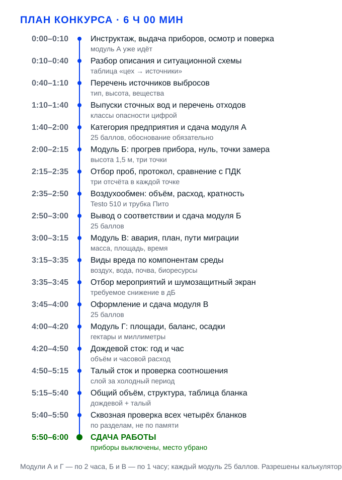
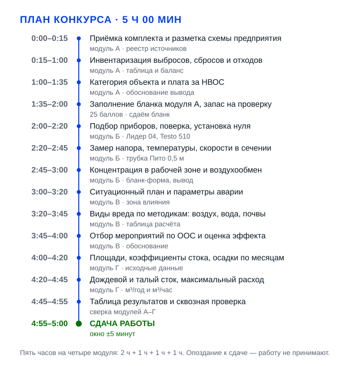
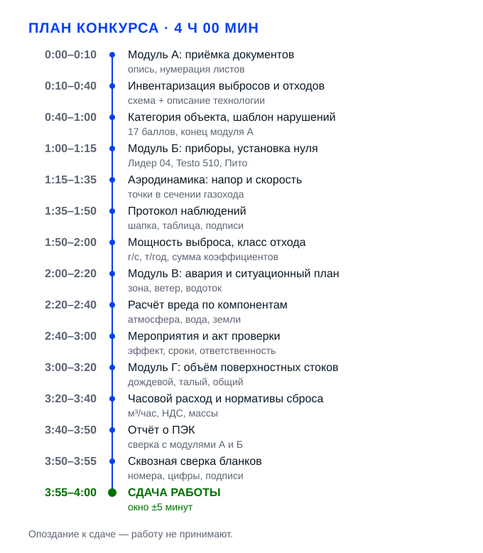

Специалист по экологической безопасности (Р)
Задания ниже — официальные файлы «Абилимпикс» (источник: abilympics-russia.ru), разложенные по категориям. Решения написаны по тексту задания, регламенту и критериям оценки; в них указано, что именно проверяет эксперт.
Школьник
14–16 лет, базовый уровень заданияВыдержка из официального конкурсного задания: страницы, относящиеся к категории «Школьник» (стр. 5–9 источника).
Пошаговое решение
Задание для школьников состоит из четырёх модулей и идёт шесть часов: инвентаризация источников выбросов, сбросов и отходов с определением категории предприятия — два часа, инструментальные замеры и расчёт воздухообмена — час, виды вреда и природоохранные мероприятия — час, расчёт объёма поверхностных стоков — два часа. Каждый модуль стоит 25 баллов, всего 100, и модули жёстко связаны: перечень источников из модуля А задаёт вещества, которые вы ищете газоанализатором в модуле Б, а площади покрытий, посчитанные для стоков в модуле Г, — это те же площади, что на ситуационном плане в модуле В. Разрешено пользоваться калькулятором и линейкой, запрещены телефон и смарт-часы, поэтому все цифры придётся считать на бумаге и проверять дважды. Главный риск здесь не в сложности расчётов, а в неполноте: за пропущенный источник, выпуск или отход снимают балл, а восстановить пропущенное из памяти уже нельзя.

Задача 1. Провести инвентаризацию и определить категорию предприятияМодуль А · 2 часа · 25 баллов
Модуль А — это работа с бумагой: ситуационная схема предприятия, текстовое описание технологических процессов и бланк, в который нужно внести три перечня — источники выбросов, выпуски сточных вод и образующиеся отходы. Дальше по этим перечням определяется категория объекта негативного воздействия. Два часа даны не на размышления, а на аккуратный перебор всех цехов и участков схемы: баллы набираются количеством правильно найденных позиций, а теряются на пропусках и на путанице между организованными и неорганизованными источниками.
Действие 1.1. Разобрать схему и текстовое описание предприятия
Шаг 1.1.1
Берём бланк с текстовым описанием предприятия и читаем его дважды. Первый раз — целиком, не останавливаясь, чтобы понять, что за производство и из каких цехов оно состоит. Второй раз — с карандашом и линейкой: подчёркиваем каждую цифру (площадь промплощадки, высоты труб, объёмы выпусков, массу отходов, число смен, режим работы) и сразу выписываем её в черновик вместе с единицей измерения. Рядом с каждой цифрой ставим номер цеха или участка, к которому она относится, — это потом сэкономит полчаса на сверке.
Модуль А стоит 25 баллов, и почти все они держатся на полноте: перечень источников оценивают по числу правильно найденных позиций. Текстовое описание — единственное место, где эти цифры вообще есть, и если прочитать его один раз «по диагонали», половина источников останется незамеченной, а взять их будет неоткуда. Двукратное чтение занимает восемь минут из ста двадцати и окупается сразу.
В черновике получилась таблица, где у каждой строки есть цех, показатель и единица измерения. Проверьте себя простым вопросом: сколько цехов и участков названо в описании и все ли они есть в таблице. Если строк меньше, чем цехов, — читайте второй раз, пока не сойдётся.
Самая частая ошибка — читать описание как рассказ, надеясь, что цифры запомнятся. Через полчаса выясняется, что высота трубы котельной нигде не записана, и приходится возвращаться к тексту, теряя время из двух часов модуля. Вторая — записывать цифры без единиц: 12 тонн и 12 килограммов выглядят одинаково, а категория от этого меняется.
Эксперт подходит к концу модуля и смотрит черновик рядом с бланком: есть ли у участника рабочая таблица и совпадают ли её строки с тем, что внесено в бланк. Отдельно он отмечает, переносятся ли цифры в бланк с той же точностью, что в черновике.
Шаг 1.1.2
Разворачиваем ситуационную схему предприятия и обводим на ней все объекты, которые могут быть источниками воздействия: дымовые трубы, вентиляционные выбросы цехов, места разгрузки сырья, склады, ёмкости, колодцы и выпуски канализации, площадки складирования отходов, стоянку техники. Каждый обведённый объект нумеруем прямо на схеме — сначала подряд, потом приведём номера в порядок. Смотрим на схему как на карту: важно не только что стоит, но и где стоит, потому что от расположения зависит, организованный это источник или нет.
Схема — второй, независимый источник фактов, и именно она показывает то, чего нет в тексте: например, что труба гальванического цеха выведена на высоту 12 метров, а вытяжка сварочного участка заканчивается под фонарём цеха. Инвентаризация только по описанию всегда даёт пробелы, а только по схеме — ошибки в характеристиках, потому что высоты и объёмы указаны в тексте.
На схеме не осталось необведённых труб, вентиляционных стояков, люков и площадок; число номеров совпадает с числом объектов, которые вы насчитали глазами. Пройдите схему по периметру и по диагоналям — так видны объекты, которые прячутся между крупными зданиями.
Обычная ошибка — обвести только высокие трубы, потому что они заметные. Вентиляционные выбросы цехов, дефлекторы на крыше и неорганизованные источники (погрузка, слив растворителей, открытые ёмкости) дают в сумме не меньше, а по массе часто и больше, чем одна труба, и пропуск каждого — минус балл в критерии полноты перечня.
Эксперт сверяет перечень в бланке со схемой: если на схеме есть труба, которой нет в перечне, он отмечает это как пропуск источника. Если участник нашёл объект, которого нет на схеме, он спрашивает, откуда взялась эта позиция.
Шаг 1.1.3
Строим свою рабочую таблицу из четырёх столбцов: цех или участок, что там происходит, какие источники есть, что из них поступает в окружающую среду. Заполняем её, идя по схеме здание за зданием, а не по описанию, — так легче не пропустить объект, нарисованный мелко. Названия цехов берём из описания, чтобы в бланке они звучали так же, как в задании: расхождение в названиях эксперт может счесть несоответствием.
Эта таблица — каркас всех трёх перечней модуля А: из неё потом вырастают и источники выбросов, и выпуски сточных вод, и отходы. Если каркас полный, дальше работа идёт механически и быстро; если в каркасе дырка, она перейдёт во все три перечня сразу и обойдётся в тройную потерю баллов.
В таблице столько строк, сколько объектов на схеме, и ни одна строка не осталась с пустым четвёртым столбцом. Если у цеха в четвёртом столбце пусто, значит, вы ещё не поняли, что он выбрасывает, — вернитесь к описанию этого цеха.
Ошибка — заполнять таблицу «по памяти о производстве», а не по схеме: участник дорисовывает цеха, которых в задании нет, и пропускает те, что есть. Задание вариативное, набор цехов в каждом варианте свой, и знание «как обычно бывает на заводе» здесь только мешает.
Эксперт смотрит, совпадает ли структура вашей таблицы со структурой предприятия в задании, и нет ли в ней цехов, которых в задании не было. Ему важно увидеть, что таблица заполнялась по схеме, а не переписывалась из описания подряд.
Действие 1.2. Составить перечень источников выбросов
Шаг 1.2.1
По каждому источнику из таблицы определяем тип: организованный (выброс идёт через трубу, вентиляционную шахту, свечу — то есть через специально устроенное устье) или неорганизованный (выброс идёт из открытого проёма, от площадки, при погрузке, через неплотности). Записываем номер источника, наименование, высоту устья в метрах и диаметр или размер проёма, если он указан. Высоту берём из описания или со схемы, и обязательно с единицей измерения.
Тип источника — не формальность: от него зависит и расчёт рассеивания, и то, как источник проверяют на площадке. В критериях оценки перечень источников смотрят именно по этим признакам, и участник, который всех записал «труба», теряет баллы даже при правильном количестве позиций.
У каждого номера в перечне есть тип, высота и размер устья; неорганизованные источники помечены отдельно. Сверьте: число организованных плюс число неорганизованных должно дать общее число строк перечня.
Ошибка — писать «вентиляция цеха» без высоты и диаметра: такую строку невозможно проверить. Вторая, более дорогая, — считать неорганизованным всё, что не труба, и забыть, что загрузка сырья в бункер тоже источник, только без устья. Третья — путать номер источника с номером цеха: в бланке нумерация должна быть своя, сквозная.
Эксперт проверяет, различает ли участник организованные и неорганизованные источники, и выборочно сверяет высоты с описанием. Тип источника он проверяет по схеме: у неорганизованного объекта устья нет по определению.
Шаг 1.2.2
Для каждого источника выписываем вещества, которые из него поступают. Ориентируемся на технологию: при сварке — сварочный аэрозоль и оксиды марганца, при резке металла — пыль и оксиды железа, при работе котельной на газе — оксиды азота и оксид углерода, при покраске — ксилол, толуол, ацетон, при гальванике — пары кислот и щелочей, при деревообработке — древесная пыль. Если в описании перечень веществ дан прямо, берём его оттуда и ничего не добавляем от себя.
Именно этот перечень задаёт, что вы будете искать газоанализатором в модуле Б и какие вещества упомянете в модуле В. Ошибка в перечне тянется через три модуля: не указали оксиды азота — в модуле Б нечем обосновать выбор измеряемого компонента, и теряется балл уже там.
У каждого источника в перечне хотя бы одно вещество, а у источников с явной технологией — весь набор, названный в описании. Сверьте число веществ с числом технологических операций в цехе: одна операция редко даёт больше трёх-четырёх веществ.
Частая ошибка — приписать всем источникам «оксид углерода и оксиды азота» по аналогии с котельной. Вторая — указать вещество, которого в описании нет: эксперт видит несоответствие заданию, и позиция не засчитывается.
Эксперт сверяет перечень веществ с описанием технологии; лишние вещества он отмечает как несоответствие, отсутствующие — как пропуск. При расхождении с описанием он просит объяснить, из какой операции взято это вещество.
Шаг 1.2.3
Проверяем перечень на полноту: берём схему и по каждому обведённому объекту ставим галочку в перечне. Отдельно проходим по местам, которые обычно выпадают: разгрузка сырья, слив-налив жидкостей, открытые ёмкости, стоянка и движение техники, вентиляция складов, лаборатория. Если объект есть на схеме, а строки в перечне нет — дописываем, пока не поздно.
Полнота — самый весомый критерий модуля А: перечень оценивают по числу найденных источников, и каждый пропуск стоит балла. Проверка по схеме занимает десять минут, а возврат к пропущенному источнику после сдачи бланка невозможен вообще. Полнота перечня — самый прямой путь к максимуму баллов в модуле.
Все обведённые на схеме объекты имеют галочку, и число галочек совпадает с числом строк перечня. Отдельно посчитайте неорганизованные источники: если их ноль, вы почти наверняка что-то пропустили. Сверяйте по схеме, а не по памяти.
Ошибка — проверять перечень «на глаз», листая схему. Глаз запоминает крупное, и мелкие объекты вроде дефлектора на крыше склада выпадают. Вторая ошибка — оставить проверку на последние пять минут, когда уже надо сдавать.
Эксперт делает выборочную сверку перечня со схемой, обычно по трём-четырём позициям, и смотрит, есть ли в перечне неорганизованные источники. Полноту он проверяет выборочно, но по трём разным цехам, а не по одному.
Шаг 1.2.4
Переносим перечень в бланк: строки по порядку номеров, столбцы заполнены полностью, без пустых ячеек и без прочерков там, где должно быть значение. Пишем печатными буквами или разборчиво, единицы измерения указываем в шапке столбца, а не в каждой строке. Если бланк табличный и строк меньше, чем источников, — не дописываем на полях, а берём дополнительный лист и подписываем его.
Бланк — то, что эксперт оценивает физически; черновик он может посмотреть, но баллы ставятся по бланку. Нечитаемая запись или значение без единицы измерения трактуется не в пользу участника, потому что проверить такую строку нельзя. Проверяемость записи — тоже часть оценки, а не формальность.
Бланк заполнен целиком, ни одной пустой ячейки, все единицы указаны, номера идут подряд без пропусков. Пройдите бланк пальцем по строкам сверху вниз — так видны пропущенные ячейки. Заодно проверьте, что номера строк идут подряд.
Ошибка — оставлять пустые ячейки «потом уточню»: потом не будет. Вторая — исправлять зачёркиванием: в бланке лучше аккуратная поправка с подписью, чем грязное зачёркивание поверх цифры, которое эксперт не сможет прочитать.
Эксперт проверяет бланк на читаемость и полноту сразу после сдачи модуля, пока участник ещё рядом и может пояснить запись. Отдельно он смотрит, есть ли в бланке подпись и время, если форма это предусматривает.
Действие 1.3. Описать выпуски сточных вод и перечень отходов
Шаг 1.3.1
Идём по схеме и находим все выпуски: ливневую канализацию с площадки, производственную канализацию от цехов, хозяйственно-бытовую от бытовых помещений. Для каждого выпуска записываем номер, откуда собирает воду, куда сбрасывает (водоём, городской коллектор, накопитель, рельеф), и объём в кубических метрах в год или в сутки — то, что дано в описании. Если выпуск идёт в водоём, отмечаем, есть ли очистные сооружения и какие.
Виды и количество выпусков — прямо названный результат модуля А, за него дают часть из 25 баллов. Кроме того, именно выпуски определяют, будете ли вы в модуле В считать вред водному объекту: без выпуска в водоём этот вид вреда обосновать нечем. Кроме того, число выпусков влияет на расчёт стоков в модуле Г.
У каждого выпуска есть номер, источник воды, приёмник и объём. Проверьте, что число выпусков на схеме совпадает с числом строк в перечне, и что ни один выпуск не обозначен просто как «канализация» без приёмника.
Ошибка — считать все стоки одним выпуском «на городские очистные». Вторая — забыть ливнёвку: она на схеме часто нарисована тонкой линией по периметру площадки и собирает воду с асфальта, то есть даёт наибольший объём и наибольшую нагрузку.
Эксперт сверяет число выпусков со схемой и смотрит, различает ли участник производственные, ливневые и бытовые стоки. Если выпуск нарисован, а в перечне его нет, это фиксируется как пропуск, а не как описка.
Шаг 1.3.2
Составляем перечень отходов по цехам: металлическая стружка и обрезь, шлак и окалина, отработанные масла и эмульсии, ветошь, отработанные люминесцентные лампы, аккумуляторы, шины, шлам очистных сооружений, твёрдые коммунальные отходы от бытовых помещений, упаковка. Для каждого отхода пишем наименование по возможности ближе к формулировке федерального классификационного каталога отходов и указываем класс опасности — от первого до пятого.
Перечень отходов — третий обязательный результат модуля, и он же самый чувствительный к классу опасности: отходы первого и второго классов требуют отдельного обращения и отдельно учитываются при категорировании. Участник, который всех записал «отходы производства, 5 класс», теряет баллы почти по каждой строке.
В перечне есть отходы от каждого цеха, у каждого указан класс опасности, и отдельно выделены лампы, масла и аккумуляторы — они есть почти на любом предприятии и почти всегда выпадают из перечня. Сверьте перечень с таблицей цехов из первого действия.
Ошибка — писать «мусор» и «отходы» общими словами: такая строка не засчитывается. Вторая — путать класс опасности отхода с классом опасности вещества в выбросе: это разные классификации, и эксперт это видит сразу.
Эксперт проверяет, есть ли в перечне специфические отходы предприятия (лампы, масла, шлам) и правильно ли указаны классы опасности у двух-трёх позиций на выбор. Класс опасности он сверяет по каталогу, а не по памяти, и отмечает явные ошибки.
Шаг 1.3.3
Проверяем перечень отходов на жизненность: для каждого цеха отвечаем на вопрос, что остаётся после его работы. Механообработка даёт стружку и отработанную смазочно-охлаждающую жидкость, гальваника — шлам и отработанные растворы, котельная — золу или конденсат, деревообработка — опилки и обрезки, транспортный участок — шины, аккумуляторы, отработанные масла и фильтры, бытовые помещения — твёрдые коммунальные отходы и упаковку.
Такая проверка «от технологии» ловит пропуски, которые не видны при чтении списка: перечень, составленный по памяти, обычно содержит стружку и мусор, но не содержит шлама и обтирочной ветоши. Каждый пропущенный вид отхода — потерянный балл, а исправлять перечень после сдачи нельзя.
У каждого цеха в перечне хотя бы один отход, и число отходов растёт от простых участков к сложным. Если у гальванического цеха в перечне только «мусор», вы недодумали технологию. Проверяйте по цехам, а не по алфавиту отходов.
Ошибка — переносить перечень отходов из одного варианта задания в другой: задание вариативное, набор цехов меняется, и чужой перечень не подходит. Вторая — записывать отход, которого технология дать не может, например золу на предприятии без твёрдого топлива.
Эксперт сопоставляет перечень отходов с описанием технологических процессов и отмечает несоответствия в обе стороны — и пропуски, и лишние позиции. Ему важно видеть, что перечень составлялся от технологии, а не копировался из образца.
Шаг 1.3.4
Оформляем сбросы и отходы в бланк так же, как выбросы: табличные строки, полные ячейки, единицы измерения, классы опасности цифрой. Если в бланке для отходов предусмотрен столбец «количество», вписываем массу в тоннах в год из описания, а если данных нет — ставим прочерк осознанно, понимая, что за прочерк балл не дадут, но выдуманное число даст минус за недостоверность.
Оценка идёт по бланку, а не по черновику, и аккуратность записи прямо влияет на балл: две одинаковые по содержанию работы различаются только читаемостью и полнотой ячеек. Кроме того, классы опасности из этого бланка понадобятся в модуле В, когда нужно будет назвать вред почве.
Все три перечня в бланке заполнены, ячейки не пустые, классы опасности стоят цифрами, а не словами. Пролистайте бланк целиком: если хотя бы один раздел выглядит короче остальных, вернитесь к нему. Особенно смотрите на строки с прочерками.
Ошибка — оставить раздел отходов на конец и заполнить его в спешке за три минуты. Вторая — писать класс опасности словами «пятый», тогда как в шапке столбца стоит «класс» и ожидается цифра. Прочерк без объяснения эксперт считает пропуском.
Эксперт просматривает бланк целиком после сдачи модуля и отдельно отмечает, заполнены ли все три раздела, а не только первый. Он отмечает, заполнены ли все три раздела бланка, а не только первый.
Действие 1.4. Определить категорию предприятия по критериям
Шаг 1.4.1
Считаем суммарную массу выбросов: складываем массы всех веществ по всем источникам за год, приведённые в описании, и получаем одно число в тоннах в год. Считаем на калькуляторе, столбиком на бумаге и проверяем результат третьим способом — прикидкой порядка: если самое большое слагаемое 8 тонн, сумма не может быть 800. Отдельно выписываем, какие вещества входят в выбросы, потому что дальше понадобится их класс опасности.
Суммарная масса — первый количественный признак категорирования: по действующим критериям объект с массой выбросов не более 10 тонн в год при отсутствии веществ первого и второго классов опасности может быть отнесён к четвёртой категории. Ошибка в сумме на порядок переводит предприятие в другую категорию, и весь вывод разваливается.
Сумма посчитана дважды и оба раза совпала, единица измерения — тонны в год, рядом выписан перечень веществ с классами опасности. Проверьте, что в сумму попали все строки перечня, а не только крупные. Проверьте также, что сумма не меньше самого большого слагаемого.
Ошибка — складывать массы в разных единицах: в описании часть данных может быть в килограммах или в граммах в секунду. Вторая — складывать концентрации вместо масс: миллиграммы на кубометр суммировать бессмысленно, получится число без физического смысла и без единицы измерения.
Эксперт проверяет расчёт суммы и смотрит, приведены ли все слагаемые к одной единице измерения. Он проверяет, приведены ли все массы к тоннам в год до сложения.
Шаг 1.4.2
Проверяем, есть ли в выбросах вещества первого и второго классов опасности. Смотрим перечень: к первому классу относятся, например, ртуть, кадмий, бензпирен; ко второму — сероводород, фтористые соединения, свинец, формальдегид, хлор. Если такие вещества есть хотя бы в одном источнике, даже при малой массе, путь к четвёртой категории закрыт, и это надо записать отдельной строкой.
Это второй, качественный признак, и он работает независимо от массы: десять килограммов ртути в год — это не «мало», это первый класс. Участники, которые смотрят только на тонны, получают красивый и неправильный вывод, а критерий обоснованности категории стоит в модуле отдельных баллов.
В бланке отмечено, есть или нет вещества первого и второго классов, и если есть — названы конкретно. Проверьте по перечню из предыдущего действия, а не по памяти. Отдельно проверьте вещества, которые идут от неорганизованных источников.
Ошибка — считать, что «маленькая масса безопасна». Вторая — забыть про вещества, которые идут не из трубы, а от неорганизованных источников: они тоже входят в выбросы и тоже учитываются при категорировании.
Эксперт смотрит именно на этот шаг: правильно ли участник увидел ограничение по классам опасности веществ. Он смотрит, названы ли конкретные вещества, а не написано «опасных веществ нет».
Шаг 1.4.3
Применяем критерии по порядку, от первой категории к четвёртой. Сначала проверяем, относится ли деятельность к областям применения наилучших доступных технологий: если да — это первая категория. Если нет, смотрим, попадает ли объект в перечень видов деятельности второй категории. Если не попал ни туда, ни туда и не подходит под четвёртую — это третья категория. Четвёртая ставится только тогда, когда масса выбросов не более 10 тонн в год и в выбросах нет веществ первого и второго классов.
Категория — главный вывод модуля А, за неё дают существенную часть баллов, и оценивают не только саму цифру, но и обоснование. Эксперт смотрит, названо ли основание: вид деятельности, масса выбросов, классы опасности веществ. Ответ «третья, потому что похоже» баллов не даёт.
В бланке написана категория римской цифрой и рядом — основание одной-двумя фразами со ссылкой на критерий. Проверьте логику: если вы назвали четвёртую категорию, то в предыдущем шаге должно быть записано, что веществ первого и второго классов нет.
Ошибка — выбирать категорию по размеру предприятия: «завод большой, значит первая». Вторая — не писать обоснование: без него даже правильная цифра оценивается ниже, потому что проверить её нельзя. Третья ошибка — ставить категорию, не проверив предыдущие.
Эксперт читает вывод и обоснование и сверяет их с критериями; при расхождении снижает балл за обоснованность, даже если категория угадана. При верной категории без основания он ставит только половину балла за этот элемент.
Шаг 1.4.4
Заканчиваем модуль: ещё раз проходим бланк по разделам — источники выбросов, выпуски сточных вод, отходы, категория с обоснованием. Ставим подпись и время сдачи, если это предусмотрено формой. Убираем со стола черновики так, чтобы нужные вам листы остались под рукой: перечень веществ и площади покрытий понадобятся в следующих модулях. Подписанный бланк — единственное доказательство сдачи.
Сдача модуля — это фиксация результата: после неё бланк уже не изменить. Пять минут на сквозную проверку стоят дороже, чем пять минут, потраченные на ещё один расчёт: именно на сдаче обнаруживаются пустые ячейки и потерянные разделы. Кроме того, на сдаче видно, успел ли участник распределить время по модулям.
Все четыре раздела бланка заполнены, категория с обоснованием на месте, подпись стоит. Спросите себя: если эксперт возьмёт бланк без вас, сможет ли он понять каждую строку. Если хотя бы один раздел заполнен наполовину, время на проверку ещё есть.
Ошибка — сдавать бланк, не пролистав его целиком: пустой раздел отходов находят уже после сдачи. Вторая — сдавать раньше времени, не используя оставшиеся минуты на проверку. Третья — оставить черновик на столе, а нужный лист забрать с собой.
Эксперт принимает бланк и фиксирует время сдачи; при неполном бланке он вправе уточнить, всё ли участник считает сданным. Он также следит, не осталось ли на столе листов, которые участник считает уже сданными.
Задача 2. Замерить концентрацию и рассчитать воздухообменМодуль Б · 1 час · 25 баллов
Модуль Б — единственный, где вы работаете руками и приборами: газоанализатор «Лидер 04» показывает концентрацию загрязняющего вещества в воздухе рабочей зоны, дифференциальный манометр Testo 510 с напорной трубкой Пито даёт скорость воздуха в воздуховоде, а дальше начинается арифметика — сколько воздуха нужно помещению и сколько оно получает на самом деле. На всё один час, и половина этого часа уходит на подготовку приборов и аккуратную запись, а не на измерения. Баллы дают за три вещи: корректно снятые показания, правильный расчёт и обоснованный вывод о соответствии нормативным значениям. Вывод без цифр и цифры без вывода оцениваются одинаково низко.
Действие 2.1. Подготовить приборы и рабочее место
Шаг 2.1.1
Получаем на площадке газоанализатор «Лидер 04», дифференциальный манометр Testo 510, напорную трубку Пито длиной 0,5 метра и рулетку. Первым делом смотрим на корпус газоанализатора: есть ли на нём пломба или наклейка о поверке с датой. Дату записываем в черновик, потому что она идёт в протокол. Осматриваем пробоотборную трубку и фильтр: они должны быть сухими и чистыми, без капель конденсата внутри.
Сведения о поверке — обязательная часть протокола: результат, полученный прибором с истёкшей поверкой, юридически недействителен, и эксперт снимает баллы за оформление независимо от того, насколько точно вы измерили. Грязный фильтр забивается и занижает показания, а конденсат в трубке искажает результат сильнее любой погрешности.
В черновике записаны тип прибора, его заводской номер и дата поверки, трубка и фильтр визуально чистые и сухие. Если на корпусе нет отметки о поверке — сразу поднимаем руку и говорим об этом эксперту, не приступая к замерам.
Ошибка — начинать измерения, не посмотрев на дату поверки: потом выясняется, что она истекла, и весь модуль приходится переделывать на другом приборе. Вторая — продувать трубку ртом «чтобы прочистить»: вместе с дыханием в тракт попадает влага, и показания плывут.
Эксперт подходит к рабочему месту в начале модуля и проверяет, осмотрел ли участник прибор и зафиксировал ли сведения о поверке. Отсутствие отметки о поверке он фиксирует сразу, до начала измерений.
Шаг 2.1.2
Включаем газоанализатор и даём ему прогреться — обычно это несколько минут, точное время указано в паспорте прибора, и его нужно выдержать полностью. Прогрев проверяем по экрану: показания должны выйти на ноль или на фоновое значение и перестать ползти. Затем проверяем нуль на чистом воздухе — выносим прибор в коридор или к открытому окну, подальше от вытяжек и людей, и смотрим, что показывает датчик по измеряемому веществу.
Непрогретый прибор даёт завышенные или заниженные показания первые минуты, и именно в эти минуты неопытные участники записывают первое число. Проверка нуля нужна, чтобы отделить настоящую концентрацию от дрейфа датчика: если на чистом воздухе прибор показывает заметное значение, все дальнейшие цифры надо будет корректировать, и об этом следует сказать эксперту.
Показания на экране стабильны, на чистом воздухе — ноль или значение ниже порога чувствительности. В черновике записано время включения и время выхода на режим, чтобы потом было видно, что прогрев выдержан.
Ошибка — включать прибор и сразу идти с ним в цех, считая, что «пока дойду — прогреется». Вторая — не проверить нуль и потом не понять, откуда взялось фоновое значение. Третья — проверять нуль в цеху, где фон всегда ненулевой.
Эксперт смотрит на экран прибора в момент замера и может спросить, выдержан ли прогрев; по времени в протоколе это видно. По времени включения в протоколе видно, выдержан ли прогрев прибора.
Шаг 2.1.3
Выбираем точки замера. В помещении или у источника берём не менее трёх точек: две по углам рабочей зоны и одну в середине, на высоте 1,5 метра от пола — это уровень дыхания работающего человека. Точки не должны попадать в зону прямой струи от вентиляции и вплотную к стене: у стены поток заторможен, и концентрация там не характерна. Каждую точку помечаем на плане помещения номером.
Высота 1,5 метра и три точки — это требование к представительности пробы: концентрация в рабочей зоне неравномерна, и одно измерение у стены легко даёт результат вдвое ниже реального. Критерий «правильность отбора проб» оценивают отдельно, и эксперт смотрит именно на схему точек.
На плане или в черновике есть три точки с номерами, у каждой указана высота 1,5 метра и расстояние от стен и оборудования. Проверьте, что точки не выстроены в одну линию вдоль стены. Точки должны быть разнесены по помещению, а не стоять рядом.
Ошибка — мерить в одной точке у вытяжки: там концентрация минимальна, и вывод «соответствует нормативу» будет ложным. Вторая — мерить на уровне стола: на высоте 0,8 метра концентрация другая, и результат нельзя сравнивать с ПДК рабочей зоны.
Эксперт смотрит на выбранные точки до начала отбора и сверяет их с планом помещения. Он сверяет точки на плане с фактическим положением прибора в помещении.
Шаг 2.1.4
Собираем измерительный тракт для воздухообмена: к дифференциальному манометру Testo 510 подключаем напорную трубку Пито двумя силиконовыми шлангами — один на полное давление, второй на статическое, и следим, чтобы шланги не были перепутаны. Нулевой уровень манометра проверяем до установки трубки в поток: показания должны быть нулевыми. Рулеткой измеряем диаметр воздуховода или размеры решётки, чтобы потом посчитать площадь сечения.
Перепутанные шланги дают отрицательное давление и, как следствие, мнимую скорость потока; эта ошибка не видна на глаз, но полностью обнуляет расчёт воздухообмена, а на него в модуле отведена четверть баллов. Замер диаметра нужен потому, что расход воздуха — это скорость, умноженная на площадь, и без площади результат не получить.
Манометр показывает ноль до установки трубки, шланги подключены по маркировке, диаметр воздуховода измерен и записан в метрах. Проверьте единицы: рулетка даёт миллиметры, а в формулу нужны метры. Шланги подписывайте сразу, чтобы не путать их при перестановке.
Ошибка — измерять диаметр «на глаз» или брать размер решётки вместо внутреннего сечения воздуховода: площадь завышается, и расход получается нереальным. Вторая — забыть про ноль манометра. Третья — держать трубку рукой за отверстия, перекрывая поток.
Эксперт проверяет сборку тракта и может попросить показать, какой шланг куда подключён. Он может попросить показать, какой шланг подключён к полному давлению.
Действие 2.2. Отобрать пробы и определить концентрацию
Шаг 2.2.1
В каждой из трёх точек берём пробу: опускаем пробоотборную трубку на высоту 1,5 метра, включаем насос и держим прибор в точке не менее двух-трёх минут, пока показания не устоятся. За это время делаем три отсчёта с интервалом в минуту и записываем все три, а не только последний. Трубку держим так, чтобы она не касалась оборудования и стен, и не заслоняем её рукой.
Три отсчёта в точке нужны, чтобы увидеть разброс: если показания скачут от 2 до 9 миллиграммов на кубометр, значит, поток нестабилен и одно число записывать нельзя. Критерий точности оценивает именно воспроизводимость, и эксперт смотрит, есть ли в черновике серия, а не одно значение.
В черновике по каждой точке три числа и время каждого отсчёта; разброс между ними не больше четверти среднего. Если разброс больше, точку перемеряем, а не усредняем вслепую. Разброс считайте по каждой точке отдельно, а не по всем вместе.
Ошибка — записывать первое попавшееся показание: оно почти всегда завышено из-за непрогретого датчика или только что поднесённой трубки. Вторая — держать прибор в точке десять секунд: датчику нужно время, чтобы выйти на режим.
Эксперт наблюдает за отбором пробы и отмечает, выдержано ли время и снята ли серия отсчётов. Он смотрит на время выдержки: слишком короткая видна сразу по записи.
Шаг 2.2.2
Записываем результаты в протокол: номер точки, время отбора, измеренное вещество, концентрация в миллиграммах на кубический метр, температура воздуха и давление, если прибор их показывает. Пишем карандашом сразу, на месте, а не по памяти после модуля: через час вы не вспомните, в какой точке было 4, а в какой 7. Если прибор показывает в других единицах, переводим сразу и записываем оба значения.
Протокол — это то, что сдаётся и оценивается; в критериях есть отдельный пункт за правильность оформления результатов замеров. Числа без привязки к точке и времени проверить невозможно, и они не засчитываются, даже если измерение было сделано правильно.
В протоколе заполнены все столбцы, у каждого числа есть единица измерения и номер точки, время указано с точностью до минуты. Сверьте: число строк протокола должно быть втрое больше числа точек. Проверьте, что время указано для каждого отсчёта, а не одно на точку.
Ошибка — писать результаты на клочке и переносить в бланк в конце модуля, путая точки. Вторая — оставлять столбец «вещество» пустым: тогда непонятно, что вообще измерялось и с чем сравнивать. Третья — не указывать, каким прибором сделано измерение.
Эксперт может подойти в середине модуля и посмотреть, ведётся ли протокол по ходу работы или всё записывается в конце. Он проверяет, ведётся ли протокол по ходу работы, а не заполняется в конце.
Шаг 2.2.3
Сравниваем полученные концентрации с предельно допустимой концентрацией рабочей зоны. Значения берём из справочника в бланке задания или из санитарных норм: для оксида углерода это 20 миллиграммов на кубометр, для диоксида азота — 2, для диоксида серы — 10, для нетоксичной пыли — 4, для ацетона — 200. Сравниваем каждую точку отдельно и отдельно — максимальное значение, а не только среднее.
Сравнение с нормативом — то, ради чего делался замер: результат модуля сформулирован как вывод о соответствии нормативным значениям, и без сравнения он не существует. Сравнивать надо максимум, потому что превышение в одной точке — это уже нарушение, даже если в двух других всё хорошо.
Для каждой точки записано «измерено — ПДК — соотношение», и отдельной строкой выписан максимум. Проверьте, что ПДК взята именно для рабочей зоны, а не для населённых мест: это разные величины, и разница достигает десяти раз.
Ошибка — сравнивать с ПДК для атмосферного воздуха населённых мест: она жёстче, и вывод получается ложным превышением. Вторая — сравнивать среднее, не посмотрев максимум. Третья — сравнивать концентрацию с ПДК другого вещества.
Эксперт проверяет, из какого справочника взято значение ПДК и относится ли оно к воздуху рабочей зоны. Он спрашивает, из какого справочника взято значение ПДК и для какой среды.
Шаг 2.2.4
Считаем среднее по каждой точке и общее среднее по помещению, округляя до одного знака после запятой. Рядом пишем вывод одной фразой: соответствует или не соответствует, и во сколько раз максимальное значение отличается от норматива. Если превышение есть, указываем, в какой точке оно зафиксировано и на сколько процентов превышен норматив. Округление фиксируйте одинаковое во всех строках.
Среднее нужно для расчёта воздухообмена в следующем действии, а вывод — это самостоятельный элемент оценки: за него дают баллы, и он должен стоять в протоколе явно. Формулировка «всё нормально» без числа не засчитывается, потому что её нельзя проверить.
Средние посчитаны по каждой точке и по помещению, вывод сформулирован с числом и кратностью. Проверьте арифметику обратным действием: среднее трёх чисел должно лежать между минимальным и максимальным.
Ошибка — считать среднее по всем девяти отсчётам, не глядя на точки: одна «грязная» точка утонет в общей массе. Вторая — писать вывод до расчёта среднего, «на глаз». Третья — не указывать точку, в которой зафиксировано превышение.
Эксперт читает вывод и сверяет его с числами протокола; расхождение между выводом и цифрами считается ошибкой обоснования. Он сверяет вывод с числами протокола и отмечает расхождения между ними.
Действие 2.3. Рассчитать показатели воздухообмена
Шаг 2.3.1
Измеряем помещение рулеткой: длину, ширину и высоту, каждую величину — в метрах, с точностью до сантиметра, и записываем в черновик. Считаем объём: перемножаем три размера. Если помещение сложной формы, разбиваем его на простые части и складываем объёмы. Отдельно считаем площадь сечения воздуховода или вентиляционной решётки: для круглого — по диаметру, для прямоугольного — перемножением сторон.
Объём помещения — знаменатель в формуле кратности воздухообмена, и без него нельзя ответить на главный вопрос модуля: сколько раз воздух помещения заменяется за час. Площадь сечения нужна, чтобы перевести измеренную скорость в расход: это следующая ступень того же расчёта, и ошибка здесь обесценивает точный замер скорости.
Объём посчитан в кубических метрах, площадь сечения — в квадратных метрах, обе величины записаны с единицами. Прикиньте порядок: помещение 12 на 8 метров при высоте 4 метра даёт около 380 кубических метров, и результат вроде 38 или 3800 означает ошибку в переводе единиц.
Ошибка — подставлять в формулу размеры в сантиметрах: объём вырастает в миллион раз, а кратность становится абсурдной. Вторая — брать наружные размеры здания вместо внутренних размеров помещения. Третья — измерять высоту до перекрытия, а не до потолка.
Эксперт проверяет запись размеров и объёма; при явно неверном порядке величины он просит пересчитать. Он проверяет, в метрах ли записаны размеры, и выборочно пересчитывает объём.
Шаг 2.3.2
Считаем требуемый расход воздуха: количество вредного вещества, поступающего в помещение за час (в миллиграммах), делим на разность между ПДК рабочей зоны и концентрацией этого вещества в приточном воздухе. Если приточный воздух чистый, разность равна самой ПДК. Получаем расход в кубических метрах в час — это тот объём, который вентиляция обязана подавать, чтобы концентрация не превысила норматив.
Требуемый расход — нормативная планка, с которой сравнивается фактический воздухообмен. Именно это сравнение даёт содержательный вывод модуля: не «вентиляция есть», а «вентиляция обеспечивает или не обеспечивает норму». За такой вывод и даются баллы в критерии обоснованности.
Расход посчитан в кубических метрах в час, размерность проверена: миллиграммы в час, делённые на миллиграммы на кубометр, дают кубометры в час. Прикиньте порядок: при поступлении 50 граммов в час и ПДК 20 миллиграммов на кубометр требуется 2500 кубических метров в час.
Ошибка — забыть перевести граммы в миллиграммы: результат занижается в тысячу раз, и вывод получается «вентиляция с огромным запасом». Вторая — вычитать концентрацию приточного воздуха, не измерив её, «наугад».
Эксперт смотрит формулу и подстановку: важно, чтобы единицы были приведены к одной системе до деления. Он смотрит подстановку и единицы до деления, а не только итог.
Шаг 2.3.3
Считаем фактический расход воздуха через воздуховод. По манометру берём динамическое давление в паскалях, переводим его в скорость по формуле: скорость равна корню квадратному из удвоенного давления, делённого на плотность воздуха, — при обычных условиях плотность принимают 1,2 килограмма на кубометр. Умножаем скорость на площадь сечения и на 3600 секунд, получаем расход в кубических метрах в час.
Фактический расход — вторая половина сравнения: без него требуемый расход остаётся теоретическим числом. Формула через корень даёт нелинейную зависимость, поэтому ошибка в давлении вдвое меняет скорость не вдвое, а в 1,4 раза, и на глаз это не проверить — считать надо аккуратно.
Скорость получена в метрах в секунду, расход — в кубических метрах в час. Проверьте порядок: при динамическом давлении 120 паскалей скорость около 14 метров в секунду, а через сечение диаметром 0,3 метра это даёт примерно 3600 кубических метров в час.
Ошибка — забыть умножить на 3600 и получить расход в кубометрах в секунду, который потом сравнивается с часовым нормативом и даёт ложное «не соответствует». Вторая — перепутать диаметр и радиус при расчёте площади сечения: площадь отличается вчетверо.
Эксперт проверяет расчёт скорости и площади; чаще всего ошибки находятся именно в переводе единиц. Он проверяет расчёт площади сечения и перевод скорости в расход.
Шаг 2.3.4
Считаем кратность воздухообмена: фактический расход делим на объём помещения, получаем число обменов в час. Сравниваем фактический расход с требуемым и формулируем вывод: обеспечивает вентиляция норму или нет, с запасом или с недостатком, во сколько раз. Записываем в бланк три числа — требуемый расход, фактический расход и кратность — и одну фразу вывода.
Кратность — итоговый показатель модуля, тот самый «расчёт показателей воздухообмена», который назван в задании. Вывод о соответствии — второй названный результат, и он должен опираться на сравнение двух расходов, а не на общее впечатление от помещения. Оба элемента оцениваются в модуле Б отдельно.
В бланке стоят все три числа с единицами и вывод, в котором назван знак сравнения. Проверьте логику: если фактический расход больше требуемого, вывод должен быть «соответствует», и наоборот. Проверьте также, что кратность не отрицательная и не равна нулю.
Ошибка — писать вывод «вентиляция работает нормально», не сравнив числа. Вторая — считать кратность по требуемому расходу вместо фактического и выдавать желаемое за измеренное. Третья — сравнивать расходы, посчитанные за разные промежутки времени.
Эксперт читает итоговый вывод и проверяет, что он следует из двух расходов, а не существует отдельно от расчёта. Он читает итоговый вывод и смотрит, следует ли он из двух расходов.
Задача 3. Определить виды вреда и предложить природоохранные мероприятияМодуль В · 1 час · 25 баллов
Модуль В начинается с аварийной ситуации: в описании сказано, что произошло, в каком объёме и где, а на ситуационном плане видно, куда это может уйти — в водоём, на рельеф, в жилую зону. Нужно перечислить все виды вреда, которые предприятие причинило компонентам природной среды, выбрать из предложенного перечня те мероприятия по охране окружающей среды, которые действительно снижают этот вред, и посчитать параметры шумозащитного экрана. Час короткий, поэтому работа идёт по компонентам среды: воздух, вода, почва, растительный и животный мир — и по каждому компоненту сразу формулируется вид вреда, иначе к концу часа список останется недописанным.
Действие 3.1. Разобрать аварийную ситуацию и ситуационный план
Шаг 3.1.1
Читаем данные об аварийной ситуации с карандашом: что именно вышло из строя, какое вещество попало в окружающую среду, в каком количестве, в течение какого времени, при какой температуре и на какой площади. Каждую цифру выписываем отдельной строкой с единицей измерения: тонны, кубические метры, часы, квадратные метры. Отдельно выписываем, что сказано про очистные сооружения и про то, сработала ли автоматическая защита.
Количество и длительность — это исходные данные для расчёта вреда: без массы вещества нельзя применить таксы, а без времени нельзя оценить, успело ли вещество дойти до водоёма. В критериях оценки виды вреда проверяют на обоснованность, и формулировка «причинён вред атмосфере» без объёма баллов не даёт.
В черновике есть отдельный блок «авария» с шестью-семью числами, у каждого — единица измерения. Проверьте, что выписаны и масса, и площадь, и время: если одного из этих чисел нет в описании, значит, его надо искать в другой части задания.
Ошибка — читать описание аварии как вступление и сразу переходить к видам вреда, не выписав цифры: потом считать нечем. Вторая — путать массу выброшенного вещества с массой образовавшегося отхода: это разные величины.
Эксперт смотрит, выписаны ли исходные данные аварии отдельным блоком, и сверяет их с заданием. Он проверяет, выписаны ли масса, площадь и время отдельным блоком.
Шаг 3.1.2
Берём ситуационный план и наносим на него путь распространения: от места аварии по направлению ветра, указанному в описании, и по уклону рельефа — вниз, к ближайшей низине, водостоку, реке. Отмечаем стрелками, куда уйдёт жидкая фаза и куда — газообразная. Если на плане есть ливневая канализация с выпуском в водоём, прослеживаем её до выпуска: это самый частый путь попадания в воду.
Вред считается по тем компонентам, которых вещество реально достигло, и путь распространения — единственное доказательство этого. Участник, который перечисляет все компоненты подряд «на всякий случай», теряет баллы за необоснованность, а тот, кто не проследил ливнёвку, теряет целый вид вреда — водный объект.
На плане нарисованы стрелки или зона, и подписано, до какого объекта вещество дошло. Проверьте: если в описании есть водоём и ливневая канализация, а на плане путь к ним не нанесён, вы пропустили самое дорогое направление.
Ошибка — наносить путь «по прямой» без учёта уклона и ветра. Вторая — считать, что жидкое вещество останется на площадке: на асфальте оно уходит в ливнёвку за минуты. Третья — не учитывать, что часть вещества осталась в помещении.
Эксперт смотрит на план с нанесёнными стрелками: это самый быстрый способ понять, думал ли участник о путях миграции. Нанесённые на план стрелки он считает лучшим доказательством понимания.
Шаг 3.1.3
Оцениваем обстановку вокруг площадки: расстояние до жилой застройки, до ближайшего водного объекта, до водозабора, до особо охраняемой природной территории, до сельхозугодий. Расстояния берём с плана по масштабу или из описания, записываем в метрах или километрах. Рядом отмечаем, есть ли на пути вещество-препятствие: обваловка, дамба, лесополоса, очистные сооружения.
Расстояния определяют, какие виды вреда вообще возможны: если до водоёма три километра и на пути очистные сооружения, вред водному объекту надо обосновывать отдельно, а не объявлять по факту. Одновременно эти же расстояния нужны для шумозащитного экрана в конце модуля — экран ставится между источником и защищаемым объектом.
В черновике есть список защищаемых объектов с расстояниями и отметкой, что стоит на пути. Проверьте по плану масштаб: расстояние, снятое линейкой, надо умножить на величину масштаба, а не принимать за метры.
Ошибка — оценивать расстояния на глаз, без масштаба: ошибка в десять раз меняет вывод о достижимости водоёма. Вторая — не заметить, что жилая зона начинается сразу за забором: тогда шумовой экран обязателен, а участник его не считает.
Эксперт сверяет расстояния с планом и смотрит, названы ли защищаемые объекты явно. Он сверяет расстояния с масштабом плана и смотрит, названы ли защищаемые объекты.
Действие 3.2. Перечислить виды вреда по компонентам среды
Шаг 3.2.1
Формулируем вред атмосферному воздуху: какое вещество, в какой массе поступило, на какой территории и в течение какого времени. Если в описании есть данные для расчёта по методике исчисления размера вреда, подставляем их и получаем сумму в рублях; если данных для расчёта нет, ограничиваемся обоснованным качественным описанием с массой и площадью воздействия. Обязательно указываем, был ли превышен норматив качества атмосферного воздуха.
Атмосферный воздух — первый компонент, который страдает при большинстве аварий, и пропустить его почти невозможно; но за пустую формулировку без массы и площади балл не дают. Ссылка на методики, утверждённые Минприроды России, — прямое требование задания, и она должна прозвучать в работе.
В бланке есть строка «атмосферный воздух» с веществом, массой, площадью и выводом о превышении. Проверьте, что масса совпадает с той, что выписана в блоке «авария»: расхождение между разделами эксперт замечает сразу.
Ошибка — писать «вред воздуху нанесён выбросом» без единиц. Вторая — указывать вещество, которого в аварии не было, по аналогии с перечнем источников из модуля А. Третья — не указывать, была ли превышена предельно допустимая концентрация.
Эксперт сверяет формулировку с описанием аварии и смотрит, назван ли норматив, относительно которого оценивается превышение. Он ищет в строке норматив, относительно которого оценено превышение.
Шаг 3.2.2
Формулируем вред водному объекту, если вещество до него дошло: называем водный объект, массу поступившего вещества, объём загрязнённых стоков, длительность сброса. Отмечаем, есть ли рыбохозяйственное значение у водоёма, потому что от этого зависит применяемая такса. Если вреда водному объекту нет, это надо не молчать, а написать прямо, с обоснованием — например, что стоки ушли в накопитель и не достигли водоёма.
Водный объект — самый дорогой по таксам компонент, и обоснование здесь оценивают особенно внимательно: нужно показать путь попадания, а не только факт наличия реки рядом. Прямое указание «вреда нет» с обоснованием тоже засчитывается как правильный ответ и защищает от потери баллов за необоснованное утверждение.
В бланке по водному объекту есть либо расчёт с массой и таксой, либо обоснованный вывод об отсутствии воздействия с указанием, куда ушли стоки. Проверьте, что назван конкретный водный объект из задания.
Ошибка — объявлять вред водному объекту, потому что «на предприятии есть выпуск»: выпуск и аварийный сброс — разные вещи. Вторая — забыть указать рыбохозяйственный статус водоёма, от которого зависит размер вреда.
Эксперт проверяет, есть ли в строке путь попадания в водоём и чем он подтверждён. Он проверяет, чем именно подтверждён путь попадания в водоём, и просит назвать его по плану.
Шаг 3.2.3
Формулируем вред почве и землям: площадь загрязнения в квадратных метрах, глубина проникновения в сантиметрах, вещество и его концентрация по описанию. Если вещество осталось на поверхности и образовало отход, указываем вид отхода и его класс опасности — это связывает модуль В с перечнем отходов из модуля А. Считаем массу загрязнённого грунта, если в задании есть плотность или глубина.
Почва — компонент, который страдает при проливах на грунт и при осаждении вещества из воздуха, и вред ей считают по площади и глубине, а не по массе выброса. Связка с перечнем отходов важна: образовавшийся при ликвидации загрязнённый грунт — это отход определённого класса, и его судьба входит в перечень мероприятий.
В бланке по почве есть площадь, глубина, вещество и, если возможно, масса грунта. Проверьте, что площадь не превышает площади промплощадки из описания: превышение означает ошибку в чтении исходных данных.
Ошибка — указывать площадь загрязнения «вся промплощадка» без обоснования. Вторая — не связать загрязнённый грунт с отходом и не указать класс опасности. Третья — не указывать глубину проникновения вещества в грунт.
Эксперт смотрит, связан ли вред почве с образованием отхода и упомянута ли дальнейшая судьба загрязнённого грунта. Он смотрит, связан ли загрязнённый грунт с отходом и указан ли его класс.
Шаг 3.2.4
Дополняем перечень вреда компонентами, которые зависят от первых трёх: растительный и животный мир, а также недра, если в описании есть сведения о подземных водах или о добыче. Формулируем коротко, но с привязкой: например, угнетение травяного покрова на площади загрязнения или гибель кормовых угодий вдоль водостока. Отдельно отмечаем вред, который проявляется не сразу, — накопление вещества в почве и донных отложениях.
Задание требует определить все возможные виды вреда, и оценка идёт по полноте перечня: каждый обоснованный компонент добавляет балл, а пропущенный — не добавляет. При этом «все возможные» не значит «все существующие»: компонент без привязки к аварии снижает доверие ко всему списку.
В перечне есть минимум четыре компонента, и у каждого — привязка к конкретным данным задания. Проверьте себя: по каждому пункту вы можете ответить, откуда вещество туда попало. Если привязки нет, пункт лучше убрать, чем оставить без обоснования.
Ошибка — перечислять компоненты списком без обоснования, рассчитывая на количество. Вторая — пропустить растительный и животный мир, считая их «следствием» и не заслуживающими отдельной строки: за них дают баллы отдельно.
Эксперт читает перечень целиком и отмечает, у каждого ли пункта есть привязка к исходным данным. Он отмечает, у каждого ли пункта есть привязка к исходным данным задания.
Действие 3.3. Отобрать природоохранные мероприятия
Шаг 3.3.1
Читаем предложенный перечень мероприятий по охране окружающей среды целиком, не отмечая ничего, — просто чтобы увидеть, сколько их и как они сформулированы. Затем читаем второй раз и напротив каждого пункта ставим знак: снижает вред (плюс), не снижает (минус), снижает частично (плюс в скобках). Плюс ставим только там, где понятно, за счёт чего именно достигается эффект.
Задание сформулировано прямо: выбрать наибольшее количество мероприятий, имеющих природоохранный эффект и направленных на снижение размера вреда. Значит, оценивается и полнота выбора, и точность: лишнее мероприятие без эффекта портит результат так же, как пропущенное нужное.
Напротив каждого пункта перечня стоит знак, и для всех плюсов вы можете одной фразой объяснить механизм эффекта. Если объяснить не можете, знак надо пересмотреть. Спорные пункты помечайте отдельно, чтобы вернуться к ним позже.
Ошибка — выбирать всё подряд, «чтобы больше». Вторая — выбирать только очевидные пункты вроде «убрать пролив» и пропускать менее заметные, например «заменить уплотнения насосов» или «установить датчики уровня в резервуарах».
Эксперт сверяет ваш выбор с эталонным набором и смотрит, нет ли в нём пунктов без природоохранного эффекта. Он сверяет выбор с эталонным набором и смотрит на лишние пункты.
Шаг 3.3.2
Отсеиваем мероприятия, у которых эффекта нет или он не относится к охране окружающей среды: например, «провести собрание трудового коллектива», «обновить стенд по охране труда», «разработать инструкцию», «усилить контроль дисциплины». Сами по себе они полезны, но вред окружающей среде не снижают. Спорные пункты оставляем с пометкой и возвращаемся к ним, если останется время.
Различение «полезно вообще» и «снижает вред» — содержательное ядро этого задания. Именно на нём проверяют, понимает ли участник, что природоохранное мероприятие — это инженерное или организационное действие с измеримым эффектом на компонент среды, а не любая запись в плане.
В перечне остались только пункты, у которых назван компонент среды и механизм снижения воздействия. Проверьте каждый оставшийся пункт вопросом: на какой компонент он действует и через что. Пункт без названного компонента среды — кандидат на отсев.
Ошибка — оставить в списке инструкции и совещания, потому что они звучат солидно. Вторая — выбросить пункт, эффект которого неочевиден, но реально существует, например «обваловать площадку слива». Третья — оставить пункт, эффект которого нельзя объяснить.
Эксперт смотрит на отсеянные пункты: если в них остались мероприятия с реальным эффектом, это потеря баллов. Он проверяет отсеянные пункты: там не должно остаться мероприятий с эффектом.
Шаг 3.3.3
Привязываем каждое отобранное мероприятие к виду вреда из предыдущего действия: локализация пролива и сбор вещества снижают вред почве, герметизация резервуара предотвращает повторный выброс в воздух, устройство обваловки не даёт стокам уйти в водоём, замена уплотнений уменьшает потери. Для каждого пункта пишем ожидаемый эффект коротко и по возможности с числом: снижение массы поступления, сокращение площади, уменьшение объёма стоков.
Связка «мероприятие — компонент — эффект» превращает список в обоснованную программу, и именно её оценивают по критерию обоснованности. Кроме того, такая связка показывает, что выбранные мероприятия закрывают все виды вреда, а не только самый заметный.
У каждого мероприятия в бланке есть компонент среды и одна фраза об эффекте. Проверьте, что все виды вреда из предыдущего действия закрыты хотя бы одним мероприятием: если какой-то компонент остался без мероприятия, вернитесь к перечню.
Ошибка — переписать мероприятия без привязки, просто выбрав пункты. Вторая — привязать все мероприятия к одному компоненту, чаще всего к почве, и оставить воду без защиты. Третья — привязать мероприятия к компонентам, которых авария не затронула.
Эксперт проверяет, закрыты ли все заявленные виды вреда и нет ли мероприятий, висящих без компонента. Он смотрит, закрыт ли каждый заявленный вид вреда хотя бы одним мероприятием.
Шаг 3.3.4
Оформляем перечень в бланк: нумеруем отобранные мероприятия, для каждого указываем компонент среды, ожидаемый эффект и, если в бланке есть такой столбец, срок выполнения — первоочередные, среднесрочные, долгосрочные. Первоочередными считаем те, что устраняют последствия уже случившейся аварии, остальные — предотвращающие повторение. В конце ставим общее число отобранных мероприятий.
Бланк — итоговый документ модуля, и в нём ценится не только содержание, но и структура: разделение на ликвидационные и предупредительные показывает, что участник понимает разницу между устранением последствий и предотвращением. Число в конце помогает эксперту быстро сверить выбор.
В бланке перечислены все отобранные мероприятия, у каждого есть компонент и эффект, сроки расставлены, итоговое число посчитано. Проверьте, что число в конце совпадает с числом строк. Проверьте, что сроки расставлены у всех пунктов, а не у половины.
Ошибка — заполнять бланк списком без столбца эффекта: тогда не видно, чем мероприятие отличается от лозунга. Вторая — не разделить ликвидацию последствий и предупреждение. Третья — не указывать ожидаемый эффект, ограничившись названием.
Эксперт читает бланк после сдачи модуля и сверяет число и состав мероприятий с эталоном. Он сверяет число в конце бланка с числом строк перечня и смотрит, все ли пункты пронумерованы.
Действие 3.4. Рассчитать параметры шумозащитного экрана
Шаг 3.4.1
Определяем, от чего защищаем и чем. Из описания берём уровень шума источника в децибелах и расстояние до защищаемого объекта, из нормативов — допустимый уровень: для рабочего места это 80 децибел, для территории жилой застройки — 55 децибел днём и 45 ночью. Вычитаем норматив из измеренного уровня и получаем требуемое снижение в децибелах — ту величину, которую должен обеспечить экран.
Требуемое снижение — вход в весь дальнейший расчёт: без него нельзя выбрать ни высоту экрана, ни его положение. Норматив выбирается по защищаемому объекту, и путать рабочее место с жилой застройкой нельзя: разница в 25 децибел меняет конструкцию экрана полностью.
В черновике есть три числа: уровень источника, норматив и требуемое снижение, все в децибелах. Проверьте, что разность положительная: если источник тише норматива, экран не нужен, и это тоже надо написать явно.
Ошибка — брать норматив для рабочего места, когда защищаем жилую застройку. Вторая — считать требуемое снижение от норматива к источнику и получить отрицательное число, после чего расчёт теряет смысл.
Эксперт проверяет, какой норматив выбран и почему, — это первое, что он смотрит в расчёте экрана. Он проверяет, какой норматив выбран: для рабочего места или для жилой застройки.
Шаг 3.4.2
Считаем, как экран ослабляет звук. Определяем длину звуковой волны: скорость звука 340 метров в секунду делим на частоту — для 500 герц это 0,68 метра, для 1000 герц 0,34 метра. Затем находим разность путей между прямым лучом и лучом, огибающим кромку экрана, и по ней — число Френеля; чем больше это число, тем сильнее ослабление. На практике экран высотой на метр-два выше линии прямой видимости даёт снижение порядка 10–20 децибел.
Расчёт показывает, достигается ли требуемое снижение одной преградой: если требуется 25 децибел, а экран даёт 12, нужен либо более высокий экран, либо второй ряд или комбинация с кожухом на источнике. Без этого шага расчёт высоты превращается в угадывание, и эксперт видит, что число взято не из расчёта.
В черновике есть длина волны, оценка ослабления в децибелах и сравнение с требуемым снижением. Проверьте порядок величин: ослабление в 60 децибел одним экраном получить нельзя, это физически нереально.
Ошибка — считать, что экран «гасит шум полностью». Вторая — путать снижение уровня звука в децибелах со снижением звукового давления в разах: это разные шкалы, и переводить надо через логарифм. Третья — не учитывать, что экран хуже работает на низких частотах.
Эксперт смотрит на физическую состоятельность оценки: реалистичное снижение для однослойного экрана — единицы или первые десятки децибел. Он оценивает физическую реалистичность полученного снижения в децибелах.
Шаг 3.4.3
Определяем геометрию экрана: высоту и длину. Высоту берём так, чтобы верхняя кромка была выше линии, соединяющей источник и расчётную точку, на один-два метра — этого достаточно, чтобы звук огибал кромку с потерями. Длину считаем по зоне прямой видимости между источником и защищаемым объектом плюс по два-три метра с каждой стороны. Материал выбираем звукоотражающий или звукопоглощающий, с поверхностной плотностью не менее 10 килограммов на квадратный метр, и записываем всё в бланк вместе с эскизом.
Высота и длина — это и есть «параметры шумозащитного экрана», названные в задании. Эскиз с размерами делает расчёт проверяемым: эксперт видит, откуда взялась каждая цифра, и может сопоставить её с расстояниями на ситуационном плане из первого действия.
В бланке есть высота в метрах, длина в метрах, материал и эскиз с источником, экраном и защищаемым объектом. Проверьте, что длина экрана перекрывает зону прямой видимости, а не только точку напротив источника.
Ошибка — нарисовать экран длиной в пару метров, забыв, что звук идёт по расходящимся лучам. Вторая — поставить экран вплотную к источнику, где он почти не работает: наибольший эффект даёт положение ближе к защищаемому объекту или посередине.
Эксперт проверяет эскиз на соответствие размерам и смотрит, обосновано ли положение экрана между источником и объектом. Он проверяет эскиз: перекрывает ли экран зону прямой видимости.
Задача 4. Рассчитать объём поверхностных сточных водМодуль Г · 2 часа · 25 баллов
Модуль Г — самый арифметический: по площадям покрытий и слою осадков нужно получить объём дождевого стока, объём талого стока и общий объём за год, а для дождевого ещё и часовой расход. Все данные — площадь водосбора, площади кровель, асфальтобетонных покрытий, газонов и зелёных насаждений, распределение осадков по месяцам тёплого периода — даны в задании, и менять их нельзя. Два часа здесь нужны не на счёт, а на проверку: формула простая, но единицы измерения коварные, и половина потерянных баллов в этом модуле приходится на гектары, перепутанные с квадратными метрами, и на коэффициент стока, взятый не для того покрытия.
Действие 4.1. Разобрать исходные данные и проверить площади
Шаг 4.1.1
Выписываем из задания все площади отдельными строками: общая площадь водосбора, площадь кровель зданий и сооружений, площадь асфальтобетонных покрытий, площадь газонов и зелёных насаждений. Каждую площадь записываем в той единице, в которой она дана, и тут же рядом — в гектарах, если исходно она в квадратных метрах: делим на десять тысяч. Ниже отдельным блоком выписываем осадки: слой за тёплый период, слой за холодный период и максимальный слой за час.
Площади и осадки — единственные исходные данные модуля, и от их точного переноса зависит весь результат. Задание вариативное: в региональном варианте значения площадей и распределение осадков меняют, поэтому переносить цифры из тренировочного задания нельзя — только из своего бланка.
В черновике есть четыре строки площадей и три строки осадков, у каждой величины указана единица измерения. Проверьте, что вы переписали цифры, а не запомнили: сверьте каждую строку с бланком, водя пальцем.
Ошибка — переносить площадь из одного столбца в другой, например брать площадь кровель вместо общей площади водосбора. Вторая — записывать осадки в сантиметрах, тогда как в задании они в миллиметрах: результат отличается в десять раз.
Эксперт сверяет выписанные исходные данные с заданием; расхождение в площади сразу видно по итоговому объёму. Он сверяет площади с заданием и сразу видит расхождение по итоговому объёму.
Шаг 4.1.2
Проверяем баланс площадей: складываем площади кровель, асфальтобетонных покрытий и газонов и сравниваем сумму с общей площадью водосбора. В нормально составленном задании они совпадают или отличаются на небольшую величину, которая приходится на прочие покрытия — грунтовые, щебёночные, железнодорожные пути. Если расхождение большое, значит, какая-то площадь прочитана неверно, и это надо найти сейчас, а не после расчёта.
Баланс площадей — самый быстрый способ поймать ошибку переноса: если сумма частей больше целого, вы взяли лишнюю строку, если меньше — пропустили покрытие. Расчёт объёма стока опирается на общую площадь, и ошибка в ней переносится во все три результата модуля.
Сумма частей равна общей площади или отличается от неё на величину, которую можно объяснить. Проверьте вычитанием: общая площадь минус сумма известных покрытий должна дать разумную остаточную площадь.
Ошибка — не проверять баланс и считать объём по сумме частей, когда она не равна общей площади. Вторая — складывать площади в разных единицах: гектары с квадратными метрами. Третья — не проверять, что сумма частей не превышает целого.
Эксперт проверяет баланс площадей первым делом, потому что дальше все числа считаются от него. Он проверяет баланс площадей первым делом, потому что от него идёт весь расчёт.
Шаг 4.1.3
Разбираем осадки. Слой осадков за тёплый период берём как сумму по месяцам из таблицы распределения, если она дана: складываем все месяцы с апреля по октябрь и сверяем с итоговой строкой. Слой за холодный период — ноябрь–март, он нужен для талого стока. Отдельно находим максимальный слой за час — он понадобится для часового расхода дождевого стока, и это не то же самое, что месячная сумма.
Сумма по месяцам — проверка того, что вы правильно поняли таблицу: иногда в ней даны среднемесячные значения, и складывать надо именно их, а не максимумы. Часовой слой нужен потому, что ливневая канализация рассчитывается на пиковую интенсивность, а не на годовой объём.
Сумма по месяцам совпадает с итоговой строкой таблицы, слой за холодный период выписан отдельно, часовой максимум найден. Проверьте, что все три величины в миллиметрах: слой осадков в этой формуле всегда в миллиметрах.
Ошибка — брать в качестве слоя за тёплый период одно самое дождливое значение. Вторая — использовать годовой слой осадков вместо слоя за тёплый период: талый сток тогда считается дважды. Третья — складывать среднемесячные значения с максимальными.
Эксперт сверяет сумму по месяцам с таблицей задания — это быстрая проверка правильности чтения исходных данных. Он сверяет сумму по месяцам с таблицей задания, а не с вашей памятью.
Действие 4.2. Рассчитать дождевой сток
Шаг 4.2.1
Определяем коэффициент стока для каждого типа покрытия. Для кровель и асфальтобетонных покрытий он принимается в пределах 0,6–0,8, для газонов и зелёных насаждений — 0,1–0,2, для грунтовых поверхностей — около 0,2–0,3. Если в бланке задания даны конкретные значения, берём их; если нет — берём середину диапазона и записываем выбранное значение рядом с площадью, чтобы расчёт был проверяемым. Для смешанного водосбора считаем средневзвешенный коэффициент: сумму произведений площади на коэффициент делим на общую площадь.
Коэффициент стока — это доля осадков, которая не впиталась и не испарилась, а ушла в сток, и именно он отличает расчёт для заасфальтированной площадки от расчёта для парка. Средневзвешенное значение нужно, когда водосбор неоднородный: подставлять один коэффициент для всей площадки — типичная ошибка, которая завышает объём стока в полтора-два раза.
Для каждой площади записан свой коэффициент, средневзвешенный посчитан и лежит в пределах от 0,1 до 0,8. Проверьте: средневзвешенное не может быть больше самого большого и меньше самого маленького из коэффициентов.
Ошибка — брать коэффициент 1,0 «чтобы наверняка». Вторая — применять коэффициент для асфальта ко всей площади, включая газоны: объём стока вырастает необоснованно, и расчёт не соответствует заданию. Третья — брать коэффициент для кровли, когда считаете газоны.
Эксперт смотрит, откуда взяты коэффициенты и посчитано ли средневзвешенное значение для смешанного водосбора. Он смотрит, откуда взяты коэффициенты и посчитано ли средневзвешенное значение.
Шаг 4.2.2
Считаем годовой объём дождевого стока по формуле: десять умножить на слой осадков за тёплый период в миллиметрах, умножить на площадь водосбора в гектарах и умножить на коэффициент стока. Множитель десять переводит миллиметры и гектары в кубические метры, поэтому все три величины должны быть именно в этих единицах. Считаем на калькуляторе, записываем результат в кубических метрах в год и рядом — промежуточные произведения, чтобы можно было проверить.
Это главный результат модуля по дождевому стоку, и он назван в задании отдельно: объём поверхностных стоков в кубических метрах в год. Промежуточные произведения нужны не для красоты: если итог вызовет сомнение, по ним видно, какая именно величина подставлена неверно.
Объём получен в кубических метрах в год, порядок величины разумный: с гектара застроенной площади при слое 350 миллиметров уходит примерно 2000 кубических метров в год. Проверьте арифметику обратным делением: объём, делённый на слой и на коэффициент, должен дать исходную площадь.
Ошибка — забыть множитель десять и получить объём в тысячах кубических метров, который потом не сходится с часовым расходом. Вторая — подставлять площадь в квадратных метрах вместо гектаров. Третья — округлять промежуточные произведения до целых.
Эксперт проверяет подстановку и единицы измерения; чаще всего ошибка находится именно в переводе гектаров. Он проверяет подстановку и перевод гектаров в формулу.
Шаг 4.2.3
Считаем часовой расход дождевого стока: десять умножить на максимальный слой осадков за час в миллиметрах, умножить на площадь водосбора в гектарах и на коэффициент стока. Формула та же, меняется только слой — вместо годового берётся часовой максимум. Результат получается в кубических метрах в час и показывает, на какую пиковую нагрузку должна быть рассчитана ливневая канализация и очистные сооружения.
Часовой расход — второй названный в задании результат, и он нужен для проверки пропускной способности: годовой объём может быть небольшим, а пиковый расход — таким, что существующий коллектор не справится. Именно на этом различии построен смысл двух расчётов.
Расход получен в кубических метрах в час и по порядку величины заметно меньше годового объёма, но больше, чем годовой объём, делённый на число часов в году. Проверьте соотношение: часовой расход должен быть в сотни раз меньше годового объёма.
Ошибка — считать часовой расход по годовому слою осадков: тогда пиковая нагрузка занижается в сотни раз. Вторая — забыть, что для часового расхода берётся только площадь, с которой вода успевает дойти до выпуска, а не весь водосбор.
Эксперт проверяет, что для часового расхода использован именно часовой слой осадков, а не сумма за месяц. Он проверяет, что для часового расхода взят именно часовой слой осадков.
Действие 4.3. Рассчитать талый сток
Шаг 4.3.1
Для талого стока берём слой осадков за холодный период и коэффициент стока талых вод, который обычно принимается в пределах 0,5–0,7: часть воды впитывается в оттаивающую почву и испаряется, но большая часть уходит в сток, потому что земля ещё мёрзлая. Если в бланке задания коэффициент задан, берём его; если нет — берём середину диапазона и записываем выбранное значение рядом с расчётом.
Коэффициент талого стока выше, чем для газонов, но ниже, чем для асфальта, и путать их нельзя: подстановка дождевого коэффициента завышает объём, подстановка газонного — занижает в несколько раз. Талый сток в условиях республики даёт заметную часть годового объёма, и его пропуск — потеря целого блока баллов.
Слой за холодный период выписан в миллиметрах, коэффициент стока выбран и записан. Проверьте, что вы не взяли слой за тёплый период по ошибке: числа похожи, а смысл разный. Проверьте также, что сумма месяцев холодного периода сходится с итогом.
Ошибка — считать талый сток по тому же коэффициенту, что и дождевой. Вторая — брать годовой слой осадков целиком, тогда дождевой и талый сток считаются дважды по одним и тем же миллиметрам. Третья — использовать коэффициент стока для газонов на всей площади.
Эксперт проверяет, что для талого стока использован именно слой за холодный период и отдельный коэффициент. Он проверяет, что для талого стока взят слой за холодный период.
Шаг 4.3.2
Считаем годовой объём талого стока по той же формуле: десять умножить на слой осадков за холодный период в миллиметрах, умножить на площадь водосбора в гектарах и на коэффициент стока талых вод. Записываем результат в кубических метрах в год рядом с дождевым, чтобы дальше просто сложить. Промежуточные произведения оставляем в черновике. Округление делайте только в итоговой строке.
Талый сток — третий обязательный результат модуля, и его считают отдельно, потому что он формируется в другие месяцы и по другим правилам. В таблицу бланка он идёт своей строкой, а не в составе общего объёма, иначе проверить расчёт невозможно. Кроме того, эта строка нужна для проверки общего объёма.
Объём получен в кубических метрах в год, единицы совпадают с дождевым стоком. Проверьте порядок: при слое за холодный период около 150 миллиметров талый сток получается примерно в два-два с половиной раза меньше дождевого.
Ошибка — складывать талый сток с дождевым до того, как оба посчитаны, и терять одно из слагаемых. Вторая — считать талый сток по площади только тех покрытий, где лежит снег, забывая, что снег сгребают на газоны.
Эксперт сверяет расчёт талого стока с расчётом дождевого: соотношение между ними должно быть объяснимым. Он сверяет соотношение талого и дождевого стока с исходными данными.
Шаг 4.3.3
Проверяем талый сток на здравый смысл: сравниваем его с дождевым и с годовым слоем осадков. Если талый сток получился больше дождевого втрое, скорее всего, взят не тот слой осадков или не тот коэффициент. Если талый сток получился нулевым или исчезающе малым, значит, потерян множитель или перепутаны единицы. Разницу между двумя объёмами объясняем одной фразой: столько-то миллиметров при таком-то коэффициенте.
Проверка на здравый смысл ловит те ошибки, которые не видны в отдельном расчёте: каждая формула по отдельности выглядит правильно, а соотношение между результатами — нет. Эксперт тоже смотрит именно на соотношение, потому что пересчитывать за участником каждый шаг он не будет.
Соотношение между дождевым и талым стоком объяснено словами и совпадает с отношением слоёв осадков и коэффициентов. Проверьте это делением: отношение объёмов должно быть близко к отношению произведений «слой на коэффициент».
Ошибка — подгонять результат под ожидаемое соотношение, меняя коэффициент. Вторая — оставлять проверку на потом: потом окажется, что переделывать надо оба расчёта. Третья — не сравнивать полученный объём с дождевым стоком вовсе.
Эксперт смотрит, есть ли в работе хоть какая-то проверка результата, кроме повторного нажатия клавиш калькулятора. Он смотрит, есть ли в работе проверка результата, кроме повторного счёта.
Действие 4.4. Свести общий объём, заполнить таблицу и сдать работу
Шаг 4.4.1
Складываем дождевой и талый сток и получаем общий годовой объём поверхностных сточных вод в кубических метрах в год. Рядом с итогом записываем структуру: сколько процентов приходится на дождевой сток и сколько на талый. Если в задании требуется ещё и общий часовой расход, складываем часовой дождевой расход с часовым талым, посчитанным по слою за сутки снеготаяния.
Общий объём — третий названный результат модуля, и он же итог всей работы: по нему определяют мощность очистных сооружений и размер платы за сброс. Проценты в структуре нужны для вывода: они показывают, какой период формирует нагрузку и когда имеет смысл усиливать контроль.
Итог равен сумме двух слагаемых, проценты в сумме дают сто. Проверьте сложение столбиком на бумаге: на калькуляторе легко нажать не ту клавишу и не заметить. Проверьте также, что общий объём больше каждого слагаемого.
Ошибка — складывать объёмы, посчитанные в разных единицах, например кубические метры в год с кубическими метрами в час. Вторая — терять одно слагаемое при переносе из черновика. Третья — не указывать, за какой период посчитан объём.
Эксперт проверяет итог и его структуру: общий объём без разбивки на дождевой и талый оценивается ниже. Он проверяет итог и его структуру по периодам, а также сходятся ли проценты в сумме до ста.
Шаг 4.4.2
Заполняем таблицу бланка: строки — дождевой сток, талый сток, общий объём; столбцы — объём в кубических метрах в год и расход в кубических метрах в час. Каждую цифру вписываем с единицей измерения в шапке столбца, значения округляем до целых кубических метров, а не до десятых: точность исходных данных всё равно не выше процента. Если в бланке есть строка «тип сбрасываемых сточных вод», вписываем туда формулировку из задания.
Таблица — форма сдачи результата, названная в задании прямо: данные заносят в таблицу. Округление до целых не портит результат, а небрежная запись с четырьмя знаками после запятой создаёт видимость точности, которой нет, и эксперт это отмечает. Кроме того, таблица — единственное место, где видны все три результата сразу.
Все ячейки таблицы заполнены, единицы измерения указаны, значения округлены одинаково. Проверьте, что число строк совпадает с числом результатов, которые требует задание. Проверьте, что строки идут в том же порядке, что в задании.
Ошибка — оставить пустым столбец часового расхода, потому что «его не спрашивали». Вторая — записывать объём в литрах: единица измерения в бланке задана, и менять её нельзя. Третья — не указывать тип сточных вод, если строка есть в бланке.
Эксперт проверяет таблицу на полноту и на соответствие единиц измерения шапке. Он отдельно смотрит, есть ли итоговая строка общего объёма и не пустует ли столбец часового расхода.
Шаг 4.4.3
Финальная проверка работы: проходим по всем четырём модулям и смотрим, сдано ли каждое задание — бланк модуля А с перечнями и категорией, протокол модуля Б с концентрациями, воздухообменом и выводом, бланк модуля В с видами вреда, мероприятиями и параметрами экрана, таблица модуля Г. Приводим в порядок рабочее место: приборы выключаем и сдаём, калькулятор и линейку убираем, черновики оставляем себе. Сдаём работу в отведённое время.
Сдача фиксирует результат: после неё ничего нельзя изменить, а незакрытый модуль — это потеря всех его баллов, даже если работа была сделана. Уборка приборов тоже входит в оценку: за обращение с оборудованием и порядок на месте баллы предусмотрены отдельно.
Все четыре бланка заполнены и подписаны, приборы выключены и сданы, рабочее место приведено в порядок. Проверьте время: до конца модуля должно оставаться не меньше пяти минут, чтобы донести бланки. Если времени мало, сдавайте по модулям, а не всё сразу.
Ошибка — досидеть до последней минуты над одним расчётом и сдать остальные модули в спешке. Вторая — уйти, не выключив прибор: это фиксируется как нарушение правил работы с оборудованием. Третья — оставить приборы включёнными на столе.
Эксперт принимает работу и фиксирует время сдачи; порядок на рабочем месте он отмечает отдельно. Он принимает работу, фиксирует время и отдельно отмечает порядок на рабочем месте.
Студент
учащиеся колледжей и техникумовВыдержка из официального конкурсного задания: страницы, относящиеся к категории «Студент» (стр. 5–9 источника).
Пошаговое решение
Задание категории «Студенты» — четыре модуля за пять часов и сто баллов, по двадцать пять на каждый. Два часа отданы модулю А: разобрать схему промышленного предприятия и описание к ней, провести инвентаризацию источников выбросов, сбросов и отходов, определить категорию объекта и посчитать плату за негативное воздействие. Дальше по часу: модуль Б — замеры газоанализатором Лидер 04, манометром Testo 510 и трубкой Пито, концентрация в рабочей зоне, воздухообмен и вывод о соответствии нормативам; модуль В — виды вреда от аварии по методикам и выбор мероприятий по охране среды; модуль Г — объём поверхностных стоков в кубометрах за год и за час. Разрешены только калькулятор и линейка, телефоны и смарт-часы проносить нельзя, весь справочный материал — в раздаточных таблицах. Баллы дают за заполненные бланки, обоснованные выводы и согласованность данных между модулями, а не за скорость счёта.

Задача 1. Провести инвентаризацию и определить категорию предприятияМодуль А · 25 баллов · 2 часа
Первый и самый длинный модуль: два часа на то, чтобы прочитать схему предприятия вместе с текстовым описанием, выписать все источники выбросов, сбросов и отходов, определить категорию объекта по действующим критериям и посчитать плату за негативное воздействие. Двадцать пять баллов здесь дают за полноту инвентаризации и за обоснованный вывод, а не за скорость: тот, кто сначала размечает схему и только потом берётся за цифры, успевает перепроверить себя, а тот, кто сразу пишет в бланк, к концу второго часа ищет ошибку в арифметике, которую уже негде исправить.
Действие 1.1. Принять комплект и разметить схему
Шаг 1.1.1
Садимся за стол и первые три-четыре минуты ничего не считаем: раскладываем выданный комплект на две группы. В левую сторону идёт схема промышленного предприятия, текстовое описание технологических этапов, ситуационный план площадки и таблицы с распределением осадков по месяцам, в правую — пустые формы: таблица инвентаризации, бланк категории объекта, расчётные листы. Сверяем количество листов с описью в задании и карандашом помечаем, какая форма к какому модулю относится, чтобы в спешке не заполнить лист модуля Г данными инвентаризации.
Двадцать пять баллов модуля А начисляются за заполненные формы, а не за рассуждения вслух, и каждая форма проверяется отдельно. Если бланк потерян или заполнен не тот, работа по модулю эксперту просто нечего читать, сколько бы правильных выводов ни было в черновике. Кроме того, приёмка идёт из тех же двух часов, что и вся инвентаризация, поэтому искать нужный лист в стопке в середине работы — прямая потеря баллов по времени.
На столе лежат все листы по описи, ни один не перепутан, и вы, не листая, показываете пальцем, где таблица инвентаризации, где бланк категории и где расчётный лист платы. Проверка занимает полминуты, но снимает половину нервозности первых минут.
Типичная ошибка — начать заполнять первую попавшуюся таблицу: в комплекте лежат похожие формы для разных модулей, и данные инвентаризации оказываются в листе расчёта стоков. Исправлять нечем: второй бланк не выдают, а таблица, переписанная на отдельный лист от руки, при оценке не учитывается.
Эксперт проходит по рабочим местам в первые пять минут и смотрит именно на порядок на столе: разложенный по модулям комплект — первый визуальный признак того, что участник понимает структуру задания.
Шаг 1.1.2
Берём схему предприятия и сначала смотрим на неё целиком, не выписывая ни одной цифры: находим компас или стрелку «север», масштаб, границы площадки, производственные корпуса, складские зоны, очистные сооружения и трубы. Отмечаем маркером то, что бросается в глаза: высокие трубы котельной, вентиляционные выбросы цехов, площадки хранения сырья, места слива в водоём. Только после этого обводим номера источников, если они уже проставлены на схеме, и переносим их в список в том же порядке.
Схема — единственный документ, где видно взаимное расположение источников, и от неё зависит, попадёт ли объект в первую категорию или в четвёртую. Категория определяется по совокупности критериев, а не по одной трубе, поэтому пропущенный на схеме склад или площадка отходов меняет весь вывод и стоит баллов сразу в двух формах. Порядок обхода — сначала общая картина, потом номера — нужен, чтобы не выхватить два источника и не потерять остальные.
У вас есть список номеров, совпадающий со схемой один в один: ни одного лишнего, ни одного пропущенного. Быстрая проверка — посчитать трубы и площадки на картинке и сравнить с числом строк в списке; расхождение видно сразу.
Частая ошибка — читать схему по кускам, начиная с той зоны, где больше надписей: в результате в инвентаризацию попадают вентиляция цеха и котельная, а площадка открытого хранения сырья, которая как раз и даёт неорганизованный выброс, остаётся незамеченной. Второй промах — перепутать номера на схеме с номерами в таблице описания.
Эксперт при проверке накладывает ваш список на схему: совпадение номеров он видит за десять секунд, и это первое, что формирует впечатление о работе. Порядок на столе он запоминает и проверяет ещё раз в середине модуля.
Шаг 1.1.3
Для каждого найденного объекта заводим строку реестра и заполняем четыре признака: номер по схеме, назначение (котельная, цех, склад, очистные), тип источника (организованный с трубой или неорганизованный — площадка, проём, открытое хранение) и режим работы в часах в сутки с числом дней в году. Режим берём из текстового описания, а не придумываем: именно он превращает секундный выброс в годовой, и ошибка в нём портит и валовый выброс, и плату.
Организованный и неорганизованный источник считаются по-разному, и в инвентаризации это разные строки с разными аэродинамическими характеристиками. Режим работы нужен для перехода от граммов в секунду к тоннам в год: валовый выброс равен произведению секундного на время работы в секундах, и без режима его не посчитать. Эти строки потом целиком переходят в бланк категории, поэтому заполнять их нужно один раз и аккуратно.
В реестре у каждого источника заполнены все четыре графы, нигде не стоит прочерк и нигде не написано «примерно». Проверьте себя так: закройте описание и попробуйте по реестру рассказать, что делает этот объект и сколько часов в сутки он работает.
Ошибка — сваливать все источники в один тип: тогда неорганизованный выброс с площадки получает высоту трубы, которой у него нет, и аэродинамика в модуле Б считается по несуществующему сечению. Вторая — ставить режим «круглосуточно» по привычке, не сверившись с описанием: годовой выброс вырастает втрое, и категория объекта уезжает на ступень выше.
Эксперт сверяет реестр с описанием по двум-трём источникам выборочно, и первое, что смотрит, — совпадает ли режим работы с текстом. Источник, у которого режим не указан вовсе, он считает пропущенным.
Шаг 1.1.4
До начала расчётов чертим на черновике сетку будущей таблицы инвентаризации: слева номер источника, дальше высота устья в метрах, диаметр или размеры сечения, координаты на схеме, перечень загрязняющих веществ, концентрация, объёмный расход и валовый выброс за год. Колонки подписываем сразу с единицами измерения — м, м/с, мг/м³, г/с, т/год. Таблицу чертим карандашом и оставляем справа свободную полосу шириной в две колонки на случай, если после проверки придётся дописать пропущенный источник.
Сетка с единицами измерения — это защита от самой дорогой ошибки в этом модуле: перепутанных размерностей. Когда колонка подписана «г/с», вы физически видите, что подставляете туда, и не пишете тонны в год в графу секундного выброса. Свободная полоса справа нужна потому, что дописывать в тесную таблицу приходится всегда, а перерисовывать её в середине модуля — потеря десяти минут.
Сетка готова, все колонки подписаны, единицы проставлены у каждой. Проверьте, что число колонок совпадает с числом граф в официальном бланке: переносить готовые строки в бланк потом придётся один в один, и лишняя колонка означает, что часть данных вы просто некуда денете.
Распространённая ошибка — считать сразу в бланке, без черновика: любая правка превращается в зачёркнутую форму, а формы с исправлениями эксперты читают неохотно. Вторая — не подписать единицы и потом честно не помнить, в чём измерена концентрация.
Эксперт смотрит на наличие черновика как на признак расчётной культуры: в этом модуле балл дают за проверяемый ход решения, а не только за итоговое число.
Действие 1.2. Инвентаризировать источники выбросов
Шаг 1.2.1
По каждому организованному источнику снимаем геометрию: высоту устья от уровня земли и диаметр. Высоту берём из описания, а если её там нет — по схеме с учётом масштаба и линейкой, которая разрешена на площадке; диаметр уточняем там же. Результат пишем в метрах с точностью до второго знака: труба 18,50 м и устье 0,80 м — это нормальная запись, «примерно восемнадцать» — нет, потому что дальше эти числа пойдут в формулы.
Высота и диаметр устья — те самые аэродинамические характеристики, которые в модуле Б проверяются прибором, а здесь закладываются в расчёт. От диаметра напрямую зависит площадь сечения, от площади — объёмный расход, от расхода — мощность выброса. Ошибка в диаметре в два раза даёт ошибку в площади в четыре раза, и весь расчёт выброса уезжает, а вместе с ним и категория предприятия.
Для каждого источника заполнены обе графы, значения правдоподобны по схеме: высокая труба котельной не может иметь диаметр полметра при высоте тридцать метров. Проверьте отношение высоты к диаметру — у реальных труб оно обычно лежит в диапазоне от десяти до сорока, и грубое расхождение видно сразу.
Ошибка — взять диаметр в сантиметрах и записать как метры: тогда площадь сечения получается в сто раз меньше, а скорость — в сто раз больше, и результат выглядит абсурдным, но времени перепроверить уже нет. Вторая — измерить высоту по схеме, не посмотрев масштаб, и получить трубу в четыре метра.
Эксперт сверяет геометрию с описанием выборочно, по одному-двум источникам, и отдельно смотрит, есть ли у неорганизованных источников размеры площадки, а не диаметр трубы.
Шаг 1.2.2
Идём по текстовому описанию технологических этапов и для каждого источника выписываем перечень загрязняющих веществ: котельная — оксиды азота, диоксид серы, оксид углерода, зола; сварочный участок — сварочный аэрозоль и его составляющие; гальваника — кислоты и соли металлов; склад сыпучих — пыль неорганическая. Названия берём в той форме, в какой они даны в задании, и не заменяем их бытовыми словами вроде «дым» или «газы».
Перечень веществ — основа всей дальнейшей работы: по нему считают выброс, по нему сравнивают с нормативами в модуле Б, по нему же определяют класс опасности отхода. Если вещество пропущено, то в таблице появится пустая строка, а в выводах — неверное утверждение о соответствии. Баллы за инвентаризацию снимают именно за неполноту перечня, потому что это самая заметная часть работы.
У каждого источника в реестре стоит свой список веществ, и он не повторяется механически: у котельной и у гальваники он разный. Сверьтесь с описанием по каждому технологическому этапу отдельно — если этап упомянут, у него должен быть хотя бы один источник и хотя бы одно вещество.
Классическая ошибка — написать один и тот же набор веществ для всех источников: это сразу читается экспертом как формальный подход. Вторая — пропустить источник, у которого в описании нет слова «выброс»: сушильный барабан или участок покраски могут быть описаны через технологию, но выброс у них есть.
Эксперт проверяет перечень на полноту по описанию технологических этапов и смотрит, привязано ли каждое вещество к своему источнику, а не свалено в общий список.
Шаг 1.2.3
Считаем секундный выброс по каждому веществу. Сначала объёмный расход газовоздушной смеси: площадь устья умножаем на скорость, для круглой трубы площадь равна три целым четырнадцати сотым, умноженным на квадрат диаметра и делённым на четыре. Затем мощность выброса: концентрацию в миллиграммах на кубометр умножаем на расход в кубометрах в секунду и делим на тысячу — получаем граммы в секунду. Считаем на калькуляторе, каждое действие записываем в черновик отдельной строкой.
Мощность выброса в граммах в секунду — это то самое число, которое требуется в официальных формах и по которому потом считается рассеивание. Разделение на площадь, скорость и концентрацию нужно не для красоты: если итог не сойдётся с ожидаемым порядком величины, вы по черновику найдёте, на каком шаге ошиблись. Одна цифра без промежуточных значений ошибку не показывает.
Проверьте порядок величины: для трубы диаметром восемьдесят сантиметров и скорости порядка десяти метров в секунду расход составляет около пяти кубометров в секунду, и при концентрации сто миллиграммов на кубометр выброс будет около половины грамма в секунду. Если получилось пять граммов или пять тысячных — ищите ошибку в разрядах.
Ошибка — забыть разделить на тысячу при переходе от миллиграммов к граммам: результат вырастает в тысячу раз, и валовый выброс за год получается в тоннах, несовместимых со здравым смыслом. Вторая — подставить диаметр вместо радиуса или наоборот, что даёт ошибку в четыре раза.
Эксперт смотрит на промежуточные значения в черновике: наличие площади, скорости и расхода отдельными строками означает, что расчёт можно проверить, и это ценится выше, чем случайно верный ответ.
Шаг 1.2.4
Переводим секундный выброс в годовой: граммы в секунду умножаем на число секунд работы источника в году и делим на миллион, получая тонны в год. Время берём из режима, записанного в реестре: восемь часов в сутки и двести пятьдесят рабочих дней — это семь миллионов двести тысяч секунд. Для каждого источника считаем отдельно, потому что режимы у них разные, и только потом суммируем по веществам.
Валовый выброс в тоннах в год нужен для платы за негативное воздействие и для отчётности предприятия, а секундный — для нормирования. Это две разные графы, и путать их нельзя: в бланке они стоят рядом, и перепутанные значения видны сразу по порядку величины. Сумма по веществам даёт общую массу выброса, которая участвует в определении категории.
Сумма годовых выбросов по всем источникам сходится с суммой по веществам, и ни одно значение не выбивается из ряда на порядок. Быстрая проверка: поделите годовой выброс на секундный — должно получиться то же число секунд работы, которое стоит в реестре.
Ошибка — умножать на 8760 часов, не посмотрев режим: для цеха с одной сменой годовой выброс завышается втрое. Вторая — складывать секундные выбросы разных веществ и получать «общий грамм в секунду», хотя складывать нужно тонны в год, а секундные значения по веществам остаются раздельными.
Эксперт выборочно пересчитывает один источник: совпадение годового выброса с режимом работы — самый быстрый способ убедиться, что расчёт сделан осмысленно.
Действие 1.3. Инвентаризировать сбросы и отходы
Шаг 1.3.1
Переходим к водной части схемы: находим все выпуски сточных вод, для каждого записываем номер, тип стока (производственный, дождевой, хозяйственно-бытовой), точку сброса — в водоём, в канализацию или на рельеф, расход в кубометрах в час или в год и перечень загрязняющих веществ. Отдельно отмечаем, есть ли на выпуске очистные сооружения и какого типа, потому что от этого зависит, какой концентрацией считать сброс.
Сбросы входят в инвентаризацию наравне с выбросами, и их отсутствие в работе эксперт замечает сразу: модуль называется «инвентаризация источников выбросов, сбросов и отходов». Кроме того, наличие сброса в водоём — один из критериев отнесения объекта к первой или второй категории, поэтому пропущенный выпуск меняет вывод по категории, а не только полноту таблицы.
На схеме не осталось необработанных стрелок, ведущих к воде: каждый выпуск в реестре, у каждого указан тип и точка сброса. Сверьтесь со схемой ещё раз именно по линиям канализации — они тонкие и легко теряются среди технологических потоков.
Ошибка — посчитать только производственный выпуск и забыть дождевой, который в схеме идёт отдельной линией: именно он потом считается в модуле Г. Вторая — записать сброс «в водоём» там, где по схеме стоит выпуск в городскую канализацию, и тем самым завысить категорию предприятия.
Эксперт сверяет выпуски по схеме и смотрит, различает ли участник типы стоков: для дождевого и производственного разные нормативы и разные расчёты. Выпуск без указания типа стока он отмечает как неполную запись.
Шаг 1.3.2
Составляем перечень отходов: идём по технологическим этапам и выписываем всё, что образуется — стружка и обрезки металла, отработанные масла и фильтры, гальванические шламы, люминесцентные лампы, твёрдые коммунальные отходы, смет с территории. Для каждого отхода указываем наименование по классификатору, агрегатное состояние, класс опасности и количество в тоннах за год, взяв его из описания или посчитав по нормативу образования.
Класс опасности отхода — отдельная расчётная задача, которая встречается и в этом модуле, и в задании категории «Студенты» отдельным пунктом. Перечень отходов с классами нужен для паспортов отходов и для лимитов, а в конкурсной работе он показывает, что участник видит предприятие целиком, а не только трубы. За полноту перечня и правильные классы дают существенную часть баллов модуля.
Перечень закрывает все этапы описания: если в тексте есть гальваническая линия, в отходах должен быть шлам; если есть покраска — тара из-под краски. Проверьте, что у каждого отхода стоит класс опасности от первого до пятого и количество в тоннах в год, а не «немного».
Ошибка — записать все отходы четвёртого класса «как обычно»: люминесцентные лампы и гальванический шлам относятся к первому и второму классу, и такая запись показывает, что классификатор не открывали. Вторая — указывать количество в кубометрах, тогда как в отчётности приняты тонны.
Эксперт смотрит на классы опасности выборочно: одна-две позиции с явно неверным классом — и он читает весь перечень недоверчиво. Количество отходов в тоннах за год он тоже сверяет с описанием.
Шаг 1.3.3
Сводим всё в одну таблицу инвентаризации: источники выбросов с веществами, выпуски сточных вод, перечень отходов. Проверяем баланс: сумма валовых выбросов по веществам, сумма расходов по выпускам, сумма отходов по классам. Заполняем официальный бланк — переносим строки из черновика, а не переписываем заново, чтобы не внести новую ошибку при копировании.
Сводная таблица — это итог модуля А, и именно её читает эксперт, когда ставит баллы. Баланс нужен как самопроверка: если сумма по веществам не совпадает с суммой по источникам, значит, где-то строка потерялась или посчитана дважды. Перенос из черновика, а не повторный набор, экономит время и убирает целый класс ошибок на опечатках.
Три итога посчитаны и совпадают с построчными значениями, бланк заполнен без зачёркиваний, единицы измерения проставлены в каждой графе. Проверьте, что число строк в бланке равно числу строк в черновике.
Ошибка — заполнять бланк «по памяти», заново набирая цифры: появляются опечатки, которых не было в расчёте, и потом невозможно понять, где ошибка — в счёте или в переносе. Вторая — оставить итоговую строку пустой, посчитав, что её досчитают за вас.
Эксперт первым делом смотрит итоговую строку и сверяет её с построчными значениями: расхождение означает, что таблица собрана небрежно. Отдельно он смотрит, есть ли в бланке подпись и номер рабочего места.
Действие 1.4. Определить категорию и посчитать плату
Шаг 1.4.1
Открываем критерии отнесения объектов, оказывающих негативное воздействие, к категориям, и идём по ним сверху вниз. Сначала смотрим на уровень воздействия: если в выбросах, сбросах или отходах есть вещества первого и второго класса опасности, объект не может быть четвёртой категории. Затем смотрим на массы: суммарный выброс в тоннах в год, сброс в кубометрах, количество отходов. И только потом — на наличие сброса в водоём и на вид деятельности.
Категория определяется по совокупности критериев, и порядок проверки важен: наличие вещества первого класса опасности само по себе отсекает нижние категории, даже если массы маленькие. Многие участники начинают с массы и получают четвёртую категорию для предприятия, у которого в выбросах есть, например, соединения тяжёлых металлов, и теряют баллы за вывод при формально правильной таблице.
Вывод по каждому критерию записан отдельной строкой: «по веществам — да, есть второй класс», «по массе выброса — столько-то тонн», «по сбросу — есть». Только после этого ставится итоговая категория, и в работе видно, из чего она сложилась.
Ошибка — выбрать категорию по одному показателю и не проверить остальные: чаще всего берут массу выброса, потому что она самая наглядная. Вторая — перепутать классы опасности отходов с классами опасности веществ в выбросах: это разные перечни, и путаница меняет вывод.
Эксперт читает обоснование, а не только итоговую цифру: правильная категория без хода рассуждения оценивается ниже, чем категория с проверяемой логикой.
Шаг 1.4.2
Оформляем вывод: пишем категорию римской цифрой, рядом — три-четыре строки обоснования со ссылкой на критерий и на конкретные значения из вашей таблицы. Формулировка должна быть такой, чтобы её можно было проверить: «объект отнесён ко второй категории, так как в выбросах присутствует вещество второго класса опасности и суммарный валовый выброс составляет столько-то тонн в год». Никаких «предприятие оказывает значительное воздействие» — это не обоснование.
Обоснование — самостоятельный элемент оценки, и за него дают баллы отдельно от таблицы. Кроме того, этот вывод определяет, какие документы обязано иметь предприятие: для первой и второй категории — программа производственного экологического контроля и нормативы, для четвёртой — только отчётность. Неверная категория означает неверный набор требований, а это уже профессиональная ошибка, а не арифметическая.
Вывод читается независимо от таблицы: из него понятно, какие именно данные привели к категории. Проверьте, что в тексте нет слов «вероятно» и «скорее всего» — категория либо определена, либо нет. Формулировка должна читаться без обращения к таблице.
Ошибка — написать только «вторая категория» без обоснования: баллы за вывод снимаются целиком. Вторая — обосновать категорию ссылкой на «большое предприятие», то есть общими словами, которые нельзя проверить.
Эксперт читает вывод в первую очередь и сверяет его с таблицей: несовпадение категории и данных — самый заметный минус во всём модуле. Он также смотрит, названа ли категория римской цифрой, а не словом.
Шаг 1.4.3
Считаем плату за негативное воздействие: для каждого вещества берём ставку за тонну, умножаем на валовый выброс, затем на коэффициенты — по территории, по особо охраняемым природным территориям, если они рядом, и на дополнительный коэффициент, если выброс превышает норматив. Отдельно считаем плату по сбросам и по отходам, затем складываем три части и записываем итог в рублях.
Плата — обязательный расчёт в этом модуле, и её структура проверяет, понимает ли участник разницу между нормативом и сверхнормативным выбросом. Ставки берутся из справочника в комплекте, коэффициенты — из условий задания, поэтому выдумывать числа нельзя: эксперт сверяет ставку и коэффициент по каждой строке. Ошибка в коэффициенте меняет итог в разы, а не в процентах.
По каждому веществу есть отдельная строка с массой, ставкой и произведением, а в конце — сумма по трём видам воздействия. Проверьте, что единицы сходятся: тонны в год умножаются на рубли за тонну, а не на рубли за килограмм.
Ошибка — умножить суммарную массу всех веществ на одну ставку: вещества имеют разные ставки, и такой расчёт неверен принципиально. Вторая — забыть коэффициент по территории, из-за чего итог занижается, и это видно по первому же слагаемому.
Эксперт проверяет одну строку расчёта целиком — массу, ставку, коэффициент, произведение: если строка сходится, доверие к остальным выше. Итог он сверяет с суммой трёх частей — по воздуху, воде и отходам.
Задача 2. Замерить аэродинамику источника и рассчитать воздухообменМодуль Б · 25 баллов · 1 час
Один час на работу с приборами: получить задание на измерение, подобрать средство измерения, собрать схему с трубкой Пито и дифференциальным манометром, замерить динамический напор и температуру в сечении, посчитать скорость, объёмный расход и мощность выброса, затем определить концентрацию загрязняющего вещества в воздухе рабочей зоны, рассчитать воздухообмен и записать вывод о соответствии нормативным значениям в бланк-форму. Здесь двадцать пять баллов делятся почти поровну между аккуратностью измерений и правильностью расчёта: неверно выставленный ноль обнуляет любую арифметику.
Действие 2.1. Получить задание и подготовить приборы
Шаг 2.1.1
Получаем задание на измерение физических параметров и читаем его целиком: что именно измеряем, на каком источнике, в каком сечении, с какой точностью и в каких единицах записываем результат. Затем выкладываем приборы из набора и сопоставляем с заданием: газоанализатор Лидер 04 для концентрации, дифференциальный манометр Testo 510 для напора, трубка напорная Пито исполнения В длиной полметра для отбора давления, рулетка для размеров сечения. Лишнее убираем со стола, чтобы не путалось под руками.
Подбор средства измерения — отдельное умение и отдельный критерий: манометр не измеряет концентрацию, а газоанализатор не даёт напор, и перепутанный прибор означает, что замер не будет зачтён вообще. Сопоставление с заданием нужно ещё и потому, что в наборе лежат приборы с разными диапазонами, и выбранный должен этот диапазон покрывать. Двадцать пять баллов модуля начисляются за выполненный алгоритм измерения, а он начинается именно здесь.
На столе остались только те приборы, которые названы в задании, и вы можете объяснить, зачем нужен каждый. Проверьте диапазон: ожидаемое значение должно попадать в него с запасом, а не лежать на самой границе.
Ошибка — взять прибор «какой удобнее держать» и подгонять задание под него: результат не совпадёт с ожидаемым, и переделывать замер уже нечем. Вторая — оставить на столе всё содержимое набора и в спешке перепутать манометр с газоанализатором, у которых похожие корпуса.
Эксперт подходит к рабочему месту и спрашивает, что и чем измеряется: уверенный ответ по каждому прибору — уже часть баллов за алгоритм. Ответ «взял, что было под рукой» он отмечает как ошибку подбора.
Шаг 2.1.2
Включаем газоанализатор и даём ему прогреться столько, сколько указано в руководстве, обычно от трёх до пяти минут. Проверяем дату поверки на шильдике или в свидетельстве: она должна быть действующей на день конкурса. Затем выставляем ноль на чистом воздухе — вне зоны выброса, в стороне от рабочих мест, где нет растворителей и дыма. Если прибор показывает не ноль, а дрейф, повторяем установку нуля, а не начинаем измерения «с поправкой в уме».
Поверка и установка нуля — это то, без чего измерение юридически и технически недействительно. Прибор без действующей поверки даёт цифры, которые нельзя вносить в протокол, и эксперт снимает баллы за сам факт работы с ним. Ноль на чистом воздухе задаёт точку отсчёта: если он сдвинут, все дальнейшие показания смещены на ту же величину, и концентрация в рабочей зоне окажется завышенной или заниженной без всякой связи с реальностью.
Прибор прогрет, показывает ноль на чистом воздухе, дата поверки записана в черновик. Проверьте реакцию: поднесите прибор к выхлопу зажигалки или к спиртовой салфетке на секунду — показания должны измениться и вернуться обратно. Значит, датчик живой.
Ошибка — начать измерения сразу после включения, не дождавшись прогрева: первые показания занижены, и весь ряд получается сдвинутым. Вторая — выставлять ноль рядом с источником, где фон уже повышен, и потом честно не понимать, почему все значения ниже ожидаемых.
Эксперт смотрит момент установки нуля: делает это участник в стороне от источника или прямо в зоне выброса — разница видна по одному движению. Дату поверки он тоже проверяет, не дожидаясь вопроса участника.
Шаг 2.1.3
Собираем измерительную схему: трубку Пито соединяем двумя силиконовыми шлангами с дифференциальным манометром, причём полное давление идёт на штуцер «плюс», а статическое — на «минус»; перепутанные шланги дают отрицательный напор. Соединения проверяем на герметичность: слегка сжимаем шланг пальцем и смотрим, держит ли манометр показание, а не падает к нулю за секунду. Трубку держим за рукоятку, не закрывая отверстий.
Трубка Пито измеряет разницу между полным и статическим давлением, то есть динамический напор, из которого считается скорость. Если шланги перепутаны или негерметичны, манометр покажет либо отрицательное значение, либо заниженный напор, и скорость получится неверной, а вместе с ней и объёмный расход, и мощность выброса. Схема собирается один раз и проверяется до захода в сечение, потому что пересобирать её в потоке неудобно и долго.
Манометр на нуле при выравнивании давлений, при лёгком сжатии шланга показание держится и не сползает. Направление носика трубки совпадает с направлением потока — это проверяется визуально до начала замера.
Ошибка — надеть шланги как получится: тогда манометр показывает отрицательный напор, и участник начинает искать неисправность прибора вместо перестановки шлангов. Вторая — держать трубку за отверстия или за середину корпуса, перекрывая каналы отбора.
Эксперт проверяет сборку визуально до начала измерений: направление носика и подключение шлангов — две самые частые ошибки в этом модуле. Герметичность он проверяет сам, сжав шланг двумя пальцами.
Действие 2.2. Замерить аэродинамические характеристики
Шаг 2.2.1
Измеряем сечение, в котором будем работать: рулеткой определяем внутренний диаметр воздуховода или размеры прямоугольного канала, записываем в метрах. Считаем площадь: для круга — три целых четырнадцать сотых на квадрат диаметра, делённое на четыре, для прямоугольника — произведение сторон. Затем размечаем точки замера: при диаметре до трёхсот миллиметров достаточно трёх-пяти точек по двум взаимно перпендикулярным диаметрам, при большем — не меньше пяти, равномерно по сечению.
Измерение в одной точке даёт скорость в этой точке, а не среднюю по сечению: в трубе поток распределён неравномерно, у стенок он медленнее, и одна центральная точка завышает результат на десять-двадцать процентов. Площадь сечения умножается на среднюю скорость, поэтому и площадь, и число точек одинаково важны для итогового расхода. Число точек и схема их расположения — часть алгоритма, за который дают баллы.
Диаметр записан с точностью до миллиметра, площадь посчитана и записана отдельной строкой, схема точек нарисована на черновике. Проверьте: при диаметре двести миллиметров площадь получается около ноль целых тридцати одной тысячной квадратного метра — если у вас вышло другое, ищите ошибку в разрядах.
Ошибка — измерить наружный диаметр вместо внутреннего: разница в толщине стенки даёт систематическую погрешность площади. Вторая — разметить точки только по одному диаметру, из-за чего неравномерность потока в перпендикулярном направлении не учитывается.
Эксперт смотрит на черновик со схемой точек: наличие разметки отличает осмысленный замер от формального тычка прибором в центр трубы. Диаметр он просит назвать вслух и сверяет с записью в черновике.
Шаг 2.2.2
Заводим трубку Пито в сечение через лючок или открытый торец носиком навстречу потоку и последовательно останавливаемся в размеченных точках. В каждой точке держим трубку неподвижно до стабилизации показаний, обычно три-пять секунд, и записываем динамический напор в паскалях. Одновременно фиксируем температуру газовоздушной смеси, если прибор её показывает: она нужна для плотности. Все значения пишем в таблицу по точкам, а не одно среднее сразу.
Динамический напор — исходная величина для скорости, и его нельзя осреднять на глазок: средняя скорость считается по корню из среднего квадрата, поэтому нужны все точки по отдельности. Неподвижная выдержка нужна потому, что манометр инерционен, и при движении трубки показания скачут. Температура влияет на плотность воздуха: при изменении температуры на десять градусов плотность меняется примерно на три процента, и это прямая поправка к расходу.
Показания в точках отличаются, но не в разы, и ни одно не равно нулю; разброс у стенок меньше, чем в центре. Проверьте, что число записанных значений равно числу размеченных точек — пропущенная точка видна по пустой клетке таблицы.
Ошибка — держать трубку под углом к потоку: показания занижаются, и тем сильнее, чем больше угол. Вторая — записывать одно показание по центру и считать его средним, что даёт систематическое завышение скорости и расхода.
Эксперт наблюдает сам процесс: неподвижная трубка, взгляд на шкалу, запись в таблицу по точкам — всё это читается как отработанный навык или как его отсутствие.
Шаг 2.2.3
Считаем скорость в каждой точке: корень квадратный из удвоенного динамического напора, делённого на плотность смеси, где плотность при нормальных условиях около одной целой двух десятых килограмма на кубометр и уточняется по температуре. Затем находим среднюю скорость по сечению как среднее арифметическое по точкам и умножаем её на площадь сечения — получаем объёмный расход в кубометрах в секунду.
Скорость и расход — это те самые аэродинамические характеристики источника, которые требуются в задании категории «Студенты». Формула через корень нужна потому, что напор пропорционален квадрату скорости, и осреднять напор напрямую нельзя: получится заниженная скорость. Объёмный расход замыкает цепочку: дальше он умножается на концентрацию и даёт мощность выброса.
Скорость попадает в правдоподобный диапазон — от пяти до двадцати метров в секунду для вентиляционных систем. Расход при диаметре двести миллиметров и скорости десять метров в секунду получается около ноль целых трёх десятых кубометра в секунду; если у вас вышло три кубометра, проверьте площадь.
Ошибка — осреднить напор и потом один раз извлечь корень: скорость получается заниженной, потому что корень из среднего меньше среднего из корней. Вторая — перепутать плотность и подставить удельный вес, из-за чего результат уезжает в полтора раза.
Эксперт смотрит, извлекается ли корень для каждой точки: это маркер того, что участник понимает физику замера, а не подставляет числа в шаблон. Плотность и её поправку на температуру он тоже спрашивает отдельно.
Шаг 2.2.4
Считаем мощность выброса: концентрацию вещества в миллиграммах на кубометр умножаем на объёмный расход в кубометрах в секунду и делим на тысячу — получаем граммы в секунду. Если веществ несколько, считаем по каждому отдельно и записываем в таблицу построчно. Затем переводим в тонны в год, умножив на время работы источника в секундах, взятое из модуля А.
Мощность выброса — итог модуля Б и одновременно входные данные для платы и для категории. Связка с модулем А здесь принципиальна: если режим работы взят другой, годовой выброс не сойдётся с инвентаризацией, и эксперт увидит расхождение между двумя модулями. Деление на тысячу — переход от миллиграммов к граммам, и именно на нём теряется больше всего баллов.
Значения по веществам различаются между собой и по порядку величины правдоподобны: десятые доли грамма в секунду для промышленной вентиляции. Проверьте, что годовой выброс, посчитанный здесь, близок к значению из таблицы инвентаризации — расхождение больше чем в полтора раза означает ошибку в одной из двух работ.
Ошибка — записать мощность выброса в миллиграммах в секунду, пропустив деление на тысячу: число вырастает в тысячу раз, и плата за негативное воздействие получается фантастической. Вторая — взять концентрацию не из замера, а из справочника, хотя задание требует измеренного значения.
Эксперт сверяет вашу мощность выброса с контрольным значением: попадание в диапазон говорит о том, что и замер, и расчёт сделаны верно. Расхождение с инвентаризацией он отмечает как минус в обоих модулях.
Действие 2.3. Определить концентрацию и рассчитать воздухообмен
Шаг 2.3.1
Берём газоанализатор с установленным нулём и отбираем пробу в воздухе рабочей зоны — на высоте дыхания, то есть примерно полтора метра от пола, в точке, указанной в задании. Держим пробоотборник на нужной высоте, ждём выхода показаний на стабильное значение, обычно от тридцати секунд до двух минут, и записываем результат. Делаем три замера подряд с интервалом в пару минут и записываем все три, а не только последний.
Концентрация в воздухе рабочей зоны сравнивается с предельно допустимой концентрацией, и от этого сравнения зависит вывод о соответствии, который требуется в задании. Три замера нужны, чтобы увидеть разброс: если значения скачут в два раза, значит, процесс нестабилен или точка выбрана на границе струи, и об этом стоит написать в выводе. Один замер не даёт основания ни для вывода, ни для баллов за методику.
Три значения записаны, они одного порядка, и среднее из них вы посчитали. Если разброс больше тридцати процентов — проверьте, не двигали ли вы прибор между замерами и не было ли рядом источника помех.
Ошибка — отбирать пробу у самой поверхности оборудования, где концентрация локально завышена: результат оказывается в разы больше среднего по помещению. Вторая — записать первое показание, не дождавшись выхода на режим, и получить заниженное значение.
Эксперт смотрит, на какой высоте держится пробоотборник и выдерживается ли пауза до стабилизации: это видно без всяких приборов, по позе и по часам. Три записанных замера он считает минимумом, а не избыточностью.
Шаг 2.3.2
Сравниваем измеренную концентрацию с предельно допустимой концентрацией в воздухе рабочей зоны для этого вещества. Считаем отношение измеренного значения к нормативу и записываем его отдельной строкой: если концентрация составляет, например, сорок миллиграммов на кубометр при норме двадцать, отношение равно двум, и превышение двукратное. Если веществ несколько, сравнение делаем по каждому и отдельно проверяем сумму отношений для веществ однонаправленного действия.
Вывод о соответствии нормативным значениям — обязательный результат модуля, и он делается именно через отношение, а не на глаз. Для веществ однонаправленного действия действует правило суммарного эффекта: если сумма отношений больше единицы, воздух не соответствует нормам даже при том, что каждое вещество по отдельности в норме. Это тот пункт, на котором теряют баллы даже опытные участники.
Для каждого вещества есть строка «измерено — норматив — отношение», и вывод сформулирован однозначно: соответствует или не соответствует. Проверьте, что норматив взят именно для рабочей зоны, а не для населённых мест — это разные величины, отличающиеся в десятки раз.
Ошибка — сравнить с нормативом для атмосферного воздуха населённых мест: он жёстче, и почти любое измерение покажет превышение, из-за чего вывод получается ложным. Вторая — не проверить суммарный эффект при нескольких веществах.
Эксперт проверяет, какой норматив использован: это первое, что он смотрит в выводе, и ошибка здесь стоит баллов за весь блок сравнения. Суммарный эффект он проверяет вопросом, а не по готовой строке.
Шаг 2.3.3
Считаем воздухообмен: количество вредного вещества, поступающего в помещение за час в граммах, делим на разность между предельно допустимой концентрацией и концентрацией этого вещества в приточном воздухе — получаем требуемый расход воздуха в кубометрах за час. Затем делим его на объём помещения, взятый из описания, и получаем кратность воздухообмена в единицах в час. Сравниваем с фактическим воздухообменом, если он задан.
Воздухообмен — второй расчётный результат модуля, и он показывает, хватает ли вентиляции. Если концентрация в приточном воздухе близка к предельно допустимой, знаменатель становится маленьким, а требуемый расход — огромным: это не ошибка расчёта, а физика, и в выводе так и надо написать. Кратность нужна, чтобы сравнить результат с паспортными данными вентиляции, которые приведены в описании.
Требуемый расход в кубометрах за час и кратность посчитаны, единицы проверены. Быстрая проверка порядка: для помещения объёмом тысяча кубометров кратность обычно лежит от двух до десяти; если получилось двести — ищите ошибку в граммах и миллиграммах.
Ошибка — подставить концентрацию в приточном воздухе равной нулю «для простоты»: тогда расчёт занижает требуемый расход, и вывод о достаточности вентиляции получается неверным. Вторая — перепутать часы и секунды, из-за чего кратность отличается в три тысячи шестьсот раз.
Эксперт смотрит формулу и подстановку: важно, чтобы в знаменателе стояла разность концентраций, а не одна предельно допустимая концентрация. Кратность он сверяет с паспортом вентиляции из описания.
Шаг 2.3.4
Заполняем бланк-форму результатов: заносим дату и время замера, точки отбора, температуру, показания прибора, средние значения, расчётные величины и вывод. Подписываем лист, ставим номер рабочего места. В выводе одной-двумя фразами пишем, соответствует ли воздух рабочей зоны нормативам и достаточен ли воздухообмен, со ссылкой на полученные числа. Черновик с показаниями подкалываем к бланку, чтобы расчёт можно было проверить.
Бланк-форма — это то, что оценивают: двадцать пять баллов модуля выставляются по заполненному бланку, а не по черновику. Вывод нужен в письменном виде, потому что именно он показывает, умеет ли участник переводить числа в профессиональное суждение. Ссылка на конкретные значения в выводе отличает работу специалиста от отчёта «прибор показал цифры».
Бланк заполнен полностью, ни одна графа не пустая, вывод содержит числа и однозначную формулировку. Проверьте, что единицы измерения в бланке совпадают с теми, что напечатаны в графах, — дописывать «мг/м³» там, где напечатано «%», бессмысленно.
Ошибка — оставить вывод общими словами: «воздух в норме» без цифр не засчитывается как результат. Вторая — заполнить бланк числами, но не указать точки отбора, из-за чего результат невозможно проверить.
Эксперт читает бланк целиком и отдельно проверяет вывод: совпадение вывода с вашими же цифрами — обязательное условие баллов. Пустые графы он отмечает отдельно, даже если рядом есть верное число.
Задача 3. Определить виды вреда и выбрать природоохранные мероприятияМодуль В · 25 баллов · 1 час
Один час на разбор аварийной ситуации: по описанию предприятия, ситуационному плану и данным об аварии нужно определить все возможные виды вреда, причинённого компонентам природной среды, и выбрать из предложенного перечня те мероприятия по охране окружающей среды, которые действительно снижают размер этого вреда. Двадцать пять баллов здесь дают за широту охвата и за обоснованность выбора: перечень компонентов среды коротким быть не может, а мероприятия оцениваются не по красоте формулировок, а по тому, на какой именно вид вреда каждое из них работает.
Действие 3.1. Разобрать аварию и её зону влияния
Шаг 3.1.1
Открываем ситуационный план и находим на нём три вещи: где стоит предприятие, что находится вокруг в радиусе влияния — река, озеро, лес, жилая застройка, сельхозугодья, — и куда направлены уклоны поверхности. Определяем расстояние до ближайшего водного объекта и до жилой зоны по масштабу и линейке, которая разрешена на площадке. Наносим на план стрелками направление господствующего ветра, если оно указано в описании.
Виды вреда определяются не абстрактно, а по конкретной обстановке: если в двухстах метрах река, то вред водному объекту почти неизбежен, а если вокруг только промышленная зона, акцент смещается на земли и воздух. Расстояние и направление ветра нужны, чтобы обосновать, какие компоненты попали в зону влияния, а какие нет. Без этого перечень видов вреда превращается в перечисление всего подряд.
На плане отмечены предприятие, все окружающие объекты с расстояниями и направление ветра. Вы можете, глядя на план, объяснить, куда пойдёт загрязнение при разливе и при выбросе в воздух. Масштаб при этом не должен остаться неиспользованным.
Ошибка — читать план как картинку, не соотнося объекты с масштабом: тогда река «где-то рядом» и в перечне вреда её либо нет, либо она есть без основания. Вторая — не заметить уклон и не учесть, что разлив пойдёт не в сторону очистных, а в сторону оврага.
Эксперт смотрит на план с вашими пометками: наличие расстояний и стрелки ветра сразу показывает, работал участник с документом или пролистал его. Он также спрашивает, какое расстояние до ближайшего водного объекта.
Шаг 3.1.2
Читаем данные об аварийной ситуации и выписываем её параметры отдельной строкой: что именно выброшено или разлито, в каком количестве, за какое время, на какую площадь, при какой температуре, что успело попасть в почву, в воду или в воздух. Если в описании есть несколько сценариев, выбираем тот, для которого приведены полные исходные данные, и работаем с ним, а не со всеми сразу.
Параметры аварии — это исходные данные для расчёта вреда по методикам, и без них расчёт не начать. Кроме того, от сценария зависит перечень затронутых компонентов: разлив нефтепродукта на грунт даёт вред почвам и водам, а выброс газа — вред атмосферному воздуху. Если пытаться охватить все сценарии сразу, ни один не будет досчитан, а время модуля всего один час.
Выписаны масса, площадь, время, агрегатное состояние и путь миграции загрязнения. Проверьте, что у каждого параметра есть единица измерения и что вы можете назвать источник этого числа в тексте задания.
Ошибка — начать считать вред, не выписав параметры: числа берутся из памяти, и в расчёт попадает не та масса. Вторая — смешать два сценария в один и получить ситуацию, которой в задании нет. Третья — взять массу из другого сценария, чем выбрали для расчёта.
Эксперт проверяет, совпадают ли ваши исходные данные с заданием: одна неверная масса — и весь расчёт вреда не засчитывается. Он сверяет ещё и время аварии: от него зависят коэффициенты методики.
Шаг 3.1.3
Составляем список компонентов природной среды, которые могут быть затронуты: атмосферный воздух, поверхностные воды, подземные воды, почвы и земли, недра, растительность, объекты животного мира, а также — отдельной строкой — человек и имущество в жилой зоне. Напротив каждого компонента ставим пометку: затронут по условиям задачи или не затронут, и почему. Пометку делаем на основании плана и параметров аварии, а не по принципу «на всякий случай».
Требуется определить все возможные виды вреда, и полнота этого перечня оценивается напрямую: пропущенный компонент — это потерянные баллы и неполный вывод. Но и включать всё подряд без обоснования нельзя: вред, который по условиям задачи невозможен, эксперт считает ошибкой, потому что он показывает непонимание ситуации. Пометка «почему» превращает список в обоснование.
В списке не меньше шести-семи компонентов, у каждого стоит пометка и короткое обоснование. Проверьте, что затронутые компоненты связаны с путями миграции из предыдущего шага: если загрязнение ушло в овраг, то подземные воды и почвы затронуты, а недра — вряд ли.
Ошибка — ограничиться воздухом и водой, потому что они очевидны: в перечне не хватает почв, растительности и животных, и баллы за полноту теряются. Вторая — перечислить всё, включая недра и животный мир, без всякой связи с условиями задачи.
Эксперт считает число обоснованно затронутых компонентов: именно это число, а не длина списка, определяет балл за этот пункт. Компоненты без обоснования он вычёркивает из зачёта целиком.
Действие 3.2. Определить виды вреда по методикам
Шаг 3.2.1
Считаем вред атмосферному воздуху: берём массу выброшенного вещества, умножаем на таксу для этого вещества и на коэффициенты из методики — по времени воздействия, по типу территории, по глубине воздействия. Если в задании есть несколько веществ, считаем по каждому и суммируем. Расчёт ведём построчно, с указанием, откуда взята каждая такса. Каждую строку подписываем номером пункта методики.
Вред атмосферному воздуху — самый частый вид вреда в этом модуле, и методика требует именно такого порядка: такса умножается на массу, а коэффициенты учитывают, где и как долго шло воздействие. Таксы и коэффициенты приведены в раздаточных материалах, поэтому выдумывать их нельзя: эксперт сверяет одну-две строки и по ним судит о всём расчёте. Сумма по веществам даёт общий размер вреда в рублях.
По каждому веществу есть строка с массой, таксой, коэффициентами и произведением, в конце — сумма. Проверьте, что коэффициенты взяты из таблицы задания, а не подставлены единицей «по умолчанию». Сумма по веществам должна быть больше каждой строки в отдельности.
Ошибка — умножить общую массу на одну таксу: у разных веществ разные таксы, и расчёт получается неверным принципиально. Вторая — забыть коэффициент по времени воздействия, из-за чего вред занижается в разы.
Эксперт проверяет одну строку целиком и смотрит, указан ли источник каждой таксы: расчёт без ссылки на таблицу он читает как угадывание. Он просит назвать методику по названию и номеру приказа.
Шаг 3.2.2
Считаем вред водному объекту: определяем массу загрязняющего вещества, попавшего в воду, умножаем на таксу для водного объекта и на коэффициенты по категории водного объекта и по времени воздействия. Если загрязнение дошло до водоёма не полностью, учитываем долю, попавшую в воду, и обосновываем её по плану — расстояние, уклон, наличие ливневой канализации. Расчёт оформляем отдельным листом.
Вред водным объектам считается по своей методике, и таксы там другие, чем для воздуха: механически переносить числа нельзя. Категория водного объекта — рыбохозяйственный он или нет — меняет таксу существенно, и её надо взять из описания. Доля загрязнения, дошедшая до воды, это как раз то место, где нужен ситуационный план, а не формула.
Масса, попавшая в воду, обоснована через план, такса и коэффициенты подставлены из таблиц, итог посчитан в рублях. Проверьте, что масса в воду не больше общей массы разлива — это самая частая проверка, которую делает эксперт.
Ошибка — принять, что в водоём попало всё разлившееся вещество: это завышает вред и показывает, что план не читали. Вторая — использовать таксу для атмосферного воздуха, перепутав листы методики. Третья — считать вред воде, которой в зоне влияния нет.
Эксперт смотрит на обоснование доли и на категорию водного объекта: два этих элемента отличают расчёт от подстановки чисел. Он смотрит также, указана ли доля загрязнения, дошедшая до воды.
Шаг 3.2.3
Считаем вред почвам: определяем площадь загрязнённого участка в квадратных метрах, глубину проникновения загрязнения в метрах и степень загрязнения по превышению концентрации над нормативом. Затем умножаем площадь, глубину, плотность почвы и таксу с коэффициентами по типу земель. Площадь берём по плану с учётом масштаба, глубину — по описанию аварии.
Вред почвам считается через объём загрязнённого грунта, поэтому площадь и глубина здесь такие же обязательные исходные данные, как масса для воздуха. Тип земель — земли населённых пунктов, сельхозназначения, земли лесного фонда — задаёт коэффициент, и разница между ними кратная. Без этой части перечень видов вреда остаётся неполным, а в задании требуется определить все возможные виды.
Объём загрязнённого грунта посчитан и записан отдельной строкой, коэффициенты взяты по типу земель. Проверьте, что площадь участка не превышает площади площадки предприятия и прилегающей территории по плану.
Ошибка — посчитать вред почвам по площади всей площадки, а не по площади разлива: результат завышается в десятки раз. Вторая — не учитывать глубину проникновения, приняв её за один метр по умолчанию. Третья — принять плотность почвы за единицу без всякой ссылки.
Эксперт смотрит на связь площади с планом: если участок нарисован и размеры сходятся, расчёт принимается гораздо охотнее. Он проверяет, указан ли тип земель, — от него зависит коэффициент.
Шаг 3.2.4
Оформляем перечень видов вреда в таблицу: компонент среды, вид вреда, исходные данные, применённая методика с названием и номером, размер вреда в рублях. Для компонентов, вред которым не рассчитан, а только установлен качественно — например, объекты животного мира, — пишем вид вреда и обоснование без суммы. В конце подводим итог по всем компонентам.
Итоговая таблица — это и есть требуемый результат модуля: перечень всех видов вреда с расчётом. Ссылка на методику обязательна, потому что именно она делает расчёт проверяемым, а не произвольным. Качественные виды вреда тоже нужны: в задании сказано определить все возможные виды, и отказ от них из-за невозможности посчитать обедняет работу.
В таблице каждый затронутый компонент из вашего списка имеет строку, у рассчитанных видов есть сумма, у качественных — обоснование. Итог равен сумме строк — проверьте это калькулятором, а не в уме. Ссылки на методики должны быть у каждой рассчитанной строки.
Ошибка — оставить в таблице только те виды вреда, которые удалось посчитать: перечень получается коротким, и баллы за полноту теряются. Вторая — не указать методику, из-за чего расчёт невозможно проверить.
Эксперт сверяет таблицу с перечнем компонентов из первого действия: расхождение между двумя списками он замечает сразу. Он также смотрит, есть ли итог по всем компонентам одной строкой.
Действие 3.3. Выбрать мероприятия по охране окружающей среды
Шаг 3.3.1
Берём предложенный перечень мероприятий по охране окружающей среды и размечаем его: напротив каждого пункта пишем, на какой компонент среды и на какой вид вреда он работает. Мероприятия, которые к аварийной ситуации отношения не имеют — например, озеленение территории в следующем году, — отмечаем отдельно, но не выбрасываем сразу: сначала смотрим весь перечень целиком, потом решаем.
Задание требует выбрать наибольшее количество мероприятий, имеющих природоохранный эффект и направленных на снижение размера вреда от аварии. Разметка по компонентам нужна, чтобы выбор был обоснованным: мероприятие, не привязанное ни к одному виду вреда из вашей таблицы, экспертом не засчитывается. Сначала прочитать весь перечень, потом выбирать — правило, которое спасает от потери половины пунктов.
У каждого пункта перечня стоит пометка о компоненте и виде вреда или пометка «не относится». Проверьте, что размечены все пункты, а не только первые десять. Если пометок меньше, чем пунктов, разметка не закончена.
Ошибка — выбирать мероприятия по названию, не читая содержание: пункт «снижение выбросов» может относиться к плановой модернизации, а не к ликвидации аварии. Вторая — разметить половину перечня и остановиться, посчитав, что дальше всё очевидно.
Эксперт смотрит на черновик с разметкой: он показывает, что участник работал с перечнем, а не угадывал. Пометки он читает как черновик работы с перечнем, а не как ответ.
Шаг 3.3.2
Отбираем мероприятия по трём признакам одновременно: оно снижает конкретный вид вреда из вашей таблицы, оно применимо в условиях этой аварии и его можно выполнить в разумные сроки. Отобранные пункты переносим в бланк и рядом с каждым пишем одну строку обоснования: какой компонент защищается и за счёт чего снижается вред. Пункты, которые не проходят хотя бы по одному признаку, оставляем в черновике с пометкой, почему отклонены.
Отбор по трём признакам — это и есть содержание оценки: за обоснование дают баллы, за механическое переписывание всего перечня — нет. Применимость в условиях аварии особенно важна: мероприятие, которое требует остановки производства на месяц, не снижает вред от уже случившегося разлива. Отклонённые пункты с пометкой нужны, чтобы эксперт видел ход мысли, а не только результат.
В бланке отобрано не меньше пяти-шести мероприятий, у каждого есть обоснование в одну строку с указанием компонента. Проверьте, что каждый отобранный пункт ссылается на вид вреда из вашей таблицы. Отклонённые пункты должны остаться в черновике с причиной.
Ошибка — перенести в бланк весь перечень: это читается как отсутствие отбора, и баллы за обоснование не начисляются. Вторая — отобрать два-три пункта «самых главных» и потерять баллы за количество, хотя задание прямо говорит о наибольшем количестве.
Эксперт сверяет отобранные пункты с таблицей видов вреда: совпадение по компонентам — главный критерий зачёта. Он смотрит и на количество: меньше пяти пунктов — минус за полноту.
Шаг 3.3.3
Для отобранных мероприятий оцениваем эффект: на сколько снижается размер вреда, если мероприятие выполнено. Если в задании есть данные для пересчёта — например, сколько массы загрязнения будет собрано или на сколько процентов снизится концентрация, — считаем снижение в рублях по той же методике. Если данных нет, оцениваем эффект качественно и указываем, за счёт какого механизма он достигается.
Оценка эффекта превращает список мероприятий в программу действий, и именно она показывает, что участник понимает связь между техническим решением и размером вреда. Пересчёт в рублях по той же методике — самый сильный аргумент в работе: он доказывает, что мероприятие выбрано не по названию. Качественная оценка допустима, но она должна называть механизм, а не ограничиваться словом «улучшится».
У каждого мероприятия есть оценка эффекта: либо сумма снижения вреда, либо описание механизма. Проверьте, что снижение не превышает исходный размер вреда — больше нуля и меньше итога из таблицы. Оценка эффекта должна называть механизм, а не только сумму.
Ошибка — написать «мероприятие приведёт к снижению вреда» без всякой оценки: это общие слова, которые не засчитываются. Вторая — посчитать снижение больше исходного размера вреда, что говорит о путанице в расчётах.
Эксперт смотрит на связку «мероприятие — вид вреда — эффект»: если все три элемента на месте и согласованы, блок оценивается высоко. Если механизм назван неверно, сумма снижения его не спасает.
Задача 4. Рассчитать объём поверхностных стоков и сдать работуМодуль Г · 25 баллов · 1 час
Последний час — расчётная работа: по площадям водосбора, коэффициентам стока и распределению осадков по месяцам нужно получить объём дождевого и талого стока в кубометрах за год, максимальный расход в кубометрах за час и общий объём, а затем занести всё в таблицу. Модуль короткий, но ошибка в единицах здесь обходится дороже всего: один неверно переведённый гектар или миллиметр уводит результат на порядок, и двадцать пять баллов теряются при формально правильной формуле. Поэтому треть времени модуля уходит не на счёт, а на проверку размерностей и повторный пересчёт.
Действие 4.1. Собрать исходные данные
Шаг 4.1.1
Выписываем площади водосбора по типам покрытий из таблицы задания: площадь кровель зданий и сооружений, площадь асфальтобетонных покрытий, площадь газонов и зелёных насаждений, при наличии — площадь грунтовых поверхностей и общая площадь водосбора. Каждое значение записываем в двух единицах сразу: в квадратных метрах и в гектарах, потому что в формулу входят гектары, а в задании площади часто даны в метрах. Перевод помним точно: один гектар — это десять тысяч квадратных метров.
Площадь — главный множитель во всех формулах модуля, и ошибка в ней не компенсируется ничем. Запись в двух единицах нужна именно потому, что соблазн подставить метры вместо гектаров очень велик, а результат после такой подстановки вырастает в десять тысяч раз. Кроме того, сумма площадей по типам покрытий должна давать общую площадь водосбора — это встроенная проверка исходных данных.
Сумма площадей по покрытиям равна общей площади водосбора из задания, и оба столбца — метры и гектары — заполнены. Если расхождение есть, ищите, какая поверхность не отнесена ни к одному типу: часто забывают проезды и площадки перед корпусами.
Ошибка — подставить в формулу квадратные метры: объём стока получается в десять тысяч раз больше, и в таблице появляются миллионы кубометров. Вторая — потерять один тип покрытия, из-за чего сумма не сходится с общей площадью.
Эксперт сверяет сумму площадей с заданием: это первая проверка, которую он делает в модуле Г, и она занимает у него полминуты. Он также смотрит, есть ли перевод в гектары отдельной строкой.
Шаг 4.1.2
Выписываем коэффициенты стока для каждого типа покрытия из таблицы задания: для кровель и асфальтобетона они близки к нулю целых шести десятым, для газонов — к нулю целых одной десятой, для грунтовых поверхностей — к нулю целых двум десятым. Затем считаем средневзвешенный коэффициент по всей площадке: сумму произведений площади каждого типа на его коэффициент делим на общую площадь. Результат записываем с точностью до третьего знака.
Коэффициент стока показывает, какая доля выпавших осадков превращается в поверхностный сток, а какая впитывается или испаряется. Средневзвешенное значение нужно потому, что площадка неоднородна: считать весь сток по коэффициенту кровли — значит завысить объём, а по коэффициенту газона — занизить в несколько раз. Именно этот коэффициент отличает грамотный расчёт от формального.
Средневзвешенный коэффициент лежит между самым маленьким и самым большим из таблицы — обычно от нуля целых двух до нуля целых шести десятых. Если у вас получилось ноль целых восемь или ноль целых ноль пяти — проверьте, не перепутаны ли площади местами.
Ошибка — взять один коэффициент на всю площадку: результат отличается от правильного в полтора-два раза. Вторая — перепутать площадь и коэффициент в произведении, что даёт бессмысленное значение выше единицы.
Эксперт смотрит на расчёт средневзвешенного коэффициента отдельной строкой: наличие этой строки показывает, что участник понимает неоднородность площадки.
Шаг 4.1.3
Берём таблицу распределения осадков по месяцам для тёплого периода и складываем месячные значения — получаем слой осадков за тёплый период в миллиметрах. Отдельно выписываем слой осадков за холодный период, если он дан, — он нужен для талого стока. Проверяем, что сумма месяцев совпадает с итоговой строкой таблицы: расхождение означает, что один месяц пропущен при сложении.
Слой осадков в миллиметрах — второй главный множитель: миллиметр осадков на гектар даёт десять кубометров воды, и это соотношение заложено в коэффициент десять в формуле. Суммировать месяцы нужно вручную, потому что в таблицах заданий итоговая строка иногда отсутствует или относится к другому периоду. Талый сток считается по своему слою, и путать тёплый период с холодным нельзя.
Сумма по месяцам сходится с итогом таблицы, значения в миллиметрах, а не в сантиметрах. Проверьте порядок: слой осадков за тёплый период в средней полосе обычно составляет триста-четыреста миллиметров; если у вас вышло тридцать, вы сложили не все месяцы.
Ошибка — взять годовой слой осадков вместо тёплого периода: в расчёт дождевого стока попадает и снег, и объём завышается на треть. Вторая — сложить месяцы, пропустив один, что даёт занижение на десять-пятнадцать процентов.
Эксперт сверяет вашу сумму с таблицей задания: это одна из немногих проверок, которую можно сделать за десять секунд. Он просит показать, какой месяц дал наибольший слой осадков.
Шаг 4.1.4
Прежде чем считать, выписываем на отдельный лист все размерности: площадь в гектарах, слой осадков в миллиметрах, коэффициент безразмерный, объём в кубометрах за год, расход в кубометрах за час. Рядом записываем формулу в общем виде, чтобы видеть, откуда берётся каждая величина. Затем проверяем, что в формуле нет величин в разных единицах: если площадь в гектарах, то и все остальные подставляются в тех единицах, для которых формула написана.
Проверка размерностей — самый дешёвый способ поймать ошибку до того, как она попадёт в таблицу. В этом модуле почти все потери баллов происходят не из-за незнания формул, а из-за метров вместо гектаров и миллиметров вместо сантиметров. Лист с размерностями занимает две минуты и спасает весь расчёт, потому что к нему можно вернуться при проверке.
На листе выписаны все пять величин с единицами и формула в общем виде. Проверьте себя вопросом: если подставить в формулу числа, получится кубометр или миллион кубометров? Ответ должен быть очевиден до счёта.
Ошибка — считать «по памяти формулы», не выписывая её: тогда коэффициент десять забывается, и результат отличается в десять раз. Вторая — смешать в одной формуле гектары и квадратные метры, что даёт ошибку в десять тысяч раз.
Эксперт смотрит на лист с формулой: расчёт, где формула выписана и размерности проверены, оценивается выше при том же результате. Отсутствие формулы в работе он считает небрежностью оформления.
Действие 4.2. Рассчитать дождевой и талый сток
Шаг 4.2.1
Считаем годовой объём дождевого стока: десять умножаем на слой осадков тёплого периода в миллиметрах, на средневзвешенный коэффициент стока и на общую площадь водосбора в гектарах. Получаем кубометры за год. Расчёт записываем строкой с подставленными числами, а не только с результатом, чтобы потом можно было проверить каждую величину. Результат округляем до целых кубометров.
Дождевой сток — основная часть объёма, и именно он определяет мощность очистных сооружений. Коэффициент десять в формуле — это перевод миллиметров на гектар в кубометры, и он обязателен. Запись с подставленными числами нужна для проверки: эксперт и вы сами можете пересчитать одну строку и убедиться, что результат не случайный.
Объём дождевого стока получается в сотнях или тысячах кубометров за год для площадки в несколько гектаров. Проверьте прикидку: один гектар при слое четыреста миллиметров и коэффициенте ноль целых шесть десятых даёт около двух тысяч четырёхсот кубометров в год.
Ошибка — забыть коэффициент десять: результат занижается в десять раз, и очистные сооружения по такому расчёту оказываются в десять раз слабее нужного. Вторая — подставить площадь в метрах, что даёт фантастические миллионы кубометров.
Эксперт проверяет строку с подстановкой: если числа на месте и единицы верные, он принимает расчёт даже при арифметической описке в последней цифре. Он пересчитывает одну строку на калькуляторе при вас.
Шаг 4.2.2
Считаем годовой объём талого стока: десять умножаем на слой осадков за холодный период в миллиметрах, на коэффициент стока для талых вод, принятый по таблице задания около нуля целых пяти десятых, и на площадь водосбора в гектарах. Если в задании есть коэффициент, учитывающий вывоз снега или его неравномерное распределение, применяем и его. Расчёт оформляем отдельной строкой рядом с дождевым.
Талый сток в климате республики сопоставим с дождевым, и без него общий объём занижается почти вдвое. Коэффициент для талых вод выше, чем для дождевых на газонах, потому что мёрзлая земля впитывает хуже. Отдельная строка нужна, чтобы в таблице было видно, из чего сложился общий объём, — этого требует задание.
Объём талого стока посчитан и записан отдельно, единицы — кубометры за год. Проверьте, что он не превышает дождевой сток более чем вдвое: при типичном соотношении слоёв осадков талый сток обычно меньше.
Ошибка — посчитать талый сток по коэффициенту для кровли, не заметив, что в таблице есть отдельная строка для талых вод. Вторая — взять слой осадков за весь год, из-за чего снег учитывается дважды. Третья — применить коэффициент для кровли к газонам и грунту.
Эксперт смотрит, есть ли в работе отдельная строка для талого стока: задание требует его посчитать, и его отсутствие — прямой минус. Он также смотрит, применён ли коэффициент для талых вод.
Шаг 4.2.3
Считаем максимальный расход: для дождевого стока умножаем интенсивность дождя в литрах в секунду на гектар, взятую из задания, на средневзвешенный коэффициент стока и на площадь в гектарах — получаем литры в секунду; переводим в кубометры за час, умножив на три целых шесть десятых. Для талого стока берём суточный слой и делим на двадцать четыре часа. Оба значения записываем в таблицу отдельными строками.
Максимальный расход нужен для подбора сечения труб и мощности насосов, и он считается не через годовой объём, а через интенсивность: годовые кубометры, поделённые на часы, дают среднюю величину, в десятки раз меньшую пиковой. Задание прямо требует объём в кубометрах в час, поэтому перевод литров в секунду в кубометры в час — обязательный шаг.
Расход в кубометрах за час посчитан, единицы проверены, значение не превышает годовой объём, делённый на один час. Прикидка: площадка в два гектара с коэффициентом ноль целых шесть десятых при интенсивности сто литров в секунду на гектар даёт около ста двадцати литров в секунду, то есть примерно четыреста тридцать кубометров в час.
Ошибка — получить максимальный расход делением годового объёма на число часов в году: результат занижается в десятки раз. Вторая — забыть перевод литров в секунду в кубометры в час и записать литры в графу кубометров.
Эксперт сравнивает максимальный расход с годовым объёмом: если часовой расход больше годового, расчёт явно неверен. Перевод литров в секунду в кубометры в час он проверяет первым.
Шаг 4.2.4
Складываем дождевой и талый сток — получаем общий годовой объём поверхностных сточных вод в кубометрах. Отдельно складываем максимальные расходы, если задание требует общий часовой расход. Проверяем результат обратным счётом: делим общий объём на площадь в гектарах и на коэффициент десять — должен получиться слой стока, меньший суммы слоёв осадков и близкий к ней с учётом коэффициента стока.
Общий объём — итог модуля, который переносится в таблицу и потом используется при расчёте платы за сброс. Обратная проверка через слой стока — самый надёжный способ убедиться, что ни один множитель не потерян: если обратный счёт даёт слой больше суммы осадков, значит, где-то ошибка в единицах. Такая проверка занимает минуту и ловит почти все грубые промахи.
Общий объём равен сумме двух строк, обратная проверка даёт правдоподобный слой стока — меньше суммы осадков. Все три значения записаны в кубометрах за год, максимальные расходы — в кубометрах за час. Слой стока должен быть меньше суммы осадков и больше нуля.
Ошибка — сложить годовой объём с часовым расходом: в таблице появляется бессмысленная сумма. Вторая — не делать обратную проверку и не заметить, что один из множителей потерян. Третья — не проверить, что общий объём больше каждой из двух строк.
Эксперт делает обратную проверку сам: если ваш итог её выдерживает, он почти наверняка зачтёт расчёт целиком. Сходимость обратной проверки он считает главным доказательством.
Действие 4.3. Заполнить таблицу и сдать работу
Шаг 4.3.1
Заполняем таблицу результатов: площадь водосбора по типам покрытий, коэффициенты стока, слои осадков, объём дождевого стока, объём талого стока, общий объём, максимальные расходы. Каждую строку подписываем и проставляем единицы измерения прямо в графе, как они напечатаны в бланке. Числа переносим из расчётного листа, а не набираем заново. Порядок строк оставляем таким же, как в бланке, без перестановок.
Таблица — это форма сдачи модуля, и её читает эксперт. Перенос из расчётного листа, а не повторный набор, убирает опечатки, которые потом невозможно отличить от ошибок счёта. Единицы в каждой графе нужны потому, что бланк часто содержит графы с готовыми подписями, и вписать туда значение в других единицах — значит получить формально неверный результат при верном расчёте.
Все графы заполнены, ни одной пустой, единицы совпадают с напечатанными. Проверьте, что итоговая строка равна сумме строк по дождевому и талому стоку — калькулятором, не в уме. Единицы в каждой строке должны совпадать с напечатанными в графе.
Ошибка — оставить пустой графу, решив, что она «необязательная»: незаполненная графа читается как отсутствие результата. Вторая — вписать объём в кубометрах в графу, подписанную как кубометры в час. Третья — вписать итог, не сложив две строки между собой.
Эксперт проверяет таблицу построчно и отдельно смотрит итоговую строку: её отсутствие или несовпадение с суммами — заметный минус. Он сверяет ещё и подпись с номером рабочего места.
Шаг 4.3.2
Делаем финальную проверку всей работы: пробегаем по четырём модулям и смотрим, заполнены ли все бланки, совпадают ли данные между модулями — мощность выброса из модуля Б с инвентаризацией из модуля А, категория с массой выбросов, объём стока с выпусками. Проверяем подписи, номер рабочего места, дату. На эту проверку оставляем не меньше десяти минут до конца времени.
Сквозная проверка ловит то, чего не видно внутри одного модуля: расхождение между инвентаризацией и замером, разные режимы работы в двух расчётах, несовпадающие единицы. Эксперт оценивает работу как целое, и внутренние противоречия снижают баллы сразу в нескольких модулях. Десять минут в конце — это те минуты, которые обычно и решают разницу между призовым местом и четвёртым.
Все бланки заполнены и подписаны, данные между модулями не противоречат друг другу, черновики лежат рядом и не мешают. Пройдите по чек-листу из пяти пунктов, который составили в начале, и отметьте каждый.
Ошибка — сдавать работу сразу после последнего расчёта, не перечитав бланки: опечатки и незаполненные графы видны только при повторном просмотре. Вторая — потратить оставшееся время на пересчёт одного числа и не проверить остальные три модуля.
Эксперт замечает внутренние противоречия между модулями и в спорных случаях трактует их не в пользу участника: согласованность работы ценится выше отдельных удачных цифр.
Шаг 4.3.3
Сдаём работу в отведённое окно: складываем бланки в том порядке, в каком они перечислены в задании, черновики прикладываем следом, подходим к эксперту и называем номер рабочего места. Уточняем, нужно ли что-то подписать дополнительно, и только после подтверждения приёма убираем рабочее место — приборы на место, стол чистый, мусор в контейнер. Бланки не сгибаем и не складываем пополам, чтобы их было видно целиком.
Порядок сдачи и уборка входят в оценку организации работы, и они же защищают от потери листов: бланк, оставленный на столе, при подсчёте баллов не учитывается. Уточнение у эксперта нужно потому, что требования к сдаче на разных площадках отличаются деталями — куда класть черновики, нужна ли подпись в ведомости. Уборка после сдачи — требование охраны труда, зафиксированное в инструкции по технике безопасности.
Бланки сданы, приём подтверждён экспертом, рабочее место приведено в порядок: приборы выключены и убраны, стол пустой, стул на месте. Только после этого можно считать работу законченной. Приборы должны быть выключены, а не просто убраны со стола.
Ошибка — уйти, оставив бланк на столе «пусть заберут»: работа не будет учтена. Вторая — начать уборку до сдачи и переложить листы так, что часть из них теряется в стопке черновиков. Третья — сдать черновики без бланков, перепутав стопки.
Эксперт принимает работу лично и фиксирует время сдачи: опоздание даже на несколько минут даёт право не принимать материалы вовсе. Он фиксирует и порядок на столе после сдачи работы.
Специалист
работающие профессионалыВыдержка из официального конкурсного задания: страницы, относящиеся к категории «Специалист» (стр. 5–13 источника).
Пошаговое решение
Разбор задания регионального чемпионата «Абилимпикс» 2026 по компетенции «Специалист по экологической безопасности (Р)», категория «Специалисты». Четыре модуля, четыре часа и 100 баллов: модуль А — инвентаризация выбросов, сбросов и отходов, категория объекта и документы предприятия №1, 17 баллов; модуль Б — инструментальные замеры, протокол наблюдений, мощность выброса и класс опасности отхода, 29 баллов; модуль В — виды и размер вреда, природоохранные мероприятия, акт проверки предприятия №2 и нарушения по фотографиям, 29 баллов; модуль Г, инвариант, — объём поверхностных стоков, нормативы допустимого сброса и отчёт о производственном экологическом контроле, 25 баллов. 58 баллов из 100 приходится на два средних модуля, где ценится не скорость, а достоверность измерений и точность правовых формулировок. Из инструментов разрешены калькулятор и линейка, телефоны и смарт-часы запрещены.

Задача 1. Провести инвентаризацию, определить категорию объекта и разобрать документы предприятия №1Модуль А · 17 баллов · 60 минут
Первый час конкурса отдан работе с бумагами: на столе лежат схема промышленной площадки, текстовое описание технологических этапов и комплект документов в сфере охраны окружающей среды предприятия №1. Нужно провести инвентаризацию источников выбросов, выпусков сточных вод и образующихся отходов, определить категорию объекта, оказывающего негативное воздействие на окружающую среду, и выписать в шаблон найденные несоответствия. Модуль стоит 17 баллов, но его данные работают дальше в модулях Б и Г, поэтому небрежность здесь обходится дороже, чем кажется.
Действие 1.1. Принять пакет документов и развернуть рабочее место
Шаг 1.1.1
Принимаем пакет документов по описи: схему промышленной площадки, текстовое описание технологических этапов, комплект документов в сфере охраны окружающей среды, чистые шаблоны и бланк ответа. Каждый лист сверяем с номером в описи и сразу помечаем карандашом в правом верхнем углу фактический порядковый номер. Схему кладём отдельно, лицом вверх и так, чтобы она не уехала под стопку бумаг, потому что обращаться к ней придётся весь час.
Модуль А стоит 17 баллов и длится ровно час, поэтому цена минуты поиска здесь около 0,3 балла. Вся инвентаризация строится на схеме и описании: если листа не хватает, часть источников просто не попадёт в перечень, а это прямые потери по критерию полноты. Приёмка до старта — единственный момент, когда некомплект исправляют без потери баллов.
Опись отмечена по всем строкам, номера совпадают, схема лежит отдельно и ничем не закрыта. Пересчитайте листы: их количество в пачке должно совпадать с количеством строк в описи. Если опись не совпала, зовите эксперта сразу, не дожидаясь старта.
Смешать документы в одну стопку и начать с первого попавшегося листа: к середине модуля схема уходит под бумаги, и вы ищете её дольше, чем работаете. Вторая ошибка — не заметить отсутствия страницы описания и достроить технологию по догадке, а потом защищать выдуманный источник перед экспертом.
Эксперт подходит в первые пять минут и смотрит, разложен ли пакет по смыслу и сверена ли опись; беспорядок на столе он отмечает как слабую организацию работы.
Шаг 1.1.2
Раскладываем стол на три зоны: слева документы предприятия, в центре чистые шаблоны и бланк ответа, справа калькулятор, линейка и карандаш. Карандашом нумеруем листы по порядку работы, чтобы в бланке можно было сослаться на конкретный лист, а не на «где-то в описании». Мобильный телефон убираем в сумку и не достаём до конца конкурса: средства связи и смарт-часы на площадке запрещены, а одно движение к карману стоит разговора с главным экспертом.
Раздел конкурсного задания «Что нельзя» прямо запрещает мобильные средства связи и смарт-часы, а из средств разрешены только калькулятор и линейка. Это правило проверяют до старта и в процессе работы, и оно не обсуждается. Три зоны нужны ещё и потому, что в модуле А приходится одновременно держать перед глазами схему, описание и шаблон.
На столе три различимые зоны, листы пронумерованы, телефон вне рабочей зоны, калькулятор включён и обнулён. Линейка лежит рядом со схемой, бланк не закрыт другими листами. Проверьте, что на столе нет ничего лишнего: лишние предметы мешают и читаются как неорганизованность.
Держать телефон на столе «просто как часы»: даже выключенный аппарат эксперт фиксирует как нарушение условий, а смарт-часы на руке — тем более. Вторая ошибка — работать без нумерации листов: в бланке нельзя сослаться на источник, и проверяющий не сможет подтвердить ваш ответ по документам.
Эксперт проверяет отсутствие запрещённых средств до старта и один-два раза проходит по площадке в процессе; нумерация листов для него — признак того, что участник умеет работать с документами.
Шаг 1.1.3
Читаем текстовое описание технологических этапов с карандашом в руке и на каждом абзаце ставим пометку: какой процесс описан, что в нём уходит в атмосферу, что сбрасывается в канализацию или водный объект, какой отход остаётся. Особое внимание — операциям с нагревом, дроблением, пересыпкой, нанесением покрытий и мойкой оборудования: именно они дают основную массу выбросов и стоков. Пометки ставим на полях короткими словами, а не переписываем абзацы в бланк.
Инвентаризация — это не переписывание схемы, а сопоставление технологии с источниками: за пропущенный источник теряется балл по критерию полноты, за выдуманный — по критерию достоверности. Пометки на полях позволяют вернуться к нужному абзацу за секунды, когда в таблице источников обнаружится пробел.
На полях описания стоит столько пометок, сколько технологических операций, и у каждой пометки есть хотя бы один вид воздействия. Пройдите по тексту второй раз и убедитесь, что ни один абзац не остался без пометки.
Читать описание по диагонали и брать источники только со схемы: на схеме обычно подписаны трубы и вентиляционные выбросы, а неорганизованные источники — открытые площадки, склады сыпучих материалов, сливо-наливные эстакады — вынесены в текст. Именно они чаще всего и выпадают из перечня.
Эксперт после работы смотрит на исписанное описание и проверяет, есть ли в перечне неорганизованные источники; их отсутствие — типичный признак формального подхода.
Действие 1.2. Провести инвентаризацию источников выбросов
Шаг 1.2.1
Переносим на схему нумерацию источников: обходим площадку по часовой стрелке, начиная от главного корпуса, и каждому источнику присваиваем номер, обводя его кружком. Рядом с номером ставим букву О или Н — организованный или неорганизованный, и подписываем цех. Обход по часовой стрелке гарантирует, что ни одна позиция не будет посчитана дважды, а на типовой схеме этого задания набирается полтора-два десятка источников.
Нумерация — это язык, на котором потом разговаривают таблица источников, перечень веществ и расчёты мощности выброса. Если в модуле Б вы измеряете источник, а в модуле А он записан под другим номером, эксперт не сможет связать замеры с инвентаризацией, и баллы потеряются дважды: и за полноту, и за согласованность данных.
На схеме каждый источник обведён и подписан, число кружков совпадает с числом строк в таблице источников. Пройдите по кружкам ещё раз и проверьте, что номера идут без пропусков и повторов. Отдельно пересчитайте обведённые неорганизованные источники.
Нумеровать по мере нахождения: два источника получают один номер, третий остаётся без номера, и в таблице появляется путаница. Вторая ошибка — не различать организованные и неорганизованные источники: для неорганизованных мощность выброса считается не по сечению трубы, а по площади и скорости ветра.
Эксперт сверяет вашу схему с оригиналом: все ли позиции обведены, совпадает ли нумерация с таблицей, отмечены ли неорганизованные источники. Номера на схеме должны читаться без лупы.
Шаг 1.2.2
Заполняем таблицу характеристик источников: номер, наименование, цех, высота устья в метрах, диаметр устья в метрах, для прямоугольных — размеры сторон, координаты в системе площадки. Высоту и диаметр берём со схемы, а если размер не подписан — измеряем линейкой по масштабу и переводим в метры, записывая рядом знаменатель масштаба. Пустых ячеек оставаться не должно: прочерк допустим только там, где характеристика к источнику неприменима.
Высота и диаметр устья — исходные данные для инструментальных замеров в модуле Б: по диаметру считается площадь сечения, по высоте определяется точка отбора. Ошибка в диаметре на схеме масштаба 1:500 даёт ошибку площади в разы, а вместе с ней и ошибку мощности выброса, за которую в модуле Б дают 29 баллов.
В таблице нет пустых ячеек, все размеры в метрах, масштаб схемы записан. Проверьте одну-две позиции обратным пересчётом: умножьте измеренное линейкой расстояние на знаменатель масштаба и сравните с подписанным размером.
Записать диаметр в сантиметрах, а остальные размеры в метрах: площадь сечения вырастет в сто раз, и скорость потока окажется в сто раз меньше реальной. Вторая ошибка — брать высоту от земли до крышки корпуса, а не до устья трубы.
Эксперт выборочно сверяет две-три строки таблицы со схемой; смотрит, указаны ли единицы измерения и есть ли масштаб. Отдельно он отмечает, есть ли в таблице строка с координатами, без которых источник нельзя нанести на карту.
Шаг 1.2.3
Составляем перечень загрязняющих веществ: для каждого источника выписываем вещества, которые по описанию технологии там образуются, и находим их в справочнике задания — код вещества, наименование, агрегатное состояние, класс опасности, предельно допустимую концентрацию максимально разовую и среднесуточную либо ориентировочно безопасный уровень воздействия. Коды четырёхзначные, и подбирать их надо по наименованию, а не по памяти.
Перечень веществ — основа нормирования: по нему в модуле Б выбирают, что измерять газоанализатором, а по предельно допустимым концентрациям делают вывод о соответствии. Вещества с похожим названием, но разным кодом в отчёте не взаимозаменяемы, и подмена кода читается как ошибка идентификации.
У каждого вещества заполнены код, класс опасности и концентрационный норматив, единицы — миллиграммы на кубический метр. Проверьте, что вещества с одинаковым кодом не записаны дважды под разными названиями.
Писать «оксиды азота» одной строкой: в перечне должно быть два вещества, и в протоколе модуля Б их тоже два. Вторая ошибка — оставить вместо норматива прочерк, если вещество нормируется только по ориентировочно безопасному уровню: прочерк читается как незаполненная строка.
Эксперт проверяет коды и нормативы по справочнику: это самая механическая часть модуля и самая заметная при проверке. Особое внимание — веществам, у которых в справочнике стоит только ориентировочно безопасный уровень воздействия.
Шаг 1.2.4
Сверяем три списка между собой: источники, вещества и цеха. Для каждого источника должно быть понятно, какие вещества он выбрасывает, а для каждого вещества — из какого источника оно берётся. Удобно нарисовать матрицу на отдельном листе: источники по строкам, вещества по столбцам, на пересечении крестик. Пустые строки и пустые столбцы сразу показывают либо лишний источник, либо забытое вещество.
Согласованность списков — отдельный критерий оценки, и он же страхует от главной ошибки инвентаризации: веществ, выписанных на всякий случай, и источников без веществ. Каждый лишний пункт требует обоснования в бланке, и если обоснования нет, эксперт снимает балл за достоверность, а не за полноту.
В матрице нет пустых строк и столбцов. Число источников совпадает с числом строк таблицы характеристик, число веществ — с числом строк перечня. Если в матрице осталась пустая клетка, вернитесь к описанию и найдите, чего не хватает: источника или вещества.
Оставить источник без единого вещества — обычно это склад или стоянка техники, которые «вроде ничего не выбрасывают». Вторая ошибка — приписать все вещества всем источникам: тогда мощность выброса по каждому веществу окажется завышенной, а вывод по нормативу неверным.
Эксперт смотрит матрицу связей и задаёт один-два вопроса: почему у этого источника именно эти вещества. Ответ по описанию технологии считается правильным.
Действие 1.3. Учесть выпуски сточных вод и образующиеся отходы
Шаг 1.3.1
Выписываем выпуски сточных вод: номер выпуска, тип стока — производственный, ливневый, хозяйственно-бытовой, — расход в кубических метрах в сутки или в год, приёмник (водный объект, централизованная канализация, накопитель) и наличие утверждённых нормативов. Если в описании указан только годовой объём, пересчитываем в суточный делением на число дней работы предприятия и записываем оба значения.
Сбросы входят в инвентаризацию наравне с выбросами, и именно они в модуле Г становятся исходными данными для расчёта объёма поверхностных стоков и нормативов допустимого сброса. Специалисты, в отличие от школьников, обязаны показать не только перечень выпусков, но и их связь с системой водоотведения предприятия.
У каждого выпуска заполнены номер, тип, расход и приёмник, единицы измерения указаны. Суммарный расход по всем выпускам не превышает водопотребления предприятия по описанию. Проверьте также, что у каждого выпуска указан режим сброса — постоянный или периодический.
Считать ливневый выпуск частью производственного стока: в модуле Г площадь водосбора будет взята неверно, и объём дождевого стока разойдётся с исходными данными в разы. Вторая ошибка — не указать приёмник, из-за чего невозможно определить, нормируется сброс или нет.
Эксперт проверяет, различает ли участник типы стоков и видит ли, какой выпуск куда идёт. Он же смотрит, не записан ли хозяйственно-бытовой сток в производственный: это меняет нормирование.
Шаг 1.3.2
Составляем перечень отходов: наименование по федеральному классификационному каталогу отходов, одиннадцатизначный код, агрегатное состояние, класс опасности и количество в тоннах за год. Код выписываем полностью, включая последние цифры, потому что первые знаки задают происхождение и состав, а последние — агрегатное состояние и опасные свойства. Если дана только масса за смену, умножаем её на число смен в году.
Перечень отходов — второй по значимости результат модуля А после инвентаризации выбросов: за него дают баллы по полноте, а в модуле Б на данных этого перечня считают класс опасности отхода. Ошибка в коде означает, что отход отнесён не к той группе, и расчёт класса опасности идёт по чужой методике.
У каждой строки одиннадцать цифр в коде, указано агрегатное состояние и класс опасности, количество в тоннах за год. Сумма по всем отходам сходится с общей массой отходов в описании. Сверьте единицы: количество отходов записывается в тоннах, а не в кубических метрах.
Писать код из восьми знаков, как в старом каталоге: строка считается незаполненной. Вторая ошибка — ставить пятый класс опасности всем отходам подряд, включая отработанные масла и гальванические шламы, которые к пятому классу не относятся.
Эксперт сверяет два-три кода с каталогом и смотрит, не все ли отходы записаны пятым классом. Для него важно, чтобы код состоял из одиннадцати знаков и совпадал с наименованием отхода.
Шаг 1.3.3
Для каждого отхода указываем, где он накапливается: площадка с твёрдым покрытием, металлический контейнер, специальная ёмкость, — и на какой срок. Проверяем по описанию, есть ли на площадке такие места, и если какого-то отхода там нет, отмечаем это как несоответствие. Отдельно фиксируем, вывозится отход по договору или размещается на собственном объекте.
Накопление отходов — самая частая зона нарушений на реальных предприятиях и самая заметная в документах: отход без места накопления означает, что он хранится где придётся, а это уже статья Кодекса об административных правонарушениях. В шаблоне нарушений такая позиция даёт сразу два балла — за выявленное несоответствие и за ссылку на норму.
У каждого отхода указано место накопления и срок, и это место есть на схеме площадки. Отходы, для которых места нет, выписаны отдельным списком. Если место накопления на схеме не отмечено, это отдельная строка в шаблоне нарушений.
Ограничиться перечнем и не смотреть, куда отход девается: в шаблоне нарушений останется пустая графа, а это самая простая часть работы. Вторая ошибка — записать срок накопления «до вывоза», не указав нормативный предел.
Эксперт смотрит, связаны ли отходы с местами накопления на схеме, и отдельно отмечает найденные несоответствия. Он проверяет, указан ли срок накопления числом, а не словами «временно».
Действие 1.4. Определить категорию объекта и заполнить шаблон нарушений
Шаг 1.4.1
Выписываем из задания критерии отнесения объектов к категориям: уровень государственного надзора, мощность объекта, масса выбросов и сбросов, обращение с отходами, наличие опасных производственных объектов. По каждому критерию ставим фактическое значение предприятия из описания — не «примерно», а числом с единицей измерения. Категория определяется не по одному признаку, а по совокупности, поэтому значения сводим в одну таблицу.
Определение категории объекта, оказывающего негативное воздействие на окружающую среду, — отдельный результат модуля А, за него дают баллы по критерию обоснованности. Категория задаёт объём обязанностей предприятия: отчётность, нормативы, программу производственного экологического контроля, поэтому неверная категория в бланке означает, что все последующие выводы не соответствуют предприятию.
В таблице критериев заполнены все строки, у каждого значения есть единица измерения и ссылка на пункт описания. Ни одна строка не заполнена словами «соответствует» или «не соответствует» без числа. Отдельно проверьте, что все значения приведены к одной размерности.
Определять категорию на глаз, по размеру предприятия: крупный завод с малой массой выбросов может относиться ко второй категории, а небольшая котельная с опасными выбросами — к первой. Вторая ошибка — не записать обоснование, оставив только номер категории: балл за обоснованность при этом не начисляется.
Эксперт проверяет таблицу критериев и задаёт вопрос, почему выбрана именно эта категория; ответ по значениям, а не по общим словам, считается правильным.
Шаг 1.4.2
Формулируем вывод одной связной фразой: объект относится к такой-то категории, потому что по таким-то критериям значения таковы. Дальше в двух-трёх предложениях объясняем, какие обязанности из этого следуют: нужно ли нормирование выбросов, обязателен ли отчёт о производственном экологическом контроле, как часто проводятся проверки. Вывод пишем в бланк, а не на черновик, потому что черновики при оценке не учитываются.
Критерий оценки прямо называется «обоснованность определения категории», и оценивают именно связку «значения критериев — категория — обязанности». Отдельно стоящая цифра категории без объяснения даёт половину баллов, потому что проверяющему не видно, откуда она взялась.
Вывод занимает два-четыре предложения, в нём есть номер категории, названы критерии со значениями и перечислены обязанности. Прочитайте его вслух: если из текста понятно, почему именно эта категория, вывод готов.
Написать «предприятие относится к третьей категории» и перейти к следующему пункту: эксперт видит результат, но не видит обоснования. Вторая ошибка — перепутать категорию объекта с классом опасности отхода: это разные классификации, и в бланке они не взаимозаменяемы.
Эксперт читает вывод целиком; смотрит, совпадает ли категория с таблицей критериев и упомянуты ли обязанности предприятия. Если вывод противоречит таблице критериев, он снимает балл за обоснованность целиком.
Шаг 1.4.3
Заполняем шаблон нарушений по документам предприятия №1: в каждой строке — ссылка на документ и лист, суть несоответствия, пункт нормативного акта, который нарушен, и возможное последствие. Проверяем документы по трём признакам: наличие, срок действия и соответствие фактическим данным описания. Отсутствующий документ — тоже нарушение, и записывается он так же, как неверно заполненный.
Это отдельный результат модуля А и самая специалистская его часть: в отличие от школьников и студентов, здесь нужно не просто найти расхождение, а квалифицировать его со ссылкой на норму. За каждое корректно оформленное нарушение дают баллы, а за нарушение, придуманное без ссылки на документ, баллы снимают.
Каждая строка шаблона заполнена до конца, ссылка на документ проверяема, нормативный пункт указан. Прочитайте строку глазами эксперта: из неё должно быть понятно, что именно не так и чем это грозит. Проверьте, что в каждой строке указан лист документа, а не только его название.
Писать «документы оформлены неверно» без конкретики: такая строка не оценивается. Вторая ошибка — придумывать нарушения, которых в документах нет, чтобы заполнить все строки шаблона: пустая строка штрафуется меньше, чем выдуманная.
Эксперт выборочно проверяет две-три строки шаблона по самим документам; главное для него — проверяемость ссылки и точность формулировки. Он также смотрит, не записаны ли в шаблон замечания, которые к охране окружающей среды не относятся.
Задача 2. Выполнить инструментальные замеры и рассчитать мощность выбросаМодуль Б · 29 баллов · 60 минут
Второй час — работа с приборами: газоанализатор Лидер 04, дифференциальный манометр Testo 510 и трубка Пито модификации Пито длиной 0,5 метра стоят на площадке вместе с рулеткой. Нужно получить аэродинамические характеристики источника, заполнить протокол наблюдений, определить количественные характеристики загрязняющих веществ на источнике выброса и рассчитать мощность выброса, а по полученным исходным данным — класс опасности отхода. Это самый дорогой модуль конкурса вместе с модулем В: 29 баллов из 100, и почти все они даются за достоверные цифры, а не за красивый бланк.
Действие 2.1. Подготовить приборы и спланировать измерения
Шаг 2.1.1
Берём газоанализатор Лидер 04, осматриваем корпус, пробоотборную трубку и фильтр, проверяем заряд аккумулятора и дату последней поверки по шильдику или свидетельству. Включаем прибор в чистом воздухе, вне зоны выброса, и даём ему прогреться: по руководству это около минуты, а фактически — до выхода показаний на ноль. Установку нуля делаем там, где заведомо нет измеряемого компонента, — у открытого окна или на улице, но не рядом с работающим оборудованием.
Без установки нуля все последующие отсчёты смещены на величину дрейфа, и концентрация в протоколе окажется завышенной или заниженной на десятки процентов. Модуль Б стоит 29 баллов из 100, и баллы дают за достоверные данные: протокол с красивыми цифрами, но без установки нуля, эксперт отличит по несовпадению с контрольным замером.
Прибор включён, показывает нулевые значения по измеряемому компоненту в чистом воздухе, дата поверки действующая. Запишите номер свидетельства о поверке — он войдёт в шапку протокола наблюдений. Запишите и фактическое время прогрева: оно пригодится при оформлении протокола.
Включить прибор прямо у газохода и «обнулить» его на загазованном воздухе: ноль сместится, и все измерения будут занижены. Вторая ошибка — не проверить срок поверки: просроченное свидетельство делает протокол недействительным независимо от качества замеров.
Эксперт подходит на этапе подготовки и смотрит, прогрет ли прибор, установлен ли ноль и записан ли номер поверки. Отдельно фиксирует, не стоит ли прибор рядом с источником выброса во время установки нуля.
Шаг 2.1.2
Собираем измерительный тракт: дифференциальный манометр Testo 510 соединяем двумя силиконовыми трубками с трубкой Пито, одна трубка идёт на полное давление, вторая на статическое. Проверяем герметичность: перекрываем одну трубку пальцем и смотрим, держится ли показание, а не падает к нулю. Перед замером обнуляем манометр при выравненном давлении на обоих штуцерах и выбираем единицы — паскали, потому что формула скорости считается в паскалях.
Дифференциальный манометр измеряет разность давлений, и если тракт негерметичен, разность окажется заниженной, а вместе с ней и скорость потока. У Testo 510 разрешение 0,01 гектопаскаля, то есть один паскаль, поэтому мелкая утечка в соединении видна сразу как плавающее показание.
При перекрытой трубке показание держится, при выравнивании давлений — ноль, единицы на экране в паскалях. Трубки надеты до упора, штуцеры не перепутаны: полное давление — на приёмное отверстие носика, статическое — на боковые.
Перепутать штуцеры: разность давлений станет отрицательной, и скорость получится мнимой. Вторая ошибка — работать без обнуления после переноски прибора: смещение нуля в 5–10 паскалей даёт ошибку скорости в несколько процентов на каждой точке.
Эксперт смотрит сборку тракта и проверку герметичности; перепутанные штуцеры он замечает сразу по знаку показаний. Если показания скачут, он просит переподключить трубки и повторить проверку на герметичность.
Шаг 2.1.3
Составляем план измерений на листе: сколько точек в сечении газохода, где они расположены и в каком порядке снимаются. При диаметре до 0,3 метра достаточно трёх точек по двум взаимно перпендикулярным диаметрам, при больших диаметрах — пяти. Каждую точку отмечаем на бумажной схеме сечения с расстоянием от стенки в миллиметрах, чтобы во время замера не пересчитывать.
Распределение скоростей в сечении неравномерно: у стенок поток тормозится, в центре скорость максимальна, и замер в одной точке даёт ошибку до 30 процентов. Средняя скорость по нескольким точкам — единственный корректный способ получить объёмный расход, а от него зависит мощность выброса.
На схеме сечения отмечены все точки с расстояниями, число точек обосновано диаметром. План измерений записан до начала работы, а не по её ходу. Отметьте на схеме точки, которые не удалось измерить, и причину: это лучше, чем подставить выдуманное значение.
Мерить только в центре трубы: скорость окажется максимальной, расход завышенным, мощность выброса — тоже. Вторая ошибка — располагать точки на равных расстояниях от центра, забывая, что у стенки поток почти стоит.
Эксперт смотрит схему сечения и спрашивает, почему выбрано такое число точек; ответ через неравномерность потока считается правильным. Схему сечения он сверяет с фактическим диаметром газохода.
Действие 2.2. Получить аэродинамические характеристики источника
Шаг 2.2.1
Измеряем внутренний диаметр газохода рулеткой в двух взаимно перпендикулярных направлениях и берём среднее арифметическое. Если сечение прямоугольное, измеряем обе стороны и перемножаем. Площадь считаем по формуле для круга — 0,785 умножить на квадрат диаметра — и записываем в квадратных метрах с тремя значащими цифрами. Температуру и давление газа в газоходе фиксируем сразу, в этой же строке.
Площадь сечения входит в произведение при расчёте объёмного расхода: ошибка в диаметре на десять процентов даёт ошибку площади в двадцать один процент, а вместе с ней и ошибку мощности выброса. Температура и давление нужны для приведения к нормальным условиям, без которого концентрация в протоколе несопоставима с нормативом.
Диаметр записан в метрах, площадь посчитана и перепроверена обратным действием, температура и давление газа записаны с единицами. Для круглого газохода диаметры по двум направлениям отличаются не больше чем на 5 миллиметров, иначе сечение не круглое, и это надо отметить.
Записать диаметр, не указав, внутренний он или наружный: стенка толщиной 5 миллиметров на трубе диаметром 200 даёт ошибку площади около 10 процентов. Вторая ошибка — не измерить температуру газа и потом сравнивать концентрацию с нормативом без приведения.
Эксперт смотрит запись размеров и расчёт площади; проверяет, указано ли, что диаметр внутренний. Отдельно смотрит, записаны ли температура и давление газа в той же строке, что и размеры.
Шаг 2.2.2
Вводим трубку Пито в газоход через штатное отверстие приёмным носиком навстречу потоку, строго по оси. Носик выставляем по направлению движения газа: если трубка повёрнута, разность давлений падает, и скорость занижается. В каждой точке держим трубку неподвижно до стабилизации показаний, обычно это 5–10 секунд, и записываем установившееся значение динамического напора в паскалях.
Трубка Пито модификации Пито длиной 0,5 метра — штатное средство измерения в этой компетенции, и её показания прямо переводятся в скорость. Ориентация носика — главный источник ошибки: при отклонении на 15 градусов показание падает примерно на 3 процента, а при развороте на 90 градусов обращается в ноль.
Показания в точках устойчивы и не прыгают, значения у стенки меньше, чем в центре. Если напор в центре и у стенки одинаков, проверьте, не упёрся ли носик в стенку или в датчик. Отметьте в протоколе, в какой точке показания снимались дольше всего.
Держать трубку на глаз, без выставления по потоку: скорость занижается, и мощность выброса выходит меньше реальной, а для отчёта о выбросе это ошибка в опасную сторону. Вторая ошибка — записывать первое попавшееся показание, не дождавшись стабилизации.
Эксперт наблюдает установку трубки: смотрит на ориентацию носика и на то, держится ли трубка неподвижно во время отсчёта. Отдельно отмечает, не держит ли участник трубку двумя руками без упора, из-за чего она дрожит.
Шаг 2.2.3
Считаем скорость в каждой точке по формуле: корень из удвоенного динамического напора, делённого на плотность газа, — при плотности 1,2 килограмма на кубический метр это 1,29 умножить на корень из напора в паскалях. Среднюю скорость умножаем на площадь сечения и получаем объёмный расход в кубических метрах в секунду. Затем приводим расход к нормальным условиям по температуре и давлению газа в газоходе.
Приведение к нормальным условиям — обязательный шаг: газоанализатор измеряет концентрацию в рабочих условиях, а нормативы заданы для нормальных условий, при нуле градусов и 101,3 килопаскаля. Без приведения горячий газ даёт завышенный объём и завышенную мощность выброса, иногда в полтора раза.
Скорость в центре больше, чем у стенки, средняя лежит между ними, объёмный расход получен умножением средней скорости на площадь. После приведения объём при температуре газа выше нуля уменьшается; если он вырос, перепутаны местами числитель и знаменатель.
Сложить скорости и разделить на число точек, забыв, что усреднять надо по площади сечения: при замере в центре и у стенки простая средняя завышает расход. Вторая ошибка — не привести объём к нормальным условиям и сравнить концентрацию с нормативом напрямую.
Эксперт проверяет расчётную часть в бланке: формулу, подстановку и результат с единицами измерения. Особое внимание он уделяет переводу единиц и приведению к нормальным условиям.
Действие 2.3. Заполнить протокол наблюдений
Шаг 2.3.1
Заполняем шапку протокола: наименование объекта, номер и наименование источника, дата и время отбора, место отбора с отметкой в метрах от стенки, температура и давление газа, температура воздуха, атмосферное давление, влажность. Отдельными строками вписываем применённые средства измерения — газоанализатор, манометр, трубку Пито, рулетку — с номерами и свидетельствами о поверке. В конце шапки — фамилия и подпись участника.
Протокол наблюдений — документ, по которому потом проверяют законность замера: без номера поверки и условий измерения он не имеет силы, даже если цифры верные. В критериях оценки этот блок проходит как правильность оформления протокола, и он же закрывает часть баллов модуля Б.
Все строки шапки заполнены, у каждого прибора есть номер и дата поверки, условия измерения записаны с единицами. Пустых строк и прочерков быть не должно: если параметр не измерялся, пишут «не измерялось» с причиной.
Оставить пустой строку с номером свидетельства о поверке: протокол считается недействительным, и часть баллов модуля теряется независимо от качества замеров. Вторая ошибка — вписать прибор, которым не пользовались, чтобы выглядело солиднее: несоответствие видно по результатам.
Эксперт читает шапку целиком и сверяет приборы с теми, что реально стоят на столе. Отдельно он проверяет номера свидетельств о поверке и наличие единиц измерения у условий.
Шаг 2.3.2
Переносим замеры в таблицу протокола по точкам: номер точки, расстояние от стенки, динамический напор, скорость, концентрация. Каждое значение пишем с единицей измерения и с той точностью, которую даёт прибор: манометр до паскаля, газоанализатор до десятых долей миллиграмма на кубический метр. Округление делаем один раз, при записи, а не пересчитывая уже округлённые числа.
Таблица — то, что проверяют в первую очередь: по ней видно, измерено ли сечение целиком или только центр. Точность записи тоже оценивается: значение 0,5 вместо 0,52 не ошибка, а вот ноль вместо 0,4 — уже искажение результата. Кроме того, по таблице эксперт проверяет, все ли точки плана действительно измерены.
Число строк таблицы равно числу точек плана, все графы заполнены, единицы указаны в заголовках. Проверьте, что средняя скорость, записанная под таблицей, действительно средняя по строкам. Проверьте, что средняя скорость не больше максимальной из строк.
Записывать замеры на черновик и переносить в протокол в конце модуля: часть цифр теряется, часть перепутывается. Вторая ошибка — округлять напор до целых паскалей в таблице, а в расчёте использовать дробные значения: пересчёт тогда не сходится.
Эксперт выборочно пересчитывает одну строку — скорость из напора — и сверяет со средним значением. Он также смотрит, совпадает ли число строк таблицы с числом точек на схеме сечения.
Шаг 2.3.3
Проверяем протокол перед сдачей: нет ли зачёркнутых и исправленных цифр, подписаны ли все страницы, сходятся ли итоговые значения с таблицей. Исправления допускаются только способом «зачеркнуть одной чертой, рядом написать верное и заверить подписью»: замазанные или переписанные цифры обесценивают документ. Протокол сдаём в том виде, в котором он есть, не переписывая заново, потому что время модуля ограничено часом.
Правила ведения записей — часть профессиональной культуры специалиста-эколога: протокол, в котором цифры переписаны поверх, невозможно предъявить ни в надзорном органе, ни в суде. В критериях оценки аккуратность протокола идёт отдельной строкой и стоит нескольких баллов из 29.
Все страницы подписаны, исправлений поверх текста нет, итоговые значения совпадают с табличными. Прочитайте протокол как чужой документ: понятно ли, что и где измерялось. Проверьте, что номер протокола стоит на каждой странице, а не только на первой.
Переписать протокол начисто в последние пять минут: обычно теряется одна-две строки, а времени на проверку не остаётся. Вторая ошибка — сдавать протокол без подписи, рассчитывая подписать позже: после сигнала работу не принимают.
Эксперт принимает протокол по секундомеру и проверяет подписи и отсутствие неоговорённых исправлений. Отдельно фиксирует, есть ли в протоколе оговорённые исправления и заверены ли они.
Действие 2.4. Определить концентрации, мощность выброса и класс опасности отхода
Шаг 2.4.1
Настраиваем газоанализатор на измеряемое вещество из перечня модуля А: выбираем соответствующий канал или сменный сенсор, задаём диапазон так, чтобы ожидаемая концентрация попадала в середину шкалы. Пробоотборную трубку вводим в ту же точку сечения, где мерили напор, и держим до стабилизации показаний, снимая три последовательных отсчёта с интервалом около минуты. В протокол идёт среднее из трёх, а разброс между ними записываем отдельно.
Три отсчёта нужны, чтобы отличить реальное значение от случайного выброса показаний: если разброс больше 20 процентов, замер повторяют. Среднее из трёх — стандартная практика инструментальных измерений, и эксперт смотрит именно на наличие трёх значений, а не одного.
Три отсчёта записаны, их разброс не превышает 20 процентов, среднее посчитано. Показания установились и не ползут в одну сторону. Если разброс больше, повторите серию: скорее всего, трубка стояла не в той точке или прибор не прогрелся.
Снять одно показание и записать его как результат: при дрейфе прибора ошибка достигает десятков процентов, и проверить её невозможно. Вторая ошибка — отбирать пробу у самой стенки, где поток застойный: концентрация там может быть как завышенной из-за накопления, так и заниженной.
Эксперт смотрит на число отсчётов и на их разброс: три близких значения он считает корректным замером. Он смотрит также, в какой точке сечения отбиралась проба и совпадает ли она с точкой замера напора.
Шаг 2.4.2
Пересчитываем измеренную концентрацию на нормальные условия: умножаем на отношение давлений и температур, приведённых к кельвинам, то есть фактическое давление газа делим на 101,3 килопаскаля и умножаем на отношение 273 к сумме 273 и температуры газа. Полученное значение сравниваем с максимальной разовой предельно допустимой концентрацией вещества из перечня модуля А, а если для вещества установлена только среднесуточная, сравниваем с ней и делаем оговорку.
Сравнение с нормативом — смысл всего модуля: замер нужен не сам по себе, а чтобы сказать, превышает выброс норматив или нет. Сравнивать рабочую концентрацию с нормативом без приведения — типичная ошибка, из-за которой вывод получается неверным при формально правильной арифметике.
Приведение выполнено, единицы совпадают — миллиграммы на кубический метр, отношение концентрации к нормативу посчитано числом. Если отношение больше единицы, это надо написать прямо, а не смягчать формулировку.
Сравнить концентрацию в рабочих условиях с нормативом напрямую: при температуре газа 120 градусов ошибка достигает 40 процентов, и вывод переворачивается. Вторая ошибка — писать «превышений не обнаружено» без расчёта отношения.
Эксперт проверяет именно отношение и вывод: правильный вывод при неверной арифметике не засчитывается. Он проверяет и единицы: отношение концентрации к нормативу безразмерно, а сама концентрация — в миллиграммах на кубический метр.
Шаг 2.4.3
Считаем мощность выброса: концентрацию в миллиграммах на кубический метр умножаем на объёмный расход, приведённый к нормальным условиям, в кубических метрах в секунду и делим на тысячу — получаем граммы в секунду. Дальше переводим в валовый выброс за год: умножаем на 3600 секунд, на число часов работы источника в году и делим на миллион, получая тонны в год. Оба значения записываем в бланк с единицами.
Мощность выброса в граммах в секунду — величина, которая нормируется в проекте нормативов допустимых выбросов, а валовый выброс в тоннах в год идёт в отчётность и в расчёт платы. Это ключевой результат модуля Б, и за него дают наибольшую часть из 29 баллов.
Размерность сходится: миллиграммы на кубический метр, умноженные на кубические метры в секунду, дают миллиграммы в секунду, после деления на тысячу — граммы. Проверьте порядок величины: для небольшой вентиляционной трубы мощность обычно составляет десятые доли грамма в секунду, а не десятки.
Забыть про приведение объёма и подставить рабочий расход: мощность выброса вырастет пропорционально температуре газа. Вторая ошибка — перепутать часы работы источника с часами работы предприятия: у вентиляции цеха они совпадают, у котельной нет.
Эксперт пересчитывает мощность по вашим же цифрам и смотрит, совпадает ли результат; отдельно проверяет единицы измерения. Он смотрит, указано ли в бланке число часов работы источника и откуда оно взято.
Шаг 2.4.4
Считаем класс опасности отхода по расчётному методу: для каждого компонента находим коэффициент степени опасности — отношение концентрации компонента в миллиграммах на килограмм к его коэффициенту опасности, который вычисляется через растворимость и логарифм концентрации. Складываем коэффициенты по всем компонентам и по сумме определяем класс: меньше десяти — пятый, от десяти до ста — четвёртый, от ста до тысячи — третий, от тысячи до десяти тысяч — второй, выше — первый.
Класс опасности отхода определяет, как с ним обращаться: пятый класс можно размещать на полигоне в составе твёрдых коммунальных отходов, первый требует специальной лицензированной площадки. В конкурсном задании для специалистов этот расчёт выделен отдельным результатом, и ошибка в классе означает неверную постановку всего обращения с отходом.
Коэффициенты посчитаны по каждому компоненту, сумма выписана, класс определён по границам диапазонов и записан с обоснованием. Проверьте граничные значения: сумма ровно сто — это третий класс, а не четвёртый.
Определить класс по составу, без расчёта: для многокомпонентного отхода такой ответ не принимается. Вторая ошибка — взять концентрации в процентах вместо миллиграммов на килограмм: тогда коэффициент опасности вырастет на порядки, и отход переедет в первый класс.
Эксперт смотрит расчёт по компонентам и проверяет границы классов; ответ без промежуточных коэффициентов не засчитывается. Он проверяет также, что концентрации компонентов даны в миллиграммах на килограмм.
Задача 3. Определить вред от аварии, разработать мероприятия и оформить акт проверкиМодуль В · 29 баллов · 60 минут
Третий час — самый профессиональный модуль конкурса: 29 баллов и четыре разных документа. Нужно разобраться в описании аварийной ситуации и ситуационном плане, определить все возможные виды вреда по компонентам природной среды и посчитать его размер, выбрать из предложенного перечня мероприятия с реальным природоохранным эффектом, заполнить со стороны предприятия акт проверки по предприятию №2 и квалифицировать нарушения по фотографиям участков площадки. Ошибка в любом из этих документов видна эксперту сразу, потому что все четыре связаны между собой.
Действие 3.1. Разобрать аварию и нанести её на ситуационный план
Шаг 3.1.1
Выписываем из описания аварии все исходные данные отдельным блоком: какое вещество и в каком объёме попало в окружающую среду, в котором часу, при какой температуре и каком ветре, на каком расстоянии от водного объекта и населённой застройки находится место аварии. Ничего не додумываем: если в описании не указана скорость ветра, берём её из справочной строки задания, а не «примерно». Каждый параметр записываем с единицей измерения — тонны, метры, метры в секунду, градусы.
Расчёт вреда целиком строится на этих цифрах, и подстановка примерного значения вместо заданного — самая частая причина расхождения с эталоном. Модуль В стоит 29 баллов, и большая их часть приходится на расчёт: без точных исходных данных он не сойдётся, сколько бы правильно ни были выбраны формулы.
Блок исходных данных содержит не меньше шести параметров, у каждого есть единица измерения. Прочитайте описание ещё раз и отметьте, все ли числа из него перенесены. Отметьте в блоке, какие данные взяты из описания, а какие из справочной строки задания.
Брать данные из похожей задачи, которую разбирали на тренировке: числа другие, и результат не совпадёт. Вторая ошибка — потерять направление и скорость ветра: от них зависит площадь зоны поражения, а значит и масса вещества, попавшего в каждый компонент среды.
Эксперт сверяет блок исходных данных с описанием аварии: все ли параметры перенесены и нет ли лишних. Он сверяет и единицы: объём в тоннах или кубических метрах, расстояние в метрах, ветер в метрах в секунду.
Шаг 3.1.2
Наносим аварию на ситуационный план: точку разлива или выброса, направление и размер зоны распространения по ветру, ближайший водоток с направлением течения, расстояния до жилой застройки и до границы предприятия. Пользуемся линейкой и масштабом плана, расстояния переводим в метры и подписываем прямо на плане. Зону рисуем карандашом, чтобы можно было поправить, если пересчёт изменит оценку.
Ситуационный план — единственный документ, по которому видно, какие компоненты среды реально затронуты: если зона не дошла до водотока, вред водному объекту не считается, и наоборот. Ошибка в масштабе переносит зону на километры, и весь расчёт вреда теряет смысл.
На плане есть точка аварии, направление ветра, зона, водоток и застройка, все расстояния подписаны в метрах. Проверьте масштаб: расстояние между двумя известными объектами на плане должно совпадать с указанным в описании.
Рисовать зону на глаз, без линейки и масштаба: площадь получится произвольной, и обосновать её будет нечем. Вторая ошибка — не отметить направление течения водотока: оно определяет, попадёт ли загрязнение в водозабор ниже по течению.
Эксперт смотрит план: читается ли он без пояснений и совпадают ли расстояния с описанием. Он проверяет, нанесены ли на план границы предприятия и ближайший водоток с направлением течения.
Шаг 3.1.3
Составляем перечень видов вреда по компонентам среды: атмосферный воздух, водный объект, земельные участки, недра, объекты животного и растительного мира, отходы, образовавшиеся при ликвидации аварии. Для каждого компонента указываем, каким образом вред нанесён и в чём он измеряется — масса выброса в тоннах, объём сброса в кубических метрах, площадь загрязнения в квадратных метрах. Перечень должен быть полным, но без компонентов, которых авария не касается.
За полноту перечня видов вреда дают отдельные баллы, и он же задаёт структуру расчёта: по каждому пункту применяется своя методика со своими таксами и коэффициентами. Лишний компонент, приписанный для полноты, снижает оценку за достоверность, потому что обосновать его нечем.
В перечне от четырёх до шести компонентов, у каждого указан способ воздействия и единица измерения. Каждый пункт подтверждается планом или описанием аварии. Для каждого компонента должно быть понятно, чем именно он пострадал: массой, объёмом или площадью.
Ограничиться одним атмосферным воздухом, потому что вещество газообразное: при разливе жидкость попадает в почву и в водосток, и это отдельные виды вреда. Вторая ошибка — включить вред недрам, если в описании нет ни скважин, ни горных работ.
Эксперт проверяет перечень на обоснованность: каждый вид вреда должен опираться на конкретную строку описания или точку на плане. Он также смотрит, не включены ли в перечень компоненты, которых на плане нет.
Действие 3.2. Рассчитать размер вреда по компонентам среды
Шаг 3.2.1
Считаем вред атмосферному воздуху: массу выброшенного вещества в тоннах умножаем на таксу для этого вещества, затем на коэффициент экологической ситуации для данной территории и на коэффициент индексации. Если веществ несколько, считаем по каждому и складываем. Все коэффициенты берём из задания, а не из памяти, и выписываем их в расчёт отдельной строкой, чтобы была видна каждая подстановка.
Таксы за выбросы в атмосферу различаются по веществам в разы, и применение таксы не для того вещества — самая частая ошибка в этом расчёте. Коэффициент экологической ситуации для республики задан в методике и в задании, и подставлять средний по России нельзя: результат разойдётся с эталоном.
В расчёте видна каждая подстановка: масса, такса, коэффициент, произведение. Итог имеет размерность рублей и записан с округлением до целых. Проверьте порядок величины: для аварийного выброса в несколько тонн результат обычно измеряется сотнями тысяч рублей.
Перепутать таксу для выброса и таксу для сброса: они разные, и результат расходится в разы. Вторая ошибка — забыть коэффициент индексации: сумма окажется в несколько раз меньше, и вывод о масштабе вреда будет неверным.
Эксперт смотрит на структуру расчёта: выписаны ли коэффициенты и совпадает ли итог при пересчёте по вашим же цифрам. Отдельно он проверяет, что такса взята для того вещества, которое указано в описании аварии.
Шаг 3.2.2
Считаем вред водному объекту: массу загрязняющего вещества, попавшего в воду, в тоннах умножаем на таксу для водных объектов, затем на коэффициент экологической ситуации для водного объекта и на коэффициент индексации. Массу определяем по объёму разлива и концентрации вещества, а если дана только масса, берём её напрямую. Отдельно считаем вред от забора воды, если он в описании есть.
Водные таксы отличаются от атмосферных и считаются по бассейнам: для разных рек коэффициенты разные, и в задании указан конкретный бассейн. Ошибка в массе вещества даёт ошибку вреда прямо пропорционально, а масса складывается из объёма и концентрации — двух чисел, которые легко перепутать местами.
Масса получена произведением объёма на концентрацию с переводом единиц, такса взята для нужного бассейна, коэффициенты выписаны. Итог в рублях, рядом указано, за какой компонент он считается. Проверьте, что бассейн в расчёте совпадает с водотоком на плане.
Подставить концентрацию в граммах на литр, а объём в кубических метрах без перевода: масса получится в тысячу раз меньше. Вторая ошибка — применить коэффициент для другого бассейна, потому что он выше.
Эксперт проверяет перевод единиц при расчёте массы — это место, где чаще всего теряются порядки. Он смотрит, выписаны ли коэффициенты отдельной строкой и подписаны ли они словами, а не только цифрами.
Шаг 3.2.3
Считаем вред земельному участку: площадь загрязнения в квадратных метрах умножаем на таксу для земель, на глубину загрязнения в метрах и на коэффициенты экологической ситуации и индексации. Если при ликвидации аварии образовались отходы, считаем их массу и добавляем вред от размещения отходов по соответствующей таксе. Площадь берём с ситуационного плана, а не из головы.
Вред землям считается по площади и глубине, поэтому неточная зона на плане прямо превращается в неточность суммы. Отходы, образованные при ликвидации, — отдельная строка: их часто забывают, хотя в описании аварии они обычно названы прямо. Кроме того, глубина загрязнения задаётся в описании, и подставлять её по опыту нельзя.
Площадь совпадает с планом, глубина указана, все коэффициенты выписаны. Сумма по землям и по отходам посчитана отдельно и сложена с общей суммой вреда. Проверьте, что площадь на плане и в расчёте совпадает и выражена в квадратных метрах.
Считать площадь загрязнения по всей площади предприятия: это завышает вред в десятки раз и не соответствует описанию. Вторая ошибка — не учесть отходы ликвидации, если в описании указан загрязнённый грунт.
Эксперт сверяет площадь с планом и проверяет, есть ли отдельная строка по отходам ликвидации. Он проверяет также, указана ли глубина загрязнения и откуда она взята.
Действие 3.3. Выбрать природоохранные мероприятия и обосновать эффект
Шаг 3.3.1
Разбираем предложенный перечень мероприятий по охране окружающей среды и делим его на три группы: мероприятия, которые прямо снижают размер вреда от этой аварии, мероприятия, которые предотвращают её повторение, и пункты, не имеющие отношения к делу, например озеленение территории или замена ламп. В первую группу попадают локализация разлива, сбор загрязнённого грунта, откачка загрязнённой воды, установка боновых заграждений. В бланк выписываем первые две группы с указанием, к какой относится каждый пункт.
Задание требует выбрать наибольшее количество мероприятий, имеющих природоохранный эффект и направленных на снижение размера вреда: значит, оценивается и полнота выбора, и обоснованность отсева. Мероприятия общего характера в ответе снижают точность и отнимают место в бланке.
Каждый пункт перечня отнесён к одной из групп, отсеянные выписаны с причиной отсева. В бланк попали все мероприятия, прямо снижающие вред, и ни одного постороннего. Отметьте число отсеянных пунктов: если их меньше трёх, перечень разобран поверхностно.
Переписать в бланк весь перечень целиком, рассчитывая на полноту: за лишние пункты баллы снимают, потому что они не имеют природоохранного эффекта в данной ситуации. Вторая ошибка — отсеять мероприятие, потому что оно дорогое: стоимость в этом модуле не оценивается.
Эксперт смотрит на отсев: важно не только то, что выбрано, но и чем обоснован отказ от остального. Он просит назвать мероприятие, которое участник считает главным, и объяснить почему.
Шаг 3.3.2
Для каждого выбранного мероприятия пишем эффект в измеримых величинах: на сколько тонн уменьшится масса загрязняющего вещества, на сколько квадратных метров — площадь загрязнения, за какое время мероприятие даёт результат. Формулировки вроде «улучшит состояние окружающей среды» не годятся: нужен либо объём, либо площадь, либо срок. Если эффект оценить нельзя, так и пишем и объясняем, почему.
Обоснование — то, что отличает специалиста от школьника: школьнику достаточно выбрать мероприятия, специалисту нужно показать, что каждое из них даёт. В критериях оценки обоснованность идёт отдельной строкой, и она же связывает модуль В с расчётом вреда: мероприятие должно уменьшать именно ту сумму, которую вы посчитали.
У каждого мероприятия есть эффект с единицей измерения или мотивированное указание на невозможность оценки. Прочитайте список и проверьте, видно ли из него, на сколько уменьшится вред. Проверьте, что эффект выражен в тех же единицах, что и вред в расчёте.
Писать общие фразы вместо эффекта: такие строки не засчитываются. Вторая ошибка — приписывать мероприятию эффект, которого оно дать не может, например снижение выброса в воздух от уборки территории. Третья ошибка — не указать срок, за который мероприятие даёт эффект.
Эксперт выборочно спрашивает, за счёт чего мероприятие даёт заявленный эффект; ответ по механизму действия считается правильным. Он также смотрит, не приписано ли одному мероприятию два разных эффекта.
Шаг 3.3.3
Расставляем мероприятия по приоритету: сначала те, что останавливают распространение загрязнения и дают эффект в первые часы, затем те, что устраняют последствия, и в конце профилактические. В бланке нумеруем список в этом порядке и для каждого указываем срок выполнения в часах или сутках от момента аварии. Оформляем одной таблицей, чтобы эксперт видел последовательность, а не набор строк.
Порядок мероприятий — это профессиональное решение: пока загрязнение распространяется, уборка территории бессмысленна, поэтому локализация всегда идёт первой. В критериях оценки логичность и последовательность плана мероприятий проходит отдельным пунктом.
Список пронумерован по приоритету, у каждого пункта есть срок, локализация стоит раньше уборки. В таблице нет двух мероприятий с одинаковым сроком, если они выполняются последовательно. Проверьте, что сроки идут по возрастанию, а не вперемешку.
Поставить первым пунктом мониторинг: он не снижает вред, а только фиксирует его, и время оказывается потерянным. Вторая ошибка — указать срок «в течение месяца» для аварийных работ, которые должны идти в первые сутки.
Эксперт смотрит на первый пункт списка и на сроки: локализация в первые часы — признак профессионального плана. Он проверяет, указаны ли сроки в часах от момента аварии, а не календарными датами.
Действие 3.4. Заполнить акт проверки, квалифицировать нарушения по фотографиям
Шаг 3.4.1
Разбираем заполненный акт проверки предприятия №2: читаем каждый пункт, выписываем, какое нарушение вменяется, на какую норму ссылается проверяющий и какой документ предприятия он смотрел. Отмечаем пункты, где формулировка неполная или ссылка отсутствует, — это те пункты, которые предприятие вправе оспорить. Отдельно выписываем сроки, которые проверяющий дал на устранение.
Акт проверки — документ, на котором строится вся позиция предприятия: согласиться с пунктом означает признать нарушение и получить предписание, оспорить — нужно обоснование. В конкурсном задании для специалистов это отдельный результат, и он проверяет умение читать надзорный документ, а не только составлять свой.
По каждому пункту акта выписаны нарушение, норма и документ. Пункты без ссылки на норму отмечены как спорные. Сроки устранения выписаны отдельным списком. Проверьте, что по каждому пункту выписано, какой документ предприятия смотрел проверяющий.
Прочитать акт по верхам и заполнить свою часть по первому впечатлению: потом выясняется, что часть пунктов относится к другому объекту или уже устранена. Вторая ошибка — согласиться со всеми пунктами без разбора, чтобы не спорить.
Эксперт проверяет, разобраны ли пункты акта по существу и отмечены ли спорные формулировки. Он смотрит, отмечены ли пункты, где формулировка нарушения не позволяет понять, что именно требуется устранить.
Шаг 3.4.2
Заполняем свою часть акта: напротив каждого пункта пишем позицию предприятия — «с нарушением согласны, устранено такого-то числа», «с нарушением не согласны, поясняем», «нарушение устраняется, срок такой-то» — и указываем ответственного и подтверждающий документ. Пояснения даём коротко и по существу, со ссылкой на документ предприятия, а не на общие соображения. Там, где нарушение реально есть, лучше признать его и показать план устранения, чем спорить.
Позиция предприятия по каждому пункту определяет дальнейшие отношения с надзором: признанное нарушение закрывается предписанием, оспоренное — проверкой вышестоящего органа или судом. В критериях оценки засчитывается именно полнота и аргументированность позиции по каждому пункту.
Напротив каждого пункта акта стоит позиция предприятия, у каждой позиции есть подтверждение — документ, дата или ответственный. Пустых строк не осталось. Проверьте, что по каждому пункту указан ответственный и срок, если нарушение признано.
Оставить часть пунктов без ответа: это читается как согласие без пояснений и закрывает возможность оспорить. Вторая ошибка — оспорить все пункты подряд, включая очевидные: такая позиция обесценивает и обоснованные возражения.
Эксперт смотрит, есть ли по каждому пункту позиция и подтверждающий документ; особенно ценит разделение «согласен — не согласен». Он также смотрит, не оставлены ли без ответа пункты, которые предприятие считает необоснованными.
Шаг 3.4.3
Разбираем фотографии участков промышленной площадки: на каждом снимке находим, что именно не соответствует требованиям, и записываем в шаблон — номер снимка, объект, суть нарушения, норма, которая нарушена. Смотрим типичные места: накопление отходов вне площадки с твёрдым покрытием, отсутствие обвалования у ёмкостей, слив на рельеф, открытые склады сыпучих материалов без ограждения, отсутствие маркировки контейнеров. На один снимок может приходиться два нарушения, и оба надо записать.
Фотофиксация — самостоятельный результат модуля для специалистов: за каждое корректно квалифицированное нарушение дают баллы, и здесь важно не только увидеть, но и назвать норму. Именно этот блок отличает специалиста от студента, который работает только с документами.
По каждому снимку есть хотя бы одна строка, у каждой строки — норма и описание. Число найденных нарушений не меньше числа снимков. Проверьте, что формулировка позволяет предъявить нарушение: слово «грязно» не годится, а «отходы складированы на грунт вне площадки с твёрдым покрытием» годится.
Описать снимки общими словами «территория захламлена»: такая строка не квалифицируется. Вторая ошибка — искать нарушения только там, где их подсказывает подпись под снимком: подписи в задании обычно нейтральные.
Эксперт сверяет ваши строки с фотографиями и проверяет, попали ли нарушения, которые он видит сам. Он проверяет, названа ли по каждому нарушению норма, а не только описание увиденного.
Шаг 3.4.4
Для каждого выявленного нарушения определяем вид ответственности: статья Кодекса об административных правонарушениях, круг лиц, которые могут быть привлечены, и возможное наказание — штраф, приостановление деятельности, в отдельных случаях уголовная ответственность. Записываем в шаблон рядом с нарушением, а не отдельным списком: связка «нарушение — норма — статья — наказание» должна читаться в одной строке.
Квалификация ответственности — финальная часть работы специалиста-эколога: надзорный орган составляет протокол именно по статье, и от неё зависит размер штрафа. В критериях оценки этот пункт проверяет, умеет ли участник доводить нарушение до правового последствия, а не останавливаться на констатации.
У каждого нарушения есть статья, у статьи — вид наказания. Проверьте, что статья относится к тому же правонарушению: выброс без разрешения и размещение отходов на почве — разные статьи. Проверьте, что статьи не повторяются там, где нарушения разные по составу.
Ставить всем нарушениям одну статью «за экологию»: это неверная квалификация, и баллы не начисляются. Вторая ошибка — указывать только штраф, забывая, что по ряду статей предусмотрено административное приостановление деятельности.
Эксперт выборочно проверяет две-три связки «нарушение — статья»; особенно смотрит, различает ли участник выбросы, сбросы и обращение с отходами. Он также смотрит, указано ли, кого привлекают — должностное лицо или организацию.
Задача 4. Рассчитать объём поверхностных стоков и заполнить отчёт о ПЭКМодуль Г · 25 баллов · 60 минут
Последний час — расчётный модуль-инвариант: 25 баллов, и он не меняется от региона к региону. Нужно рассчитать нормативы допустимого сброса загрязняющих веществ в водный объект, а именно объём поверхностных стоков в кубических метрах в год и в кубических метрах в час для дождевого стока, для талого стока и общий объём, занести данные в таблицу и на основе полученных по предприятию документов заполнить отчёт о производственном экологическом контроле. Регион вправе менять только исходные данные: площади покрытий и распределение осадков по месяцам.
Действие 4.1. Свести площади водосбора и рассчитать объём стоков
Шаг 4.1.1
Сводим площади водосбора в таблицу по видам покрытия: кровли зданий и сооружений, асфальтобетонные покрытия, газоны и зелёные насаждения, грунтовые поверхности. Каждую площадь берём из исходных данных задания в гектарах и проверяем, что сумма совпадает с общей площадью водосбора. Если сумма не сходится, ищем ошибку в пересчёте квадратных метров в гектары: один гектар — это десять тысяч квадратных метров.
Площадь и вид покрытия определяют коэффициент стока: с асфальта в ливневую канализацию уходит почти вся вода, с газона — малая часть. Модуль Г стоит 25 баллов, и вся его арифметика начинается с этой таблицы, поэтому расхождение в площади сразу уводит итог от эталона.
Сумма площадей по видам покрытия равна общей площади водосбора из задания. Все значения в гектарах, в таблице нет строки «прочее» без числа. Если сумма больше общей площади, скорее всего одна из площадей посчитана дважды.
Считать всю площадь как асфальт: объём стока вырастет в полтора-два раза, и результат разойдётся с эталоном. Вторая ошибка — перепутать гектары и квадратные километры: разница в сто раз. Третья ошибка — взять площадь кровель вместе с площадью под ними.
Эксперт проверяет сумму площадей: она должна совпадать с исходными данными до последней цифры. Он сверяет таблицу с исходными данными задания и проверяет, все ли виды покрытия учтены.
Шаг 4.1.2
Считаем объём дождевого стока за год: слой осадков за тёплый период в миллиметрах умножаем на площадь водосбора в гектарах, на коэффициент стока для каждого вида покрытия и на десять — получаем кубические метры в год. Считаем по каждому виду покрытия отдельно и складываем, потому что коэффициенты стока разные. Слой осадков берём из таблицы распределения по месяцам, суммируя значения тёплого периода.
Коэффициент десять — это перевод миллиметров слоя осадков и гектаров в кубические метры: один миллиметр на одном гектаре даёт десять кубических метров. Если этот коэффициент забыть, результат уменьшится в десять раз, и вся дальнейшая таблица будет неверной.
Объём посчитан по каждому покрытию, сумма выписана, единица — кубические метры в год. Проверьте порядок: с гектара асфальта при 400 миллиметрах осадков и коэффициенте 0,8 получается около 3200 кубических метров в год.
Применить один коэффициент стока ко всей площади: для площадки с большой долей газонов объём окажется завышен в полтора раза. Вторая ошибка — взять годовой слой осадков вместо слоя за тёплый период: дождевой сток считается только по жидким осадкам.
Эксперт смотрит на раздельный расчёт по покрытиям: одна строка на всю площадку — признак формального подхода. Он также смотрит, выписана ли сумма месячных осадков тёплого периода отдельной строкой.
Шаг 4.1.3
Считаем объём талого стока: слой стока за холодный период умножаем на площадь водосбора, на коэффициент стока для талых вод и на десять, а затем умножаем на коэффициент, учитывающий вывоз снега с территории. Общий объём получаем сложением дождевого и талого. Все три значения — дождевой, талый и общий — записываем в таблицу отдельными строками, как требует задание.
Талый сток в условиях республики сопоставим с дождевым, и если его не учесть, общий объём окажется занижен почти вдвое. Задание прямо требует занести в таблицу все три значения, и каждое проверяется отдельно. Кроме того, коэффициент стока для талых вод зависит от характера поверхности и задаётся в исходных данных.
В таблице три строки: дождевой сток, талый сток, общий объём. Общий равен сумме первых двух, все значения в кубических метрах в год. Проверьте, что общий объём больше каждой из двух составляющих и равен их сумме до последней цифры.
Приравнять талый сток к дождевому: коэффициенты стока для них разные, и результат не совпадёт. Вторая ошибка — не применить коэффициент вывоза снега: для площадки, с которой снег вывозится, объём талого стока завышается.
Эксперт проверяет наличие всех трёх строк и арифметику сложения. Он проверяет также, указаны ли коэффициенты стока и вывоза снега отдельными строками, чтобы расчёт можно было повторить.
Действие 4.2. Перейти к расчётным расходам и нормативам сброса
Шаг 4.2.1
Переводим годовой объём в часовой расход: для дождевого стока берём расчётную интенсивность дождя из задания и считаем расход по формуле с коэффициентом стока и площадью, для талого делим объём на продолжительность снеготаяния в часах. Результат приводим к кубическим метрам в час и записываем в таблицу рядом с годовым объёмом. Округляем до сотых. Если исходная интенсивность дана в литрах в секунду на гектар, переводим её в кубические метры в час умножением на 3,6.
Задание требует объём и в кубических метрах в год, и в кубических метрах в час: первое нужно для отчётности, второе — для расчёта очистных сооружений и нормативов допустимого сброса. Часовой расход — та величина, по которой подбирают производительность очистных.
Оба значения посчитаны и записаны, часовой расход больше годового объёма, делённого на число часов в году, иначе расчётная интенсивность взята неверно. Единицы указаны в заголовках таблицы. Проверьте, что для талого стока расход посчитан по своей продолжительности.
Получить часовой расход делением годового объёма на 8760 часов: это средний расход, а не расчётный, и очистные по нему окажутся в десятки раз слабее нужного. Вторая ошибка — не указать, для дождя или для талых вод посчитан расход.
Эксперт сверяет часовой расход с расчётной интенсивностью: важно, чтобы он был получен по формуле, а не делением на календарные часы. Он смотрит также, указана ли расчётная интенсивность дождя, взятая из задания.
Шаг 4.2.2
Определяем нормативы допустимого сброса: для каждого загрязняющего вещества из перечня находим норматив — предельно допустимую концентрацию для водного объекта рыбохозяйственного значения или утверждённый норматив допустимого сброса — и сравниваем с фактической концентрацией в стоке. Массу сброса за год считаем умножением объёма стока на концентрацию с переводом единиц. Вещества, по которым есть превышение, выписываем отдельным списком.
Нормативы допустимого сброса — то, с чем сравнивают фактический сброс: без них расчёт объёма стока остаётся арифметическим упражнением. В критериях оценки модуля Г проверяется именно связка «объём — концентрация — масса — норматив». Кроме того, по этому списку в отчёте о контроле показывают, какие меры приняты.
По каждому веществу есть норматив и фактическая концентрация, масса посчитана и выражена в тоннах в год. Список превышений составлен отдельно. Проверьте, что нормативы выписаны для всех веществ из перечня, а не только для тех, где есть превышение.
Сравнивать с санитарными нормативами для питьевой воды: для водных объектов рыбохозяйственного значения нормативы жёстче, и вывод получится неверным. Вторая ошибка — считать массу сброса без перевода миллиграммов в тонны.
Эксперт проверяет, какой норматив применён, и смотрит на перевод единиц при расчёте массы. Он проверяет также, что масса сброса посчитана по тому же объёму, что стоит в таблице.
Шаг 4.2.3
Сводим всё в одну таблицу: вид стока, годовой объём, часовой расход, перечень веществ с концентрациями, масса каждого вещества за год и норматив. Таблица должна читаться без пояснений: единицы измерения в заголовках, значения без лишних нулей. Под таблицей пишем вывод в три-четыре предложения — какие вещества нормируются, есть ли превышения и что это означает для предприятия.
Сводная таблица — итоговый результат модуля Г, и оценивают её целиком: наличие всех граф, согласованность значений и вывод. Даже правильные расчёты, разбросанные по черновикам, баллов не дают, потому что проверяют таблицу. Кроме того, по таблице видно, сходятся ли расчёты между модулями.
В таблице есть все графы, значения согласованы между строками и столбцами, вывод написан под таблицей. Проверьте, что сумма масс по веществам не превышает общей массы стока. Проверьте, что в таблице нет двух строк с одинаковым веществом.
Оставить расчёты на черновике и перенести в таблицу только годовой объём: остальные графы не оцениваются. Вторая ошибка — написать в выводе «всё в пределах нормы» без ссылки на нормативы. Третья ошибка — не указать единицы измерения в заголовках граф.
Эксперт читает таблицу и вывод; смотрит, можно ли по таблице восстановить ход расчёта. Он проверяет также, что вывод не противоречит таблице и называет конкретные вещества.
Действие 4.3. Заполнить отчёт о производственном экологическом контроле
Шаг 4.3.1
Разбираем структуру отчёта о производственном экологическом контроле: сведения об объекте и его категории, сведения об источниках выбросов и сбросов, об образованных и размещённых отходах, о результатах контроля, о выполнении плана мероприятий. В отчёт идут данные, которые вы уже получили в модулях А и Б, поэтому структуру удобно заполнять по порядку, перенося готовые значения. Смотрим, какие разделы в шаблоне обязательны, а какие заполняются только при наличии данных.
Отчёт о производственном экологическом контроле — ежегодный документ, который предприятие сдаёт до 25 марта года, следующего за отчётным, и за его отсутствие предусмотрена ответственность. В конкурсном задании для специалистов это отдельный результат: проверяется умение собрать разрозненные данные в отчётную форму.
Все обязательные разделы шаблона заполнены, данные совпадают с модулями А и Б. Нет разделов с прочерками там, где данные есть. Проверьте, что в отчёте указана категория объекта, и она совпадает с выводом модуля А.
Заполнять отчёт заново, не используя данные инвентаризации: цифры разойдутся с бланком модуля А, и это заметят при сверке. Вторая ошибка — оставить пустым раздел по отходам, потому что они «считались в другом модуле».
Эксперт сверяет отчёт с бланками модулей А и Б: расхождение цифр — прямой минус баллов. Он смотрит также, заполнены ли разделы, которые обязательны при наличии данных.
Шаг 4.3.2
Переносим данные в отчёт: по каждому источнику — наименование, номер, параметры, перечень веществ и массы выбросов за год; по отходам — наименование, код, класс опасности, количество образованных и переданных на размещение; по контролю — какие замеры выполнены, когда и с каким результатом. Числа записываем те же, что в бланках, без повторного округления. Там, где шаблон требует ссылку на протокол, ставим номер протокола модуля Б.
Согласованность отчёта с первичными документами — главное, что проверяют: отчёт, в котором масса выброса не совпадает с протоколом, хуже отсутствия отчёта, потому что содержит недостоверные сведения. За недостоверные сведения предусмотрена отдельная ответственность.
Каждое число в отчёте можно найти в бланках модулей А и Б. Ссылки на протоколы стоят там, где шаблон их требует. Проверьте, что по каждому источнику указан номер, совпадающий с нумерацией модуля А, и что масса выброса перенесена без изменения.
Округлить массы в отчёте до целых тонн, а в бланке оставить дробные: расхождение будет замечено при сверке. Вторая ошибка — перепутать образованное и размещённое количество отходов: это разные графы. Третья ошибка — не указать, за какой год представлены данные.
Эксперт выборочно сверяет две-три цифры отчёта с бланками. Отдельно смотрит, совпадает ли класс опасности отхода с расчётом модуля Б и количество отходов с перечнем модуля А, потому что расхождение здесь самое заметное.
Шаг 4.3.3
Проверяем отчёт по трём признакам: заполненность, то есть отсутствие пустых обязательных граф, арифметику, то есть сходимость сумм по строкам и столбцам, и согласованность с первичными бланками. Отдельно проверяем единицы измерения: тонны в год для выбросов и отходов, кубические метры в год для стоков, миллиграммы на кубический метр для концентраций. Подписываем отчёт и ставим дату.
Три проверки занимают десять минут, а стоят нескольких баллов: именно на них эксперт находит большинство ошибок. Арифметика проверяется быстро — пересчитайте одну строку итогов и сравните с записанным значением. Кроме того, проверка занимает меньше времени, чем исправление уже сданного документа.
Пустых обязательных граф нет, суммы сходятся, единицы везде одинаковые, подпись и дата стоят. Прочитайте отчёт как проверяющий: не возникает ли вопроса, откуда взята та или иная цифра. Проверьте, что дата отчёта не раньше даты последнего протокола.
Сдать отчёт без итоговых сумм: заполненные строки без итога читаются как незаконченная работа. Вторая ошибка — оставить в графе единиц «тонн в год» при значениях в килограммах. Третья ошибка — оставить в отчёте графу с прочерком вместо нуля.
Эксперт проверяет подпись и дату, затем выборочно одну строку отчёта на арифметику. Он смотрит также, совпадает ли количество образованных отходов с перечнем модуля А.
Действие 4.4. Проверить работу сквозной сверкой и сдать её
Шаг 4.4.1
Перед сдачей проходим по всем четырём модулям и проверяем связки: номера источников в модуле А совпадают с протоколом модуля Б, масса выброса согласуется с отчётом о производственном экологическом контроле, категория объекта не противоречит данным о сбросах, а нарушения в шаблоне модуля А не дублируют нарушения из акта предприятия №2. Всё, что не сходится, исправляем в бланке, а не в черновике. На эту проверку оставляем не меньше десяти минут.
Сквозная согласованность отличает целостную работу от четырёх отдельных ответов: эксперт читает бланки подряд и замечает расхождения сразу. Одно исправленное расхождение обычно возвращает два-три балла, потому что снимается и за полноту, и за достоверность.
Все четыре бланка подписаны, номера и цифры согласованы между модулями, дата и фамилия стоят везде. Ни один бланк не остался в черновике. Проверьте, что в каждом бланке стоит ваша фамилия и что бланки не перепутаны местами.
Сдавать модули по мере готовности, не сверяя их между собой: к концу времени обнаруживается, что источник в модуле Б записан под другим номером, а исправлять уже поздно. Вторая ошибка — оставить проверку на последние две минуты.
Эксперт при приёмке смотрит комплектность: четыре бланка, подписи, отсутствие черновиков вместо ответов. Он смотрит также, нет ли в бланках незаполненных граф, которые должны быть заполнены.
Шаг 4.4.2
Сдаём работу в отведённое окно: на все модули дано четыре часа, последний час приходится на модуль Г, поэтому сдача укладывается в отрезок от 3 часов 45 минут до 4 часов. Бланки складываем в том порядке, в котором они перечислены в задании, и передаём эксперту из рук в руки, называя, что сдаём. После сдачи ничего не дописываем и не забираем обратно: работа зафиксирована.
Опоздание к сдаче означает, что работу не принимают, и это правило действует без исключений: время выполнения всех модулей задано конкурсным заданием и составляет четыре часа. Порядок бланков экономит эксперту время и читается как профессиональная аккуратность.
Все бланки сданы в окно, порядок соответствует заданию, подписи стоят. Убедитесь, что сдали и черновики, если они требуются, и что на столе не осталось листа с ответом. Проверьте, что время сдачи вы назвали сами, а не выясняли его после сигнала.
Дописывать ответ после сигнала: это фиксируется как нарушение процедуры. Вторая ошибка — задержаться на модуле Г и принести бланки на минуту позже: работу не примут независимо от качества. Третья ошибка — сдать бланки не в том порядке, в котором они перечислены.
Эксперт фиксирует время сдачи по секундомеру и проверяет комплектность бланков на месте. Он также проверяет, что сданы все четыре бланка, а не только те, которые участник считает удачными.